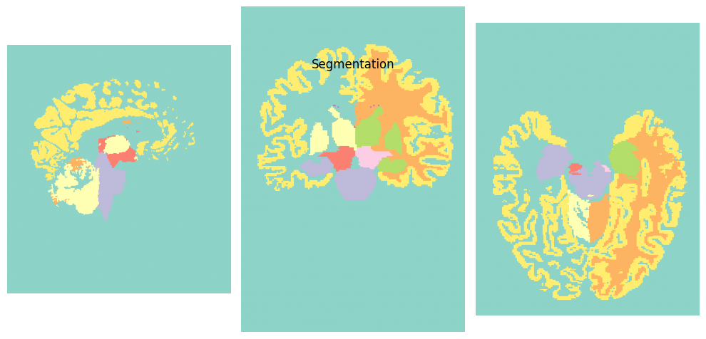
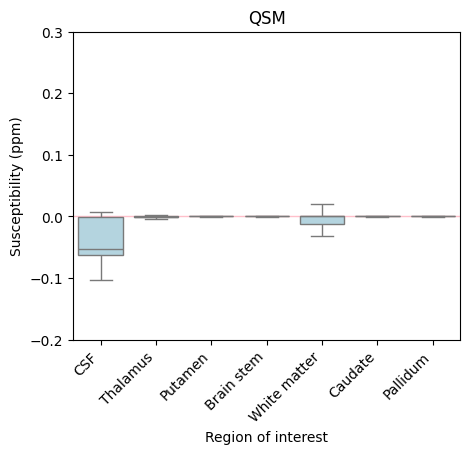

QSMxT#
#
Author: Ashley Stewart
Date: 25 Aug 2025
#
License:
Note: If this notebook uses neuroimaging tools from Neurocontainers, those tools retain their original licenses. Please see Neurodesk citation guidelines for details.
Citation and Resources:#
Tools included in this workflow#
QSMxT: Stewart AW, Robinson SD, O’Brien K, et al. QSMxT: Robust masking and artifact reduction for quantitative susceptibility mapping. Magnetic Resonance in Medicine. 2022;87(3):1289-1300. doi:10.1002/mrm.29048
QSMxT: Stewart AW, Bollman S, et al. QSMxT/QSMxT. GitHub; 2022. https://github.com/QSMxT/QSM
Dataset#
Bollmann, S., & Stewart, A. (2023, August 7). QSM DICOM testdata for QSMxT pipeline. Retrieved from osf.io/ru43c
QSMxT Interactive Notebook#
This interactive notebook estimates Quantitative Susceptibility Maps (QSMs) for two gradient-echo (GRE) MRI acquisitions using QSMxT provided by the Neurodesk project.
What is QSM?#
QSM is a form of quantitative MRI (qMRI) that estimates the magnetic susceptibility distribution across an imaged object. Magnetic susceptibility is the degree to which a material becomes magnetised by an external magnetic field. Major contributors to susceptibility include iron, calcium, and myelin, with the susceptibility of water typically approximating a zero-reference, though it is slightly diamagnetic. Read more about QSM here.
What is QSMxT?#
QSMxT is a suite of tools for building and running automated pipelines for QSM that:
is available open-source without any licensing required;
is distributed as a software container making it straightforward to access and install (Neurodesk!)
scales its processing to execute across many acquisitions through jobs parallelisation (using multiple processors or HPCs) provided by Nipype;
automates steps that usually require manual intervention and scripting, including:
DICOM to BIDS conversion;
QSM reconstruction using a range of algorithms;
segmentation using FastSurfer;
group space generation using ANTs;
export of susceptibility statistics by subject and region of interest (ROI) to CSV.

How do I access QSMxT?#
There are a few ways you can access QSMxT:
This notebook: You can access QSMxT in this notebook right now!
If you are running this on a Neurodesk Play instance, you can upload your own data into the sidebar via drag-and-drop.
Neurodesktop: QSMxT is in the applications menu of Neurodesktop.
On Neurodesk Play, upload your own data into the desktop via drag-and-drop.
On a local install of Neurodesk, bring any necessary files into the shared
~/neurodesktop-storagedirectory
Local install: QSMxT can also be installed via the Docker container
HPC install: QSMxT can also be installed via the Singularity container for use on HPCs
Download example DICOMs#
Here, we download some example DICOMs from our OSF repository for QSMxT.
These data include GRE and T1-weighted acquisitions for one subject (duplicated to act as two subjects).
!osf -p ru43c clone . > /dev/null 2>&1
!tar xf osfstorage/dicoms-unsorted.tar
!rm -rf osfstorage/
!tree dicoms-unsorted | head
!echo -e "...\nThere are `ls dicoms-unsorted | wc -l` unsorted DICOMs in ./dicoms-unsorted/"
dicoms-unsorted
├── MR.1.1.dcm
├── MR.1.10.dcm
├── MR.1.100.dcm
├── MR.1.101.dcm
├── MR.1.102.dcm
├── MR.1.103.dcm
├── MR.1.104.dcm
├── MR.1.105.dcm
├── MR.1.106.dcm
...
There are 1216 unsorted DICOMs in ./dicoms-unsorted/
Load QSMxT#
To load QSMxT inside a notebook, we can use the available module system:
import module
await module.load('qsmxt/8.1.1')
!qsmxt --version
[INFO]: QSMxT v8.1.1
Data standardisation#
QSMxT requires input data to conform to the Brain Imaging Data Structure (BIDS).
Luckily, QSMxT also provides scripts that can convert unorganised NIfTI or DICOM images to BIDS. If you are using NIfTI images and do not have DICOMs, see nifti-convert.
Convert DICOM to BIDS#
The DICOM to BIDS conversion must identify which series should be used for QSM reconstruction (e.g. MEGRE), and which series should be used for segmentation (T1-weighted). Because this information is not stored in the DICOM header in a standardised way, it can only be estimated based on other fields, or the user must identify series themselves.
If QSMxT is run interactively, the user will be prompted to identify the relevant series. However, because we are running QSMxT in a notebook, we disable the interactivity using --auto_yes and allow QSMxT to guess the intended purpose of each acquisition. In this case, it makes the right guess:
!dicom-convert dicoms-unsorted bids --auto_yes
/opt/miniconda-4.12.0/lib/python3.8/site-packages/dicompare/io.py:30: UserWarning: The DICOM readers are highly experimental, unstable, and only work for Siemens time-series at the moment
Please use with caution. We would be grateful for your help in improving them
from nibabel.nicom.csareader import get_csa_header
[INFO]: Running QSMxT 8.1.1
[INFO]: Command: /opt/miniconda-4.12.0/bin/dicom-convert dicoms-unsorted bids --auto_yes
[INFO]: Python interpreter: /opt/miniconda-4.12.0/bin/python3.8
Loading DICOM files: 0%| | 0/1216 [00:00<?, ?it/s]
Loading DICOM files: 1%|▏ | 8/1216 [00:00<00:21, 55.84it/s]
Loading DICOM files: 2%|▎ | 19/1216 [00:00<00:15, 79.55it/s]
Loading DICOM files: 2%|▍ | 29/1216 [00:00<00:13, 84.94it/s]
Loading DICOM files: 3%|▋ | 41/1216 [00:00<00:12, 94.41it/s]
Loading DICOM files: 4%|▊ | 51/1216 [00:00<00:12, 95.44it/s]
Loading DICOM files: 5%|▉ | 63/1216 [00:00<00:11, 100.53it/s]
Loading DICOM files: 6%|█▏ | 74/1216 [00:00<00:11, 96.79it/s]
Loading DICOM files: 7%|█▍ | 84/1216 [00:00<00:11, 96.81it/s]
Loading DICOM files: 8%|█▌ | 96/1216 [00:01<00:11, 101.45it/s]
Loading DICOM files: 9%|█▋ | 107/1216 [00:01<00:11, 99.73it/s]
Loading DICOM files: 10%|█▊ | 118/1216 [00:01<00:11, 97.80it/s]
Loading DICOM files: 11%|██ | 128/1216 [00:01<00:11, 96.03it/s]
Loading DICOM files: 11%|██▏ | 139/1216 [00:01<00:10, 98.40it/s]
Loading DICOM files: 12%|██▎ | 149/1216 [00:01<00:12, 86.88it/s]
Loading DICOM files: 13%|██▍ | 159/1216 [00:01<00:11, 89.39it/s]
Loading DICOM files: 14%|██▋ | 170/1216 [00:01<00:11, 92.49it/s]
Loading DICOM files: 15%|██▊ | 180/1216 [00:01<00:11, 91.84it/s]
Loading DICOM files: 16%|██▉ | 190/1216 [00:02<00:10, 93.56it/s]
Loading DICOM files: 16%|███▏ | 200/1216 [00:02<00:10, 93.65it/s]
Loading DICOM files: 17%|███▎ | 211/1216 [00:02<00:10, 95.16it/s]
Loading DICOM files: 18%|███▍ | 222/1216 [00:02<00:10, 97.45it/s]
Loading DICOM files: 19%|███▋ | 233/1216 [00:02<00:09, 99.87it/s]
Loading DICOM files: 20%|███▋ | 245/1216 [00:02<00:09, 105.10it/s]
Loading DICOM files: 21%|███▊ | 256/1216 [00:02<00:09, 104.73it/s]
Loading DICOM files: 22%|████▏ | 267/1216 [00:02<00:09, 96.95it/s]
Loading DICOM files: 23%|████▎ | 278/1216 [00:02<00:09, 97.70it/s]
Loading DICOM files: 24%|████▌ | 288/1216 [00:03<00:09, 98.32it/s]
Loading DICOM files: 25%|████▋ | 298/1216 [00:03<00:09, 97.41it/s]
Loading DICOM files: 25%|████▊ | 308/1216 [00:03<00:09, 96.19it/s]
Loading DICOM files: 26%|████▉ | 318/1216 [00:03<00:09, 94.13it/s]
Loading DICOM files: 27%|█████▏ | 328/1216 [00:03<00:09, 94.70it/s]
Loading DICOM files: 28%|█████▎ | 339/1216 [00:03<00:08, 98.81it/s]
Loading DICOM files: 29%|█████▍ | 349/1216 [00:03<00:08, 97.24it/s]
Loading DICOM files: 30%|█████▋ | 360/1216 [00:03<00:08, 97.83it/s]
Loading DICOM files: 30%|█████▊ | 370/1216 [00:03<00:08, 98.36it/s]
Loading DICOM files: 31%|█████▋ | 381/1216 [00:03<00:08, 101.29it/s]
Loading DICOM files: 32%|█████▊ | 392/1216 [00:04<00:08, 102.71it/s]
Loading DICOM files: 33%|██████▎ | 403/1216 [00:04<00:08, 98.45it/s]
Loading DICOM files: 34%|██████▍ | 413/1216 [00:04<00:08, 97.95it/s]
Loading DICOM files: 35%|██████▌ | 423/1216 [00:04<00:08, 94.01it/s]
Loading DICOM files: 36%|██████▊ | 433/1216 [00:04<00:08, 94.41it/s]
Loading DICOM files: 37%|██████▉ | 444/1216 [00:04<00:07, 96.96it/s]
Loading DICOM files: 37%|███████ | 455/1216 [00:04<00:07, 99.54it/s]
Loading DICOM files: 38%|██████▉ | 466/1216 [00:04<00:07, 100.79it/s]
Loading DICOM files: 39%|███████ | 477/1216 [00:04<00:07, 100.52it/s]
Loading DICOM files: 40%|███████▏ | 488/1216 [00:05<00:07, 101.64it/s]
Loading DICOM files: 41%|███████▍ | 499/1216 [00:05<00:07, 101.49it/s]
Loading DICOM files: 42%|███████▌ | 510/1216 [00:05<00:06, 101.71it/s]
Loading DICOM files: 43%|███████▋ | 522/1216 [00:05<00:06, 105.34it/s]
Loading DICOM files: 44%|███████▉ | 533/1216 [00:05<00:06, 103.12it/s]
Loading DICOM files: 45%|████████ | 544/1216 [00:05<00:06, 103.84it/s]
Loading DICOM files: 46%|████████▏ | 555/1216 [00:05<00:06, 101.56it/s]
Loading DICOM files: 47%|████████▍ | 566/1216 [00:05<00:06, 102.49it/s]
Loading DICOM files: 47%|█████████ | 577/1216 [00:05<00:06, 97.59it/s]
Loading DICOM files: 48%|█████████▏ | 588/1216 [00:06<00:06, 98.55it/s]
Loading DICOM files: 49%|████████▉ | 600/1216 [00:06<00:06, 101.26it/s]
Loading DICOM files: 50%|█████████ | 611/1216 [00:06<00:05, 101.96it/s]
Loading DICOM files: 51%|█████████▏ | 622/1216 [00:06<00:05, 104.07it/s]
Loading DICOM files: 52%|█████████▎ | 633/1216 [00:06<00:05, 103.51it/s]
Loading DICOM files: 53%|█████████▌ | 644/1216 [00:06<00:05, 101.88it/s]
Loading DICOM files: 54%|█████████▋ | 655/1216 [00:06<00:05, 100.77it/s]
Loading DICOM files: 55%|██████████▍ | 666/1216 [00:06<00:05, 99.53it/s]
Loading DICOM files: 56%|██████████▌ | 676/1216 [00:06<00:05, 99.33it/s]
Loading DICOM files: 56%|██████████▋ | 686/1216 [00:07<00:05, 95.74it/s]
Loading DICOM files: 57%|██████████▉ | 697/1216 [00:07<00:05, 98.09it/s]
Loading DICOM files: 58%|███████████ | 708/1216 [00:07<00:05, 99.35it/s]
Loading DICOM files: 59%|███████████▏ | 718/1216 [00:07<00:05, 98.35it/s]
Loading DICOM files: 60%|███████████▍ | 728/1216 [00:07<00:04, 98.41it/s]
Loading DICOM files: 61%|███████████▌ | 738/1216 [00:07<00:04, 97.59it/s]
Loading DICOM files: 62%|███████████▋ | 749/1216 [00:07<00:04, 99.05it/s]
Loading DICOM files: 62%|███████████▊ | 759/1216 [00:07<00:04, 95.81it/s]
Loading DICOM files: 63%|████████████ | 769/1216 [00:07<00:04, 94.41it/s]
Loading DICOM files: 64%|████████████▏ | 779/1216 [00:08<00:05, 80.09it/s]
Loading DICOM files: 65%|████████████▎ | 790/1216 [00:08<00:05, 85.07it/s]
Loading DICOM files: 66%|████████████▍ | 799/1216 [00:08<00:04, 84.62it/s]
Loading DICOM files: 67%|████████████▋ | 810/1216 [00:08<00:04, 90.84it/s]
Loading DICOM files: 68%|████████████▊ | 821/1216 [00:08<00:04, 94.67it/s]
Loading DICOM files: 68%|████████████▉ | 831/1216 [00:08<00:04, 92.46it/s]
Loading DICOM files: 69%|█████████████▏ | 841/1216 [00:08<00:04, 93.43it/s]
Loading DICOM files: 70%|█████████████▎ | 851/1216 [00:08<00:04, 90.86it/s]
Loading DICOM files: 71%|█████████████▍ | 862/1216 [00:08<00:03, 93.46it/s]
Loading DICOM files: 72%|█████████████▋ | 872/1216 [00:09<00:03, 94.80it/s]
Loading DICOM files: 73%|█████████████▊ | 882/1216 [00:09<00:03, 91.93it/s]
Loading DICOM files: 73%|█████████████▉ | 892/1216 [00:09<00:03, 91.54it/s]
Loading DICOM files: 74%|██████████████ | 902/1216 [00:09<00:03, 92.90it/s]
Loading DICOM files: 75%|██████████████▎ | 913/1216 [00:09<00:03, 95.98it/s]
Loading DICOM files: 76%|██████████████▍ | 924/1216 [00:09<00:02, 99.20it/s]
Loading DICOM files: 77%|██████████████▌ | 934/1216 [00:09<00:02, 98.66it/s]
Loading DICOM files: 78%|██████████████▊ | 944/1216 [00:09<00:02, 97.08it/s]
Loading DICOM files: 78%|██████████████▉ | 954/1216 [00:09<00:02, 93.79it/s]
Loading DICOM files: 79%|███████████████ | 964/1216 [00:09<00:02, 94.62it/s]
Loading DICOM files: 80%|███████████████▏ | 974/1216 [00:10<00:02, 93.34it/s]
Loading DICOM files: 81%|███████████████▍ | 984/1216 [00:10<00:02, 94.78it/s]
Loading DICOM files: 82%|███████████████▌ | 995/1216 [00:10<00:02, 98.78it/s]
Loading DICOM files: 83%|██████████████▉ | 1005/1216 [00:10<00:02, 94.75it/s]
Loading DICOM files: 83%|███████████████ | 1015/1216 [00:10<00:02, 94.64it/s]
Loading DICOM files: 84%|███████████████▏ | 1025/1216 [00:10<00:02, 94.87it/s]
Loading DICOM files: 85%|███████████████▎ | 1035/1216 [00:10<00:01, 94.36it/s]
Loading DICOM files: 86%|███████████████▍ | 1045/1216 [00:10<00:01, 94.08it/s]
Loading DICOM files: 87%|███████████████▌ | 1055/1216 [00:11<00:02, 80.46it/s]
Loading DICOM files: 88%|███████████████▊ | 1064/1216 [00:11<00:01, 82.87it/s]
Loading DICOM files: 88%|███████████████▉ | 1073/1216 [00:11<00:01, 83.56it/s]
Loading DICOM files: 89%|████████████████ | 1084/1216 [00:11<00:01, 88.25it/s]
Loading DICOM files: 90%|████████████████▏ | 1094/1216 [00:11<00:01, 89.74it/s]
Loading DICOM files: 91%|████████████████▎ | 1105/1216 [00:11<00:01, 92.89it/s]
Loading DICOM files: 92%|████████████████▌ | 1116/1216 [00:11<00:01, 94.68it/s]
Loading DICOM files: 93%|████████████████▋ | 1126/1216 [00:11<00:00, 95.73it/s]
Loading DICOM files: 93%|████████████████▊ | 1136/1216 [00:11<00:00, 91.95it/s]
Loading DICOM files: 94%|████████████████▉ | 1146/1216 [00:11<00:00, 91.10it/s]
Loading DICOM files: 95%|█████████████████ | 1156/1216 [00:12<00:00, 91.00it/s]
Loading DICOM files: 96%|█████████████████▎| 1167/1216 [00:12<00:00, 93.20it/s]
Loading DICOM files: 97%|█████████████████▍| 1178/1216 [00:12<00:00, 95.76it/s]
Loading DICOM files: 98%|█████████████████▌| 1188/1216 [00:12<00:00, 94.18it/s]
Loading DICOM files: 99%|█████████████████▋| 1198/1216 [00:12<00:00, 95.35it/s]
Loading DICOM files: 99%|█████████████████▉| 1208/1216 [00:12<00:00, 91.93it/s]
Loading DICOM files: 100%|██████████████████| 1216/1216 [00:12<00:00, 95.60it/s]
[INFO]: Loaded DICOM session in 12.94 seconds
/opt/miniconda-4.12.0/lib/python3.8/site-packages/dicompare/acquisition.py:144: PerformanceWarning: DataFrame is highly fragmented. This is usually the result of calling `frame.insert` many times, which has poor performance. Consider joining all columns at once using pd.concat(axis=1) instead. To get a de-fragmented frame, use `newframe = frame.copy()`
session_df["BaseAcquisition"] = "acq-" + session_df[acquisition_fields].apply(
/opt/miniconda-4.12.0/lib/python3.8/site-packages/dicompare/acquisition.py:195: PerformanceWarning: DataFrame is highly fragmented. This is usually the result of calling `frame.insert` many times, which has poor performance. Consider joining all columns at once using pd.concat(axis=1) instead. To get a de-fragmented frame, use `newframe = frame.copy()`
session_df.loc[param_group.index, "AcquisitionSignature"] = signature
/opt/miniconda-4.12.0/lib/python3.8/site-packages/dicompare/acquisition.py:218: PerformanceWarning: DataFrame is highly fragmented. This is usually the result of calling `frame.insert` many times, which has poor performance. Consider joining all columns at once using pd.concat(axis=1) instead. To get a de-fragmented frame, use `newframe = frame.copy()`
session_df["RunNumber"] = 1
/opt/miniconda-4.12.0/lib/python3.8/site-packages/dicompare/acquisition.py:301: PerformanceWarning: DataFrame is highly fragmented. This is usually the result of calling `frame.insert` many times, which has poor performance. Consider joining all columns at once using pd.concat(axis=1) instead. To get a de-fragmented frame, use `newframe = frame.copy()`
session_df["Acquisition"] = session_df["AcquisitionSignature"].fillna("Unknown").astype(str)
[INFO]: Auto-assigning initial labels
[INFO]: Auto-assigned selections:
Acquisition ... Description
0 acq-mp2ragehighres0p5isoslab ...
1 acq-qsmp21mmisote20 ...
2 acq-qsmp21mmisote20 ...
[3 rows x 7 columns]
[INFO]: Merging selections into dataframe...
[INFO]: Processing base group: ('dev_siemens^SB', 1, 20170705, 'acq-mp2ragehighres0p5isoslab', 'mp2rage_highRes_0p5iso_slab_UNI-DEN', 1, '1.2.276.0.7230010.3.1.3.0.4480.1677042698.772469', 'NA')
[INFO]: Found 1 unique Types in this group
[INFO]: Processing Type group: T1w with 288 rows
[INFO]: Found multiple DICOM paths for Type 'T1w', grouping by EchoNumber
[INFO]: Processing Echo group: 1.0 with 288 rows
[INFO]: Converting group with 288 rows
[INFO]: Running command: '"dcm2niix" -o "/home/jovyan/workspace/books/examples/quantitative_imaging/bids/temp_convert" -f "temp_output" -z n -m o "/home/jovyan/workspace/books/examples/quantitative_imaging/bids/temp_convert"'
Chris Rorden's dcm2niiX version v1.0.20240202 (JP2:OpenJPEG) (JP-LS:CharLS) GCC11.4.0 x86-64 (64-bit Linux)
Found 288 DICOM file(s)
Convert 288 DICOM as /home/jovyan/workspace/books/examples/quantitative_imaging/bids/temp_convert/temp_output (378x420x288x1)
Conversion required 0.495248 seconds (0.485975 for core code).
[INFO]: Processing base group: ('dev_siemens^SB', 1, 20170705, 'acq-qsmp21mmisote20', 'QSM_p2_1mmIso_TE20', 1, '1.3.12.2.1107.5.2.43.167001.2017070513471948579426649.0.0.0', 'HC1-7')
[INFO]: Found 1 unique Types in this group
[INFO]: Processing Type group: Mag with 160 rows
[INFO]: Found multiple DICOM paths for Type 'Mag', grouping by EchoNumber
[INFO]: Processing Echo group: 1.0 with 160 rows
[INFO]: Converting group with 160 rows
[INFO]: Running command: '"dcm2niix" -o "/home/jovyan/workspace/books/examples/quantitative_imaging/bids/temp_convert" -f "temp_output" -z n -m o "/home/jovyan/workspace/books/examples/quantitative_imaging/bids/temp_convert"'
Chris Rorden's dcm2niiX version v1.0.20240202 (JP2:OpenJPEG) (JP-LS:CharLS) GCC11.4.0 x86-64 (64-bit Linux)
Found 160 DICOM file(s)
Convert 160 DICOM as /home/jovyan/workspace/books/examples/quantitative_imaging/bids/temp_convert/temp_output (224x224x160x1)
Conversion required 0.250015 seconds (0.214343 for core code).
[INFO]: Processing base group: ('dev_siemens^SB', 1, 20170705, 'acq-qsmp21mmisote20', 'QSM_p2_1mmIso_TE20', 1, '1.3.12.2.1107.5.2.43.167001.2017070513471948580526650.0.0.0', 'HC1-7')
[INFO]: Found 1 unique Types in this group
[INFO]: Processing Type group: Phase with 160 rows
[INFO]: Found multiple DICOM paths for Type 'Phase', grouping by EchoNumber
[INFO]: Processing Echo group: 1.0 with 160 rows
[INFO]: Converting group with 160 rows
[INFO]: Running command: '"dcm2niix" -o "/home/jovyan/workspace/books/examples/quantitative_imaging/bids/temp_convert" -f "temp_output" -z n -m o "/home/jovyan/workspace/books/examples/quantitative_imaging/bids/temp_convert"'
Chris Rorden's dcm2niiX version v1.0.20240202 (JP2:OpenJPEG) (JP-LS:CharLS) GCC11.4.0 x86-64 (64-bit Linux)
Found 160 DICOM file(s)
Convert 160 DICOM as /home/jovyan/workspace/books/examples/quantitative_imaging/bids/temp_convert/temp_output_ph (224x224x160x1)
Conversion required 0.132220 seconds (0.124674 for core code).
[INFO]: Processing base group: ('dev_siemens^SB', 2, 20170705, 'acq-mp2ragehighres0p5isoslab', 'mp2rage_highRes_0p5iso_slab_UNI-DEN', 1, 2, 'NA')
[INFO]: Found 1 unique Types in this group
[INFO]: Processing Type group: T1w with 288 rows
[INFO]: Found multiple DICOM paths for Type 'T1w', grouping by EchoNumber
[INFO]: Processing Echo group: 1.0 with 288 rows
[INFO]: Converting group with 288 rows
[INFO]: Running command: '"dcm2niix" -o "/home/jovyan/workspace/books/examples/quantitative_imaging/bids/temp_convert" -f "temp_output" -z n -m o "/home/jovyan/workspace/books/examples/quantitative_imaging/bids/temp_convert"'
Chris Rorden's dcm2niiX version v1.0.20240202 (JP2:OpenJPEG) (JP-LS:CharLS) GCC11.4.0 x86-64 (64-bit Linux)
Found 288 DICOM file(s)
Convert 288 DICOM as /home/jovyan/workspace/books/examples/quantitative_imaging/bids/temp_convert/temp_output (378x420x288x1)
Conversion required 0.535701 seconds (0.492700 for core code).
[INFO]: Processing base group: ('dev_siemens^SB', 2, 20170705, 'acq-qsmp21mmisote20', 'QSM_p2_1mmIso_TE20', 1, 1, 'HC1-7')
[INFO]: Found 1 unique Types in this group
[INFO]: Processing Type group: Mag with 160 rows
[INFO]: Found multiple DICOM paths for Type 'Mag', grouping by EchoNumber
[INFO]: Processing Echo group: 1.0 with 160 rows
[INFO]: Converting group with 160 rows
[INFO]: Running command: '"dcm2niix" -o "/home/jovyan/workspace/books/examples/quantitative_imaging/bids/temp_convert" -f "temp_output" -z n -m o "/home/jovyan/workspace/books/examples/quantitative_imaging/bids/temp_convert"'
Chris Rorden's dcm2niiX version v1.0.20240202 (JP2:OpenJPEG) (JP-LS:CharLS) GCC11.4.0 x86-64 (64-bit Linux)
Found 160 DICOM file(s)
Convert 160 DICOM as /home/jovyan/workspace/books/examples/quantitative_imaging/bids/temp_convert/temp_output (224x224x160x1)
Conversion required 0.115310 seconds (0.114845 for core code).
[INFO]: Processing base group: ('dev_siemens^SB', 2, 20170705, 'acq-qsmp21mmisote20', 'QSM_p2_1mmIso_TE20', 1, 3, 'HC1-7')
[INFO]: Found 1 unique Types in this group
[INFO]: Processing Type group: Phase with 160 rows
[INFO]: Found multiple DICOM paths for Type 'Phase', grouping by EchoNumber
[INFO]: Processing Echo group: 1.0 with 160 rows
[INFO]: Converting group with 160 rows
[INFO]: Running command: '"dcm2niix" -o "/home/jovyan/workspace/books/examples/quantitative_imaging/bids/temp_convert" -f "temp_output" -z n -m o "/home/jovyan/workspace/books/examples/quantitative_imaging/bids/temp_convert"'
Chris Rorden's dcm2niiX version v1.0.20240202 (JP2:OpenJPEG) (JP-LS:CharLS) GCC11.4.0 x86-64 (64-bit Linux)
Found 160 DICOM file(s)
Convert 160 DICOM as /home/jovyan/workspace/books/examples/quantitative_imaging/bids/temp_convert/temp_output_ph (224x224x160x1)
Conversion required 0.119087 seconds (0.116781 for core code).
[INFO]: Scanning for multi-coil data to merge...
[INFO]: Scanning for multi-coil runs to combine...
[INFO]: Checking for complex or polar data requiring fixing...
Loading NIfTIs: 0%| | 0/46 [00:00<?, ?it/s]
Loading NIfTIs: 100%|█████████████████████████| 46/46 [00:00<00:00, 1471.69it/s]
[INFO]: Finished
!tree bids
bids
├── derivatives
│ ├── qsmxt-2026-02-23-015528
│ │ ├── command.txt
│ │ ├── pypeline.log
│ │ ├── qsmxt.log
│ │ ├── references.txt
│ │ ├── settings.json
│ │ ├── sub-1
│ │ │ └── ses-20170705
│ │ │ ├── anat
│ │ │ │ ├── sub-1_ses-20170705_acq-acqmp2ragehighres0p5isoslab_T1w_space-orig_dseg.nii
│ │ │ │ ├── sub-1_ses-20170705_acq-acqmp2ragehighres0p5isoslab_T1w_space-qsm_dseg.nii
│ │ │ │ ├── sub-1_ses-20170705_acq-acqqsmp21mmisote20_T2starw_Chimap.json
│ │ │ │ ├── sub-1_ses-20170705_acq-acqqsmp21mmisote20_T2starw_Chimap.nii
│ │ │ │ ├── sub-1_ses-20170705_acq-acqqsmp21mmisote20_T2starw_space-orig_dseg.nii
│ │ │ │ └── sub-1_ses-20170705_acq-acqqsmp21mmisote20_T2starw_space-qsm_dseg.nii
│ │ │ └── extra_data
│ │ │ ├── sub-1_ses-20170705_acq-acqmp2ragehighres0p5isoslab_T1w_desc-t1w-to-qsm_transform.mat
│ │ │ ├── sub-1_ses-20170705_acq-acqqsmp21mmisote20_T2starw_desc-t1w-to-qsm_transform.mat
│ │ │ └── sub-1_ses-20170705_acq-acqqsmp21mmisote20_T2starw_qsm-analysis.csv
│ │ └── sub-2
│ │ └── ses-20170705
│ │ ├── anat
│ │ │ ├── sub-2_ses-20170705_acq-acqmp2ragehighres0p5isoslab_T1w_space-orig_dseg.nii
│ │ │ ├── sub-2_ses-20170705_acq-acqmp2ragehighres0p5isoslab_T1w_space-qsm_dseg.nii
│ │ │ ├── sub-2_ses-20170705_acq-acqqsmp21mmisote20_T2starw_Chimap.json
│ │ │ ├── sub-2_ses-20170705_acq-acqqsmp21mmisote20_T2starw_Chimap.nii
│ │ │ ├── sub-2_ses-20170705_acq-acqqsmp21mmisote20_T2starw_space-orig_dseg.nii
│ │ │ └── sub-2_ses-20170705_acq-acqqsmp21mmisote20_T2starw_space-qsm_dseg.nii
│ │ └── extra_data
│ │ ├── sub-2_ses-20170705_acq-acqmp2ragehighres0p5isoslab_T1w_desc-t1w-to-qsm_transform.mat
│ │ ├── sub-2_ses-20170705_acq-acqqsmp21mmisote20_T2starw_desc-t1w-to-qsm_transform.mat
│ │ └── sub-2_ses-20170705_acq-acqqsmp21mmisote20_T2starw_qsm-analysis.csv
│ └── workflow
│ └── qsmxt-workflow
│ ├── d3.js
│ ├── graph.json
│ ├── graph1.json
│ ├── index.html
│ ├── sub-1
│ │ └── ses-20170705
│ │ ├── qsm_acq-acqmp2ragehighres0p5isoslab_T1w
│ │ │ ├── ants_register-t1-to-qsm
│ │ │ │ ├── _0x26965ef5cc41e767220be118686cf94a.json
│ │ │ │ ├── _inputs.pklz
│ │ │ │ ├── _node.pklz
│ │ │ │ ├── _report
│ │ │ │ │ └── report.rst
│ │ │ │ ├── command.txt
│ │ │ │ ├── result_ants_register-t1-to-qsm.pklz
│ │ │ │ └── sub-1_ses-20170705_acq-acqmp2ragehighres0p5isoslab_T1w_0GenericAffine.mat
│ │ │ ├── ants_transform-segmentation-to-qsm
│ │ │ │ ├── _0xffd79ea0eb8859c371893dcba3f754d0.json
│ │ │ │ ├── _inputs.pklz
│ │ │ │ ├── _node.pklz
│ │ │ │ ├── _report
│ │ │ │ │ └── report.rst
│ │ │ │ ├── command.txt
│ │ │ │ ├── result_ants_transform-segmentation-to-qsm.pklz
│ │ │ │ └── sub-1_ses-20170705_acq-acqmp2ragehighres0p5isoslab_T1w_segmentation_trans.nii
│ │ │ ├── copyfile
│ │ │ │ ├── _0x6ff3eda1a01645cacd33bb662400a3a3.json
│ │ │ │ ├── _inputs.pklz
│ │ │ │ ├── _node.pklz
│ │ │ │ ├── _report
│ │ │ │ │ └── report.rst
│ │ │ │ └── result_copyfile.pklz
│ │ │ ├── fastsurfer_segment-t1
│ │ │ │ ├── _0x9240cf170a4a32cbdc7012a3e3fba43f.json
│ │ │ │ ├── _inputs.pklz
│ │ │ │ ├── _node.pklz
│ │ │ │ ├── _report
│ │ │ │ │ └── report.rst
│ │ │ │ ├── command.txt
│ │ │ │ ├── output
│ │ │ │ │ ├── mri
│ │ │ │ │ │ └── orig
│ │ │ │ │ └── scripts
│ │ │ │ ├── result_fastsurfer_segment-t1.pklz
│ │ │ │ ├── sub-1_ses-20170705_acq-acqmp2ragehighres0p5isoslab_part-mag_T1w_dseg.mgz
│ │ │ │ └── sub-1_ses-20170705_acq-acqmp2ragehighres0p5isoslab_part-mag_T1w_dseg_nii.nii
│ │ │ ├── func_getfirst-canonical-magnitude
│ │ │ │ ├── _0x17a65cd5df867be722b017b6da174992.json
│ │ │ │ ├── _inputs.pklz
│ │ │ │ ├── _node.pklz
│ │ │ │ ├── _report
│ │ │ │ │ └── report.rst
│ │ │ │ └── result_func_getfirst-canonical-magnitude.pklz
│ │ │ ├── func_read-json-me
│ │ │ │ ├── _0x4cab54faa560ac545dfa943a36479ecf.json
│ │ │ │ ├── _inputs.pklz
│ │ │ │ ├── _node.pklz
│ │ │ │ ├── _report
│ │ │ │ │ └── report.rst
│ │ │ │ └── result_func_read-json-me.pklz
│ │ │ ├── func_read-json-se
│ │ │ │ ├── _0x3980a92ff68afecdfc90193db1a0854b.json
│ │ │ │ ├── _inputs.pklz
│ │ │ │ ├── _node.pklz
│ │ │ │ ├── _report
│ │ │ │ │ └── report.rst
│ │ │ │ └── result_func_read-json-se.pklz
│ │ │ ├── nibabel_as-canonical
│ │ │ │ ├── _0xa9da19b3224c6dc18c45442259968de1.json
│ │ │ │ ├── _inputs.pklz
│ │ │ │ ├── _node.pklz
│ │ │ │ ├── _report
│ │ │ │ │ └── report.rst
│ │ │ │ └── result_nibabel_as-canonical.pklz
│ │ │ ├── nibabel_numpy_nilearn_t1w-seg-resampled
│ │ │ │ ├── _0x1ddd3f36700209df68d0e5e65c75b3dc.json
│ │ │ │ ├── _inputs.pklz
│ │ │ │ ├── _node.pklz
│ │ │ │ ├── _report
│ │ │ │ │ └── report.rst
│ │ │ │ ├── result_nibabel_numpy_nilearn_t1w-seg-resampled.pklz
│ │ │ │ └── sub-1_ses-20170705_acq-acqmp2ragehighres0p5isoslab_part-mag_T1w_dseg_nii_resampled.nii
│ │ │ ├── nibabel_read-nii
│ │ │ │ ├── _0xbae06fa0c6a2f4d3398b043fc5399c84.json
│ │ │ │ ├── _inputs.pklz
│ │ │ │ ├── _node.pklz
│ │ │ │ ├── _report
│ │ │ │ │ └── report.rst
│ │ │ │ └── result_nibabel_read-nii.pklz
│ │ │ └── numpy_numpy_nibabel_mgz2nii
│ │ │ ├── _0x471e1aa6132e28dedf2f8d821e471735.json
│ │ │ ├── _inputs.pklz
│ │ │ ├── _node.pklz
│ │ │ ├── _report
│ │ │ │ └── report.rst
│ │ │ └── result_numpy_numpy_nibabel_mgz2nii.pklz
│ │ └── qsm_acq-acqqsmp21mmisote20_T2starw
│ │ ├── ants_register-t1-to-qsm
│ │ │ ├── _0x2e34ff765155580a4ba2b919ada05179.json
│ │ │ ├── _inputs.pklz
│ │ │ ├── _node.pklz
│ │ │ ├── _report
│ │ │ │ └── report.rst
│ │ │ ├── command.txt
│ │ │ ├── result_ants_register-t1-to-qsm.pklz
│ │ │ └── sub-1_ses-20170705_acq-acqqsmp21mmisote20_T2starw_0GenericAffine.mat
│ │ ├── ants_transform-segmentation-to-qsm
│ │ │ ├── _0x9d0f38f09d3c8e024d60e93dbe2678d1.json
│ │ │ ├── _inputs.pklz
│ │ │ ├── _node.pklz
│ │ │ ├── _report
│ │ │ │ └── report.rst
│ │ │ ├── command.txt
│ │ │ ├── result_ants_transform-segmentation-to-qsm.pklz
│ │ │ └── sub-1_ses-20170705_acq-acqqsmp21mmisote20_T2starw_segmentation_trans.nii
│ │ ├── combine_lists1
│ │ │ ├── _0x9711a6c20009d52f3817d8a6e3588aae.json
│ │ │ ├── _inputs.pklz
│ │ │ ├── _node.pklz
│ │ │ ├── _report
│ │ │ │ └── report.rst
│ │ │ └── result_combine_lists1.pklz
│ │ ├── combine_lists2
│ │ │ ├── _0x2b6c20a0750211f01f26ce135fb5c8cd.json
│ │ │ ├── _inputs.pklz
│ │ │ ├── _node.pklz
│ │ │ ├── _report
│ │ │ │ └── report.rst
│ │ │ └── result_combine_lists2.pklz
│ │ ├── copy_qsm_json_sidecar
│ │ │ ├── _0x965257cecc1f2cea1f919fd4696f30a5.json
│ │ │ ├── _inputs.pklz
│ │ │ ├── _node.pklz
│ │ │ ├── _report
│ │ │ │ └── report.rst
│ │ │ └── result_copy_qsm_json_sidecar.pklz
│ │ ├── copyfile
│ │ │ ├── _0x3e834c6cef54ea5154fb6de8cbdf0a91.json
│ │ │ ├── _inputs.pklz
│ │ │ ├── _node.pklz
│ │ │ ├── _report
│ │ │ │ └── report.rst
│ │ │ └── result_copyfile.pklz
│ │ ├── create_permutations
│ │ │ ├── _0xb6d99def20f6db23396c4f5b7ec28d55.json
│ │ │ ├── _inputs.pklz
│ │ │ ├── _node.pklz
│ │ │ ├── _report
│ │ │ │ └── report.rst
│ │ │ └── result_create_permutations.pklz
│ │ ├── fastsurfer_segment-t1
│ │ │ ├── _0x9240cf170a4a32cbdc7012a3e3fba43f.json
│ │ │ ├── _inputs.pklz
│ │ │ ├── _node.pklz
│ │ │ ├── _report
│ │ │ │ └── report.rst
│ │ │ ├── command.txt
│ │ │ ├── output
│ │ │ │ ├── mri
│ │ │ │ │ └── orig
│ │ │ │ └── scripts
│ │ │ ├── result_fastsurfer_segment-t1.pklz
│ │ │ ├── sub-1_ses-20170705_acq-acqmp2ragehighres0p5isoslab_part-mag_T1w_dseg.mgz
│ │ │ └── sub-1_ses-20170705_acq-acqmp2ragehighres0p5isoslab_part-mag_T1w_dseg_nii.nii
│ │ ├── func_getfirst-canonical-magnitude
│ │ │ ├── _0x7399e999e29dd48c8bb3c09477de15d8.json
│ │ │ ├── _inputs.pklz
│ │ │ ├── _node.pklz
│ │ │ ├── _report
│ │ │ │ └── report.rst
│ │ │ └── result_func_getfirst-canonical-magnitude.pklz
│ │ ├── func_read-json-me
│ │ │ ├── _0x133f2df7cc8e65a8638089e4970a317c.json
│ │ │ ├── _inputs.pklz
│ │ │ ├── _node.pklz
│ │ │ ├── _report
│ │ │ │ └── report.rst
│ │ │ └── result_func_read-json-me.pklz
│ │ ├── func_read-json-se
│ │ │ ├── _0xdc9a63fb26f805d0dc3ae5994d106a40.json
│ │ │ ├── _inputs.pklz
│ │ │ ├── _node.pklz
│ │ │ ├── _report
│ │ │ │ └── report.rst
│ │ │ └── result_func_read-json-se.pklz
│ │ ├── mask_workflow
│ │ │ ├── fsl-bet
│ │ │ │ ├── _0x389765c1b10a9b41776b520979608775.json
│ │ │ │ ├── _inputs.pklz
│ │ │ │ ├── _node.pklz
│ │ │ │ ├── _report
│ │ │ │ │ └── report.rst
│ │ │ │ ├── command.txt
│ │ │ │ ├── result_fsl-bet.pklz
│ │ │ │ └── sub-1_ses-20170705_acq-acqqsmp21mmisote20_part-mag_T2starw_bet-mask.nii.gz
│ │ │ └── scipy_numpy_nibabel_bet_erode
│ │ │ ├── _0x2c7a9225f4a7b3fe1744e7fbf9523f24.json
│ │ │ ├── _inputs.pklz
│ │ │ ├── _node.pklz
│ │ │ ├── _report
│ │ │ │ └── report.rst
│ │ │ ├── result_scipy_numpy_nibabel_bet_erode.pklz
│ │ │ └── sub-1_ses-20170705_acq-acqqsmp21mmisote20_part-mag_T2starw_bet-mask_ero.nii.gz
│ │ ├── nibabel_as-canonical
│ │ │ ├── _0x08a76a1437aa1afc9181d36dacf7e4f7.json
│ │ │ ├── _inputs.pklz
│ │ │ ├── _node.pklz
│ │ │ ├── _report
│ │ │ │ └── report.rst
│ │ │ └── result_nibabel_as-canonical.pklz
│ │ ├── nibabel_numpy_analyse-qsm
│ │ │ ├── _0x70155332b4306cd9872e958acaea09a3.json
│ │ │ ├── _inputs.pklz
│ │ │ ├── _node.pklz
│ │ │ ├── _report
│ │ │ │ └── report.rst
│ │ │ ├── mapflow
│ │ │ │ └── _nibabel_numpy_analyse-qsm0
│ │ │ │ ├── _0x710a11b204cd86e2e75df12d9394f833.json
│ │ │ │ ├── _inputs.pklz
│ │ │ │ ├── _node.pklz
│ │ │ │ ├── _report
│ │ │ │ │ └── report.rst
│ │ │ │ ├── result__nibabel_numpy_analyse-qsm0.pklz
│ │ │ │ └── sub-1_ses-20170705_desc-qsmxt-2026-02-23-015528_Chimap_sub-1_ses-20170705_space-qsm_desc-qsmxt-2026-02-23-015528_dseg_analysis.csv
│ │ │ └── result_nibabel_numpy_analyse-qsm.pklz
│ │ ├── nibabel_numpy_nilearn_axial-resampling
│ │ │ ├── _0xf6f872a2cf7708292c013533743e5f1b.json
│ │ │ ├── _inputs.pklz
│ │ │ ├── _node.pklz
│ │ │ ├── _report
│ │ │ │ └── report.rst
│ │ │ └── result_nibabel_numpy_nilearn_axial-resampling.pklz
│ │ ├── nibabel_numpy_nilearn_qsm-resampled
│ │ │ ├── _0x27c130582273b5698c9fd8b1681f5d63.json
│ │ │ ├── _inputs.pklz
│ │ │ ├── _node.pklz
│ │ │ ├── _report
│ │ │ │ └── report.rst
│ │ │ └── result_nibabel_numpy_nilearn_qsm-resampled.pklz
│ │ ├── nibabel_numpy_nilearn_t1w-seg-resampled
│ │ │ ├── _0x2a24ec9f216a9e6a7b431a3c6e7a5461.json
│ │ │ ├── _inputs.pklz
│ │ │ ├── _node.pklz
│ │ │ ├── _report
│ │ │ │ └── report.rst
│ │ │ ├── result_nibabel_numpy_nilearn_t1w-seg-resampled.pklz
│ │ │ └── sub-1_ses-20170705_acq-acqmp2ragehighres0p5isoslab_part-mag_T1w_dseg_nii_resampled.nii
│ │ ├── nibabel_numpy_qsm-average
│ │ │ ├── _0xac188c084a009488056b480506d0cc76.json
│ │ │ ├── _inputs.pklz
│ │ │ ├── _node.pklz
│ │ │ ├── _report
│ │ │ │ └── report.rst
│ │ │ └── result_nibabel_numpy_qsm-average.pklz
│ │ ├── nibabel_numpy_qsm-referenced
│ │ │ ├── _0x79d2656eb9adb0c40854dbd88b384752.json
│ │ │ ├── _inputs.pklz
│ │ │ ├── _node.pklz
│ │ │ ├── _report
│ │ │ │ └── report.rst
│ │ │ ├── result_nibabel_numpy_qsm-referenced.pklz
│ │ │ ├── sub-1_ses-20170705_acq-acqqsmp21mmisote20_part-phase_T2starw_scaled_romeo-unwrapped_normalized_vsharp_rts_ref.json
│ │ │ └── sub-1_ses-20170705_acq-acqqsmp21mmisote20_part-phase_T2starw_scaled_romeo-unwrapped_normalized_vsharp_rts_ref.nii
│ │ ├── nibabel_numpy_scale-phase
│ │ │ ├── _0x4d07495d0f6705580bcda1d999744de2.json
│ │ │ ├── _inputs.pklz
│ │ │ ├── _node.pklz
│ │ │ ├── _report
│ │ │ │ └── report.rst
│ │ │ ├── result_nibabel_numpy_scale-phase.pklz
│ │ │ └── sub-1_ses-20170705_acq-acqqsmp21mmisote20_part-phase_T2starw_scaled.nii
│ │ ├── nibabel_read-nii
│ │ │ ├── _0x134603cef3d27b3209ef5ff354c77577.json
│ │ │ ├── _inputs.pklz
│ │ │ ├── _node.pklz
│ │ │ ├── _report
│ │ │ │ └── report.rst
│ │ │ └── result_nibabel_read-nii.pklz
│ │ ├── numpy_numpy_nibabel_mgz2nii
│ │ │ ├── _0x8264b5ac441b62c271541ba41f8997e1.json
│ │ │ ├── _inputs.pklz
│ │ │ ├── _node.pklz
│ │ │ ├── _report
│ │ │ │ └── report.rst
│ │ │ └── result_numpy_numpy_nibabel_mgz2nii.pklz
│ │ └── qsm_workflow
│ │ ├── mrt_romeo
│ │ │ ├── _0xed203408ed4963f4c7bd411c120743bb.json
│ │ │ ├── _inputs.pklz
│ │ │ ├── _node.pklz
│ │ │ ├── _report
│ │ │ │ └── report.rst
│ │ │ ├── command.txt
│ │ │ ├── result_mrt_romeo.pklz
│ │ │ └── sub-1_ses-20170705_acq-acqqsmp21mmisote20_part-phase_T2starw_scaled_romeo-unwrapped.nii
│ │ ├── nibabel-numpy_normalize-phase
│ │ │ ├── _0x07f6f228e86cc6b3750aa4b84fec9427.json
│ │ │ ├── _inputs.pklz
│ │ │ ├── _node.pklz
│ │ │ ├── _report
│ │ │ │ └── report.rst
│ │ │ ├── result_nibabel-numpy_normalize-phase.pklz
│ │ │ └── sub-1_ses-20170705_acq-acqqsmp21mmisote20_part-phase_T2starw_scaled_romeo-unwrapped_normalized.nii
│ │ ├── qsmjl_rts
│ │ │ ├── _0xf7ecab2ce868d22bd4729fba33c855e1.json
│ │ │ ├── _inputs.pklz
│ │ │ ├── _node.pklz
│ │ │ ├── _report
│ │ │ │ └── report.rst
│ │ │ ├── command.txt
│ │ │ ├── result_qsmjl_rts.pklz
│ │ │ └── sub-1_ses-20170705_acq-acqqsmp21mmisote20_part-phase_T2starw_scaled_romeo-unwrapped_normalized_vsharp_rts.nii
│ │ └── qsmjl_vsharp
│ │ ├── _0x67f0146c97eb74437aff7d63b6a12837.json
│ │ ├── _inputs.pklz
│ │ ├── _node.pklz
│ │ ├── _report
│ │ │ └── report.rst
│ │ ├── command.txt
│ │ ├── result_qsmjl_vsharp.pklz
│ │ ├── sub-1_ses-20170705_acq-acqqsmp21mmisote20_part-mag_T2starw_bet-mask_ero_vsharp-mask.nii
│ │ └── sub-1_ses-20170705_acq-acqqsmp21mmisote20_part-phase_T2starw_scaled_romeo-unwrapped_normalized_vsharp.nii
│ └── sub-2
│ └── ses-20170705
│ ├── qsm_acq-acqmp2ragehighres0p5isoslab_T1w
│ │ ├── ants_register-t1-to-qsm
│ │ │ ├── _0x7f9df07f182e824c8f480ca24b6a79c4.json
│ │ │ ├── _inputs.pklz
│ │ │ ├── _node.pklz
│ │ │ ├── _report
│ │ │ │ └── report.rst
│ │ │ ├── command.txt
│ │ │ ├── result_ants_register-t1-to-qsm.pklz
│ │ │ └── sub-2_ses-20170705_acq-acqmp2ragehighres0p5isoslab_T1w_0GenericAffine.mat
│ │ ├── ants_transform-segmentation-to-qsm
│ │ │ ├── _0xc2595da8e69866a3fad2f554c4c40d38.json
│ │ │ ├── _inputs.pklz
│ │ │ ├── _node.pklz
│ │ │ ├── _report
│ │ │ │ └── report.rst
│ │ │ ├── command.txt
│ │ │ ├── result_ants_transform-segmentation-to-qsm.pklz
│ │ │ └── sub-2_ses-20170705_acq-acqmp2ragehighres0p5isoslab_T1w_segmentation_trans.nii
│ │ ├── copyfile
│ │ │ ├── _0x125598b6deeeb607326fb34849b6e5be.json
│ │ │ ├── _inputs.pklz
│ │ │ ├── _node.pklz
│ │ │ ├── _report
│ │ │ │ └── report.rst
│ │ │ └── result_copyfile.pklz
│ │ ├── fastsurfer_segment-t1
│ │ │ ├── _0x0df84cf45d5c228d72964047e5c34492.json
│ │ │ ├── _inputs.pklz
│ │ │ ├── _node.pklz
│ │ │ ├── _report
│ │ │ │ └── report.rst
│ │ │ ├── command.txt
│ │ │ ├── output
│ │ │ │ ├── mri
│ │ │ │ │ └── orig
│ │ │ │ └── scripts
│ │ │ ├── result_fastsurfer_segment-t1.pklz
│ │ │ ├── sub-2_ses-20170705_acq-acqmp2ragehighres0p5isoslab_part-mag_T1w_dseg.mgz
│ │ │ └── sub-2_ses-20170705_acq-acqmp2ragehighres0p5isoslab_part-mag_T1w_dseg_nii.nii
│ │ ├── func_getfirst-canonical-magnitude
│ │ │ ├── _0x682649517451f4622d1cfa921d1a4017.json
│ │ │ ├── _inputs.pklz
│ │ │ ├── _node.pklz
│ │ │ ├── _report
│ │ │ │ └── report.rst
│ │ │ └── result_func_getfirst-canonical-magnitude.pklz
│ │ ├── func_read-json-me
│ │ │ ├── _0x286be289098b8918db584ade57ca3c68.json
│ │ │ ├── _inputs.pklz
│ │ │ ├── _node.pklz
│ │ │ ├── _report
│ │ │ │ └── report.rst
│ │ │ └── result_func_read-json-me.pklz
│ │ ├── func_read-json-se
│ │ │ ├── _0xaa6e44059babcf7ef48c1711c9ab819a.json
│ │ │ ├── _inputs.pklz
│ │ │ ├── _node.pklz
│ │ │ ├── _report
│ │ │ │ └── report.rst
│ │ │ └── result_func_read-json-se.pklz
│ │ ├── nibabel_as-canonical
│ │ │ ├── _0x95308eb6235a7a68bc61cca8a90928e9.json
│ │ │ ├── _inputs.pklz
│ │ │ ├── _node.pklz
│ │ │ ├── _report
│ │ │ │ └── report.rst
│ │ │ └── result_nibabel_as-canonical.pklz
│ │ ├── nibabel_numpy_nilearn_t1w-seg-resampled
│ │ │ ├── _0x5678477a73119b6196ee59fa75628233.json
│ │ │ ├── _inputs.pklz
│ │ │ ├── _node.pklz
│ │ │ ├── _report
│ │ │ │ └── report.rst
│ │ │ ├── result_nibabel_numpy_nilearn_t1w-seg-resampled.pklz
│ │ │ └── sub-2_ses-20170705_acq-acqmp2ragehighres0p5isoslab_part-mag_T1w_dseg_nii_resampled.nii
│ │ ├── nibabel_read-nii
│ │ │ ├── _0x566002585da8ef36faea6d25eb8cf31f.json
│ │ │ ├── _inputs.pklz
│ │ │ ├── _node.pklz
│ │ │ ├── _report
│ │ │ │ └── report.rst
│ │ │ └── result_nibabel_read-nii.pklz
│ │ └── numpy_numpy_nibabel_mgz2nii
│ │ ├── _0x5fceaaf14e6c856c6cac95fa0e1f7363.json
│ │ ├── _inputs.pklz
│ │ ├── _node.pklz
│ │ ├── _report
│ │ │ └── report.rst
│ │ └── result_numpy_numpy_nibabel_mgz2nii.pklz
│ └── qsm_acq-acqqsmp21mmisote20_T2starw
│ ├── ants_register-t1-to-qsm
│ │ ├── _0x7c1878dc19fa711d4791027087fcca02.json
│ │ ├── _inputs.pklz
│ │ ├── _node.pklz
│ │ ├── _report
│ │ │ └── report.rst
│ │ ├── command.txt
│ │ ├── result_ants_register-t1-to-qsm.pklz
│ │ └── sub-2_ses-20170705_acq-acqqsmp21mmisote20_T2starw_0GenericAffine.mat
│ ├── ants_transform-segmentation-to-qsm
│ │ ├── _0xd911a1425ae8c571350cf2674fa475ef.json
│ │ ├── _inputs.pklz
│ │ ├── _node.pklz
│ │ ├── _report
│ │ │ └── report.rst
│ │ ├── command.txt
│ │ ├── result_ants_transform-segmentation-to-qsm.pklz
│ │ └── sub-2_ses-20170705_acq-acqqsmp21mmisote20_T2starw_segmentation_trans.nii
│ ├── combine_lists1
│ │ ├── _0xd93996b15da3d893fccf9d9b81005c93.json
│ │ ├── _inputs.pklz
│ │ ├── _node.pklz
│ │ ├── _report
│ │ │ └── report.rst
│ │ └── result_combine_lists1.pklz
│ ├── combine_lists2
│ │ ├── _0x74aee1735b97c7ca2ea698fd74d13c09.json
│ │ ├── _inputs.pklz
│ │ ├── _node.pklz
│ │ ├── _report
│ │ │ └── report.rst
│ │ └── result_combine_lists2.pklz
│ ├── copy_qsm_json_sidecar
│ │ ├── _0x4eee2a20a7d91217c21335865b5235d3.json
│ │ ├── _inputs.pklz
│ │ ├── _node.pklz
│ │ ├── _report
│ │ │ └── report.rst
│ │ └── result_copy_qsm_json_sidecar.pklz
│ ├── copyfile
│ │ ├── _0xc0c67046db2d2a98484f74a5d64a1c22.json
│ │ ├── _inputs.pklz
│ │ ├── _node.pklz
│ │ ├── _report
│ │ │ └── report.rst
│ │ └── result_copyfile.pklz
│ ├── create_permutations
│ │ ├── _0xbdee18a42ba2cca90798d7a55881e594.json
│ │ ├── _inputs.pklz
│ │ ├── _node.pklz
│ │ ├── _report
│ │ │ └── report.rst
│ │ └── result_create_permutations.pklz
│ ├── fastsurfer_segment-t1
│ │ ├── _0x0df84cf45d5c228d72964047e5c34492.json
│ │ ├── _inputs.pklz
│ │ ├── _node.pklz
│ │ ├── _report
│ │ │ └── report.rst
│ │ ├── command.txt
│ │ ├── output
│ │ │ ├── mri
│ │ │ │ └── orig
│ │ │ └── scripts
│ │ ├── result_fastsurfer_segment-t1.pklz
│ │ ├── sub-2_ses-20170705_acq-acqmp2ragehighres0p5isoslab_part-mag_T1w_dseg.mgz
│ │ └── sub-2_ses-20170705_acq-acqmp2ragehighres0p5isoslab_part-mag_T1w_dseg_nii.nii
│ ├── func_getfirst-canonical-magnitude
│ │ ├── _0xb4462fa0ee91c0d18ce8b9d23cc51508.json
│ │ ├── _inputs.pklz
│ │ ├── _node.pklz
│ │ ├── _report
│ │ │ └── report.rst
│ │ └── result_func_getfirst-canonical-magnitude.pklz
│ ├── func_read-json-me
│ │ ├── _0x1e93d912ca5e53e10cf1dec09ff64067.json
│ │ ├── _inputs.pklz
│ │ ├── _node.pklz
│ │ ├── _report
│ │ │ └── report.rst
│ │ └── result_func_read-json-me.pklz
│ ├── func_read-json-se
│ │ ├── _0x0e00a1f85135886be40812b896ef2371.json
│ │ ├── _inputs.pklz
│ │ ├── _node.pklz
│ │ ├── _report
│ │ │ └── report.rst
│ │ └── result_func_read-json-se.pklz
│ ├── mask_workflow
│ │ ├── fsl-bet
│ │ │ ├── _0xe9e47f95bf01f2b798a8270b30696e11.json
│ │ │ ├── _inputs.pklz
│ │ │ ├── _node.pklz
│ │ │ ├── _report
│ │ │ │ └── report.rst
│ │ │ ├── command.txt
│ │ │ ├── result_fsl-bet.pklz
│ │ │ └── sub-2_ses-20170705_acq-acqqsmp21mmisote20_part-mag_T2starw_bet-mask.nii.gz
│ │ └── scipy_numpy_nibabel_bet_erode
│ │ ├── _0x5d2920afcc93b76f3c4a4716e4aa8a03.json
│ │ ├── _inputs.pklz
│ │ ├── _node.pklz
│ │ ├── _report
│ │ │ └── report.rst
│ │ ├── result_scipy_numpy_nibabel_bet_erode.pklz
│ │ └── sub-2_ses-20170705_acq-acqqsmp21mmisote20_part-mag_T2starw_bet-mask_ero.nii.gz
│ ├── nibabel_as-canonical
│ │ ├── _0xa6059bbcbe349865ca17ec850b527493.json
│ │ ├── _inputs.pklz
│ │ ├── _node.pklz
│ │ ├── _report
│ │ │ └── report.rst
│ │ └── result_nibabel_as-canonical.pklz
│ ├── nibabel_numpy_analyse-qsm
│ │ ├── _0xe35041b578150441bf6f91315655e47f.json
│ │ ├── _inputs.pklz
│ │ ├── _node.pklz
│ │ ├── _report
│ │ │ └── report.rst
│ │ ├── mapflow
│ │ │ └── _nibabel_numpy_analyse-qsm0
│ │ │ ├── _0xbf1d81675a9c5d974de9db7c887e3286.json
│ │ │ ├── _inputs.pklz
│ │ │ ├── _node.pklz
│ │ │ ├── _report
│ │ │ │ └── report.rst
│ │ │ ├── result__nibabel_numpy_analyse-qsm0.pklz
│ │ │ └── sub-2_ses-20170705_desc-qsmxt-2026-02-23-015528_Chimap_sub-2_ses-20170705_space-qsm_desc-qsmxt-2026-02-23-015528_dseg_analysis.csv
│ │ └── result_nibabel_numpy_analyse-qsm.pklz
│ ├── nibabel_numpy_nilearn_axial-resampling
│ │ ├── _0xd92a590f2f9a399cb1d04c828ab7e832.json
│ │ ├── _inputs.pklz
│ │ ├── _node.pklz
│ │ ├── _report
│ │ │ └── report.rst
│ │ └── result_nibabel_numpy_nilearn_axial-resampling.pklz
│ ├── nibabel_numpy_nilearn_qsm-resampled
│ │ ├── _0xdb84072e250a6b85538ce033d5542532.json
│ │ ├── _inputs.pklz
│ │ ├── _node.pklz
│ │ ├── _report
│ │ │ └── report.rst
│ │ └── result_nibabel_numpy_nilearn_qsm-resampled.pklz
│ ├── nibabel_numpy_nilearn_t1w-seg-resampled
│ │ ├── _0x5c7a8be230fcc7a83740734bb0e78004.json
│ │ ├── _inputs.pklz
│ │ ├── _node.pklz
│ │ ├── _report
│ │ │ └── report.rst
│ │ ├── result_nibabel_numpy_nilearn_t1w-seg-resampled.pklz
│ │ └── sub-2_ses-20170705_acq-acqmp2ragehighres0p5isoslab_part-mag_T1w_dseg_nii_resampled.nii
│ ├── nibabel_numpy_qsm-average
│ │ ├── _0xd25c3c698179fe287008e7355692eb72.json
│ │ ├── _inputs.pklz
│ │ ├── _node.pklz
│ │ ├── _report
│ │ │ └── report.rst
│ │ └── result_nibabel_numpy_qsm-average.pklz
│ ├── nibabel_numpy_qsm-referenced
│ │ ├── _0x027bf0f9307631819a37c6046bcff9e4.json
│ │ ├── _inputs.pklz
│ │ ├── _node.pklz
│ │ ├── _report
│ │ │ └── report.rst
│ │ ├── result_nibabel_numpy_qsm-referenced.pklz
│ │ ├── sub-2_ses-20170705_acq-acqqsmp21mmisote20_part-phase_T2starw_scaled_romeo-unwrapped_normalized_vsharp_rts_ref.json
│ │ └── sub-2_ses-20170705_acq-acqqsmp21mmisote20_part-phase_T2starw_scaled_romeo-unwrapped_normalized_vsharp_rts_ref.nii
│ ├── nibabel_numpy_scale-phase
│ │ ├── _0xb0da535c497233c88e17d944cf6249e5.json
│ │ ├── _inputs.pklz
│ │ ├── _node.pklz
│ │ ├── _report
│ │ │ └── report.rst
│ │ ├── result_nibabel_numpy_scale-phase.pklz
│ │ └── sub-2_ses-20170705_acq-acqqsmp21mmisote20_part-phase_T2starw_scaled.nii
│ ├── nibabel_read-nii
│ │ ├── _0x0028528964ed58a768cbab3dd6d1fa4f.json
│ │ ├── _inputs.pklz
│ │ ├── _node.pklz
│ │ ├── _report
│ │ │ └── report.rst
│ │ └── result_nibabel_read-nii.pklz
│ ├── numpy_numpy_nibabel_mgz2nii
│ │ ├── _0x03ed62e063dcdbf4999c27b01a8d9bb9.json
│ │ ├── _inputs.pklz
│ │ ├── _node.pklz
│ │ ├── _report
│ │ │ └── report.rst
│ │ └── result_numpy_numpy_nibabel_mgz2nii.pklz
│ └── qsm_workflow
│ ├── mrt_romeo
│ │ ├── _0x8aa30f9b237284fd0e38eeb194cd77ed.json
│ │ ├── _inputs.pklz
│ │ ├── _node.pklz
│ │ ├── _report
│ │ │ └── report.rst
│ │ ├── command.txt
│ │ ├── result_mrt_romeo.pklz
│ │ └── sub-2_ses-20170705_acq-acqqsmp21mmisote20_part-phase_T2starw_scaled_romeo-unwrapped.nii
│ ├── nibabel-numpy_normalize-phase
│ │ ├── _0x7358539f64f7b6c1dc31fb36798563f4.json
│ │ ├── _inputs.pklz
│ │ ├── _node.pklz
│ │ ├── _report
│ │ │ └── report.rst
│ │ ├── result_nibabel-numpy_normalize-phase.pklz
│ │ └── sub-2_ses-20170705_acq-acqqsmp21mmisote20_part-phase_T2starw_scaled_romeo-unwrapped_normalized.nii
│ ├── qsmjl_rts
│ │ ├── _0xa3b6becaeebc2a3385d0a78db62a11c7.json
│ │ ├── _inputs.pklz
│ │ ├── _node.pklz
│ │ ├── _report
│ │ │ └── report.rst
│ │ ├── command.txt
│ │ ├── result_qsmjl_rts.pklz
│ │ └── sub-2_ses-20170705_acq-acqqsmp21mmisote20_part-phase_T2starw_scaled_romeo-unwrapped_normalized_vsharp_rts.nii
│ └── qsmjl_vsharp
│ ├── _0x2c3504174ef0b5a7443bbf41cea07b49.json
│ ├── _inputs.pklz
│ ├── _node.pklz
│ ├── _report
│ │ └── report.rst
│ ├── command.txt
│ ├── result_qsmjl_vsharp.pklz
│ ├── sub-2_ses-20170705_acq-acqqsmp21mmisote20_part-mag_T2starw_bet-mask_ero_vsharp-mask.nii
│ └── sub-2_ses-20170705_acq-acqqsmp21mmisote20_part-phase_T2starw_scaled_romeo-unwrapped_normalized_vsharp.nii
├── log_2026-02-23_01-54-56292219.txt
├── log_2026-02-23_02-29-23819763.txt
├── references.txt
├── sub-1
│ └── ses-20170705
│ └── anat
│ ├── sub-1_ses-20170705_acq-acqmp2ragehighres0p5isoslab_part-mag_T1w.json
│ ├── sub-1_ses-20170705_acq-acqmp2ragehighres0p5isoslab_part-mag_T1w.nii
│ ├── sub-1_ses-20170705_acq-acqqsmp21mmisote20_part-mag_T2starw.json
│ ├── sub-1_ses-20170705_acq-acqqsmp21mmisote20_part-mag_T2starw.nii
│ ├── sub-1_ses-20170705_acq-acqqsmp21mmisote20_part-phase_T2starw.json
│ └── sub-1_ses-20170705_acq-acqqsmp21mmisote20_part-phase_T2starw.nii
└── sub-2
└── ses-20170705
└── anat
├── sub-2_ses-20170705_acq-acqmp2ragehighres0p5isoslab_part-mag_T1w.json
├── sub-2_ses-20170705_acq-acqmp2ragehighres0p5isoslab_part-mag_T1w.nii
├── sub-2_ses-20170705_acq-acqqsmp21mmisote20_part-mag_T2starw.json
├── sub-2_ses-20170705_acq-acqqsmp21mmisote20_part-mag_T2starw.nii
├── sub-2_ses-20170705_acq-acqqsmp21mmisote20_part-phase_T2starw.json
└── sub-2_ses-20170705_acq-acqqsmp21mmisote20_part-phase_T2starw.nii
205 directories, 494 files
Inspect input data#
Here we define a function we will use to visualise NIfTI images so we can view some of the input data:
%%capture
!pip install seaborn numpy nibabel pandas nilearn
from glob import glob
from matplotlib import pyplot as plt
import numpy as np
import nibabel as nib
def show_nii(nii_path, title=None, figsize=(4,5), cmap='gray', **imshow_args):
# load data\n",
data_1 = nib.load(nii_path).get_fdata()
# get middle slices\n",
slc_data1 = np.rot90(data_1[np.shape(data_1)[0]//2,:,:])
slc_data2 = np.rot90(data_1[:,np.shape(data_1)[1]//2,:])
slc_data3 = np.rot90(data_1[:,:,np.shape(data_1)[2]//2])
# show slices\n",
fig, axes = plt.subplots(nrows=1, ncols=3, figsize=figsize)
if title: plt.suptitle(title)
axes[0].imshow(slc_data1, cmap=cmap, **imshow_args)
axes[1].imshow(slc_data2, cmap=cmap, **imshow_args)
axes[2].imshow(slc_data3, cmap=cmap, **imshow_args)
axes[0].axis('off')
axes[1].axis('off')
axes[2].axis('off')
fig.tight_layout()
fig.subplots_adjust(top=1.55)
plt.show()
show_nii(glob("bids/sub-*/ses-*/anat/*mag*T2starw*nii*")[0], title="Magnitude", vmax=500)
show_nii(glob("bids/sub-*/ses-*/anat/*phase*T2starw*nii*")[0], title="Phase")
show_nii(glob("bids/sub-*/ses-*/anat/*T1w*nii*")[0], title="T1-weighted")


Interactive Display using Niivue#
Uncomment the next cell if you want to inspect the T1-weighted image interactively.
#from ipyniivue import NiiVue
#nv_T1 = NiiVue()
#nv_T1.load_volumes([{"path": glob("bids/sub-*/ses-*/anat/*T1w*nii*")[0]}])
#nv_T1
Run QSMxT#
We are now ready to run QSMxT! We will generate susceptibility maps and segmentations, and export analysis CSVs to file.
The usual way of running QSMxT is to use qsmxt bids_dir. This will launch an interactive command-line interface (CLI) to setup your desired pipelines. However, since we are running this in a notebook, we need to use command-line arguments to by-pass the interface and execute a pipeline.
But first, let’s consider our pipeline settings. For QSM reconstruction, QSMxT provides a range of sensible defaults fit for different purposes. We can list the premade QSM pipelines using --list_premades. For the full pipeline details used for each premade pipeline, see qsm_pipelines.json.
!qsmxt --list_premades
=== Premade pipelines ===
default: Default QSMxT settings (GRE; assumes human brain)
gre: Applies suggested settings for 3D-GRE images
epi: Applies suggested settings for 3D-EPI images (assumes human brain)
bet: Applies a traditional BET-masking approach (artefact reduction unavailable; assumes human brain)
fast: Applies a set of fast algorithms
body: Applies suggested settings for non-brain applications
nextqsm: Applies suggested settings for running the NeXtQSM algorithm (assumes human brain)
[INFO]: Finished
For this demonstration, we will go with the fast pipeline. To export segmentations and analysis results, we will use --do_segmentation and --do_analysis. The --auto_yes option avoid the interactive CLI interface that cannot be used in a notebook:
!qsmxt bids \
--premade fast \
--do_qsm \
--do_segmentation \
--do_analysis \
--auto_yes
[INFO]: QSMxT v8.1.1
[INFO]: Python interpreter: /opt/miniconda-4.12.0/bin/python3.8
[INFO]: Command: qsmxt /home/jovyan/workspace/books/examples/quantitative_imaging/bids --premade 'fast' --do_qsm --do_segmentation --do_analysis --auto_yes
[WARNING]: Pipeline is NOT guidelines compliant (see https://doi.org/10.1002/mrm.30006):; Phase-quality-based masking recommended
[INFO]: Available memory: 91.879 GB
[INFO]: Creating QSMxT workflow for sub-1.ses-20170705.acq-acqmp2ragehighres0p5isoslab.T1w...
[INFO]: Creating QSMxT workflow for sub-1.ses-20170705.acq-acqqsmp21mmisote20.T2starw...
[INFO]: Creating QSMxT workflow for sub-2.ses-20170705.acq-acqmp2ragehighres0p5isoslab.T1w...
[INFO]: Creating QSMxT workflow for sub-2.ses-20170705.acq-acqqsmp21mmisote20.T2starw...
[INFO]: Running using MultiProc plugin with n_procs=32
260223-02:29:52,47 nipype.workflow INFO:
Workflow qsmxt-workflow settings: ['check', 'execution', 'logging', 'monitoring']
260223-02:29:52,87 nipype.workflow INFO:
Running in parallel.
260223-02:29:52,91 nipype.workflow INFO:
[MultiProc] Running 0 tasks, and 24 jobs ready. Free memory (GB): 113.21/113.21, Free processors: 32/32.
260223-02:29:52,162 nipype.workflow INFO:
[Node] Outdated cache found for "qsmxt-workflow.sub-1.ses-20170705.qsm_acq-acqmp2ragehighres0p5isoslab_T1w.func_read-json-me".
260223-02:29:52,320 nipype.workflow INFO:
[Node] Outdated cache found for "qsmxt-workflow.sub-1.ses-20170705.qsm_acq-acqmp2ragehighres0p5isoslab_T1w.func_read-json-se".
260223-02:29:52,326 nipype.workflow INFO:
[Node] Outdated cache found for "qsmxt-workflow.sub-1.ses-20170705.qsm_acq-acqmp2ragehighres0p5isoslab_T1w.nibabel_read-nii".
260223-02:29:52,327 nipype.workflow INFO:
[Node] Outdated cache found for "qsmxt-workflow.sub-1.ses-20170705.qsm_acq-acqmp2ragehighres0p5isoslab_T1w.nibabel_as-canonical".
260223-02:29:52,328 nipype.workflow INFO:
[Node] Outdated cache found for "qsmxt-workflow.sub-1.ses-20170705.qsm_acq-acqmp2ragehighres0p5isoslab_T1w.fastsurfer_segment-t1".
260223-02:29:52,330 nipype.workflow INFO:
[Node] Outdated cache found for "qsmxt-workflow.sub-1.ses-20170705.qsm_acq-acqmp2ragehighres0p5isoslab_T1w.ants_register-t1-to-qsm".
260223-02:29:52,331 nipype.workflow INFO:
[Node] Outdated cache found for "qsmxt-workflow.sub-1.ses-20170705.qsm_acq-acqqsmp21mmisote20_T2starw.func_read-json-me".
260223-02:29:52,332 nipype.workflow INFO:
[Node] Outdated cache found for "qsmxt-workflow.sub-1.ses-20170705.qsm_acq-acqqsmp21mmisote20_T2starw.func_read-json-se".
260223-02:29:52,333 nipype.workflow INFO:
[Node] Outdated cache found for "qsmxt-workflow.sub-1.ses-20170705.qsm_acq-acqqsmp21mmisote20_T2starw.nibabel_read-nii".
260223-02:29:52,334 nipype.workflow INFO:
[Node] Outdated cache found for "qsmxt-workflow.sub-1.ses-20170705.qsm_acq-acqqsmp21mmisote20_T2starw.nibabel_as-canonical".
260223-02:29:52,335 nipype.workflow INFO:
[Node] Outdated cache found for "qsmxt-workflow.sub-1.ses-20170705.qsm_acq-acqqsmp21mmisote20_T2starw.fastsurfer_segment-t1".
260223-02:29:52,336 nipype.workflow INFO:
[Node] Outdated cache found for "qsmxt-workflow.sub-2.ses-20170705.qsm_acq-acqmp2ragehighres0p5isoslab_T1w.func_read-json-me".
260223-02:29:52,336 nipype.workflow INFO:
[Node] Outdated cache found for "qsmxt-workflow.sub-2.ses-20170705.qsm_acq-acqmp2ragehighres0p5isoslab_T1w.func_read-json-se".
260223-02:29:52,340 nipype.workflow INFO:
[Node] Setting-up "qsmxt-workflow.sub-1.ses-20170705.qsm_acq-acqmp2ragehighres0p5isoslab_T1w.func_read-json-me" in "/home/jovyan/workspace/books/examples/quantitative_imaging/bids/derivatives/workflow/qsmxt-workflow/sub-1/ses-20170705/qsm_acq-acqmp2ragehighres0p5isoslab_T1w/func_read-json-me".
260223-02:29:52,342 nipype.workflow INFO:
[Node] Outdated cache found for "qsmxt-workflow.sub-1.ses-20170705.qsm_acq-acqmp2ragehighres0p5isoslab_T1w.func_read-json-me".
260223-02:29:52,347 nipype.workflow INFO:
[Node] Setting-up "qsmxt-workflow.sub-1.ses-20170705.qsm_acq-acqmp2ragehighres0p5isoslab_T1w.nibabel_as-canonical" in "/home/jovyan/workspace/books/examples/quantitative_imaging/bids/derivatives/workflow/qsmxt-workflow/sub-1/ses-20170705/qsm_acq-acqmp2ragehighres0p5isoslab_T1w/nibabel_as-canonical".
260223-02:29:52,348 nipype.workflow INFO:
[Node] Executing "func_read-json-me" <nipype.interfaces.utility.wrappers.Function>
260223-02:29:52,342 nipype.workflow INFO:
[Node] Setting-up "qsmxt-workflow.sub-1.ses-20170705.qsm_acq-acqmp2ragehighres0p5isoslab_T1w.func_read-json-se" in "/home/jovyan/workspace/books/examples/quantitative_imaging/bids/derivatives/workflow/qsmxt-workflow/sub-1/ses-20170705/qsm_acq-acqmp2ragehighres0p5isoslab_T1w/func_read-json-se".
260223-02:29:52,343 nipype.workflow INFO:
[Node] Setting-up "qsmxt-workflow.sub-1.ses-20170705.qsm_acq-acqmp2ragehighres0p5isoslab_T1w.nibabel_read-nii" in "/home/jovyan/workspace/books/examples/quantitative_imaging/bids/derivatives/workflow/qsmxt-workflow/sub-1/ses-20170705/qsm_acq-acqmp2ragehighres0p5isoslab_T1w/nibabel_read-nii".
260223-02:29:52,350 nipype.workflow INFO:
[Node] Outdated cache found for "qsmxt-workflow.sub-1.ses-20170705.qsm_acq-acqmp2ragehighres0p5isoslab_T1w.nibabel_read-nii".
260223-02:29:52,351 nipype.workflow INFO:
[Node] Setting-up "qsmxt-workflow.sub-1.ses-20170705.qsm_acq-acqqsmp21mmisote20_T2starw.func_read-json-me" in "/home/jovyan/workspace/books/examples/quantitative_imaging/bids/derivatives/workflow/qsmxt-workflow/sub-1/ses-20170705/qsm_acq-acqqsmp21mmisote20_T2starw/func_read-json-me".
260223-02:29:52,352 nipype.workflow INFO:
[Node] Outdated cache found for "qsmxt-workflow.sub-1.ses-20170705.qsm_acq-acqqsmp21mmisote20_T2starw.func_read-json-me".
260223-02:29:52,352 nipype.workflow INFO:
[Node] Setting-up "qsmxt-workflow.sub-1.ses-20170705.qsm_acq-acqqsmp21mmisote20_T2starw.func_read-json-se" in "/home/jovyan/workspace/books/examples/quantitative_imaging/bids/derivatives/workflow/qsmxt-workflow/sub-1/ses-20170705/qsm_acq-acqqsmp21mmisote20_T2starw/func_read-json-se".
260223-02:29:52,353 nipype.workflow INFO:
[Node] Executing "nibabel_read-nii" <nipype.interfaces.utility.wrappers.Function>
260223-02:29:52,353 nipype.workflow INFO:
[Node] Outdated cache found for "qsmxt-workflow.sub-1.ses-20170705.qsm_acq-acqqsmp21mmisote20_T2starw.func_read-json-se".
260223-02:29:52,355 nipype.workflow INFO:
[Node] Executing "func_read-json-me" <nipype.interfaces.utility.wrappers.Function>
260223-02:29:52,355 nipype.workflow INFO:
[Node] Setting-up "qsmxt-workflow.sub-1.ses-20170705.qsm_acq-acqqsmp21mmisote20_T2starw.nibabel_read-nii" in "/home/jovyan/workspace/books/examples/quantitative_imaging/bids/derivatives/workflow/qsmxt-workflow/sub-1/ses-20170705/qsm_acq-acqqsmp21mmisote20_T2starw/nibabel_read-nii".
260223-02:29:52,356 nipype.workflow INFO:
[Node] Outdated cache found for "qsmxt-workflow.sub-1.ses-20170705.qsm_acq-acqqsmp21mmisote20_T2starw.nibabel_read-nii".
260223-02:29:52,357 nipype.workflow INFO:
[Node] Finished "func_read-json-me", elapsed time 0.001244s.
260223-02:29:52,359 nipype.workflow INFO:
[Node] Executing "nibabel_read-nii" <nipype.interfaces.utility.wrappers.Function>
260223-02:29:52,359 nipype.workflow INFO:
[Node] Setting-up "qsmxt-workflow.sub-1.ses-20170705.qsm_acq-acqqsmp21mmisote20_T2starw.nibabel_as-canonical" in "/home/jovyan/workspace/books/examples/quantitative_imaging/bids/derivatives/workflow/qsmxt-workflow/sub-1/ses-20170705/qsm_acq-acqqsmp21mmisote20_T2starw/nibabel_as-canonical".
260223-02:29:52,360 nipype.workflow INFO:
[Node] Outdated cache found for "qsmxt-workflow.sub-1.ses-20170705.qsm_acq-acqqsmp21mmisote20_T2starw.nibabel_as-canonical".
260223-02:29:52,360 nipype.workflow INFO:
[Node] Executing "func_read-json-se" <nipype.interfaces.utility.wrappers.Function>
260223-02:29:52,361 nipype.workflow INFO:
[Node] Finished "nibabel_read-nii", elapsed time 0.002787s.
260223-02:29:52,362 nipype.workflow INFO:
[Node] Executing "nibabel_as-canonical" <nipype.interfaces.utility.wrappers.Function>
260223-02:29:52,363 nipype.workflow INFO:
[Node] Finished "func_read-json-se", elapsed time 0.000888s.
260223-02:29:52,363 nipype.workflow INFO:
[Node] Setting-up "qsmxt-workflow.sub-1.ses-20170705.qsm_acq-acqqsmp21mmisote20_T2starw.fastsurfer_segment-t1" in "/home/jovyan/workspace/books/examples/quantitative_imaging/bids/derivatives/workflow/qsmxt-workflow/sub-1/ses-20170705/qsm_acq-acqqsmp21mmisote20_T2starw/fastsurfer_segment-t1".
260223-02:29:52,364 nipype.workflow INFO:
[Node] Outdated cache found for "qsmxt-workflow.sub-1.ses-20170705.qsm_acq-acqqsmp21mmisote20_T2starw.fastsurfer_segment-t1".
260223-02:29:52,365 nipype.workflow INFO:
[Node] Setting-up "qsmxt-workflow.sub-2.ses-20170705.qsm_acq-acqmp2ragehighres0p5isoslab_T1w.func_read-json-se" in "/home/jovyan/workspace/books/examples/quantitative_imaging/bids/derivatives/workflow/qsmxt-workflow/sub-2/ses-20170705/qsm_acq-acqmp2ragehighres0p5isoslab_T1w/func_read-json-se".
260223-02:29:52,365 nipype.workflow INFO:
[Node] Outdated cache found for "qsmxt-workflow.sub-2.ses-20170705.qsm_acq-acqmp2ragehighres0p5isoslab_T1w.func_read-json-se".
260223-02:29:52,371 nipype.workflow INFO:
[Node] Executing "func_read-json-se" <nipype.interfaces.utility.wrappers.Function>
260223-02:29:52,372 nipype.workflow INFO:
[Node] Finished "func_read-json-se", elapsed time 0.000537s.
260223-02:29:52,375 nipype.workflow INFO:
[Node] Executing "fastsurfer_segment-t1" <qsmxt.interfaces.nipype_interface_fastsurfer.FastSurferInterface>
260223-02:29:52,347 nipype.workflow INFO:
[Node] Setting-up "qsmxt-workflow.sub-1.ses-20170705.qsm_acq-acqmp2ragehighres0p5isoslab_T1w.fastsurfer_segment-t1" in "/home/jovyan/workspace/books/examples/quantitative_imaging/bids/derivatives/workflow/qsmxt-workflow/sub-1/ses-20170705/qsm_acq-acqmp2ragehighres0p5isoslab_T1w/fastsurfer_segment-t1".
260223-02:29:52,348 nipype.workflow INFO:
[Node] Outdated cache found for "qsmxt-workflow.sub-1.ses-20170705.qsm_acq-acqmp2ragehighres0p5isoslab_T1w.nibabel_as-canonical".
260223-02:29:52,399 nipype.workflow INFO:
[Node] Outdated cache found for "qsmxt-workflow.sub-1.ses-20170705.qsm_acq-acqmp2ragehighres0p5isoslab_T1w.fastsurfer_segment-t1".
260223-02:29:52,349 nipype.workflow INFO:
[Node] Setting-up "qsmxt-workflow.sub-1.ses-20170705.qsm_acq-acqmp2ragehighres0p5isoslab_T1w.ants_register-t1-to-qsm" in "/home/jovyan/workspace/books/examples/quantitative_imaging/bids/derivatives/workflow/qsmxt-workflow/sub-1/ses-20170705/qsm_acq-acqmp2ragehighres0p5isoslab_T1w/ants_register-t1-to-qsm".
260223-02:29:52,350 nipype.workflow INFO:
[Node] Outdated cache found for "qsmxt-workflow.sub-1.ses-20170705.qsm_acq-acqmp2ragehighres0p5isoslab_T1w.func_read-json-se".
260223-02:29:52,355 nipype.workflow INFO:
[Node] Finished "func_read-json-me", elapsed time 0.004817s.
260223-02:29:52,408 nipype.workflow INFO:
[Node] Executing "nibabel_as-canonical" <nipype.interfaces.utility.wrappers.Function>
260223-02:29:52,410 nipype.workflow INFO:
[Node] Executing "func_read-json-se" <nipype.interfaces.utility.wrappers.Function>
260223-02:29:52,414 nipype.workflow INFO:
[Node] Executing "fastsurfer_segment-t1" <qsmxt.interfaces.nipype_interface_fastsurfer.FastSurferInterface>
260223-02:29:52,364 nipype.workflow INFO:
[Node] Setting-up "qsmxt-workflow.sub-2.ses-20170705.qsm_acq-acqmp2ragehighres0p5isoslab_T1w.func_read-json-me" in "/home/jovyan/workspace/books/examples/quantitative_imaging/bids/derivatives/workflow/qsmxt-workflow/sub-2/ses-20170705/qsm_acq-acqmp2ragehighres0p5isoslab_T1w/func_read-json-me".
260223-02:29:52,416 nipype.workflow INFO:
[Node] Outdated cache found for "qsmxt-workflow.sub-2.ses-20170705.qsm_acq-acqmp2ragehighres0p5isoslab_T1w.func_read-json-me".
260223-02:29:52,417 nipype.workflow INFO:
[Node] Executing "func_read-json-me" <nipype.interfaces.utility.wrappers.Function>
260223-02:29:52,364 nipype.workflow INFO:
[Node] Finished "nibabel_read-nii", elapsed time 0.00329s.
260223-02:29:52,418 nipype.workflow INFO:
[Node] Finished "func_read-json-me", elapsed time 0.000407s.
260223-02:29:52,375 nipype.workflow INFO:
[Node] Finished "nibabel_as-canonical", elapsed time 0.010647s.
260223-02:29:52,430 nipype.workflow INFO:
[Node] Finished "nibabel_as-canonical", elapsed time 0.017536s.
260223-02:29:52,403 nipype.workflow INFO:
[Node] Outdated cache found for "qsmxt-workflow.sub-1.ses-20170705.qsm_acq-acqmp2ragehighres0p5isoslab_T1w.ants_register-t1-to-qsm".
260223-02:29:52,457 nipype.workflow INFO:
[Node] Executing "ants_register-t1-to-qsm" <nipype.interfaces.ants.registration.RegistrationSynQuick>
260223-02:29:52,426 nipype.workflow INFO:
[Node] Finished "func_read-json-se", elapsed time 0.00177s.
260223-02:29:54,96 nipype.workflow INFO:
[Job 0] Completed (qsmxt-workflow.sub-1.ses-20170705.qsm_acq-acqmp2ragehighres0p5isoslab_T1w.func_read-json-me).
260223-02:29:54,97 nipype.workflow INFO:
[Job 1] Completed (qsmxt-workflow.sub-1.ses-20170705.qsm_acq-acqmp2ragehighres0p5isoslab_T1w.func_read-json-se).
260223-02:29:54,98 nipype.workflow INFO:
[Job 2] Completed (qsmxt-workflow.sub-1.ses-20170705.qsm_acq-acqmp2ragehighres0p5isoslab_T1w.nibabel_read-nii).
260223-02:29:54,98 nipype.workflow INFO:
[Job 3] Completed (qsmxt-workflow.sub-1.ses-20170705.qsm_acq-acqmp2ragehighres0p5isoslab_T1w.nibabel_as-canonical).
260223-02:29:54,99 nipype.workflow INFO:
[Job 6] Completed (qsmxt-workflow.sub-1.ses-20170705.qsm_acq-acqqsmp21mmisote20_T2starw.func_read-json-me).
260223-02:29:54,100 nipype.workflow INFO:
[Job 7] Completed (qsmxt-workflow.sub-1.ses-20170705.qsm_acq-acqqsmp21mmisote20_T2starw.func_read-json-se).
260223-02:29:54,101 nipype.workflow INFO:
[Job 8] Completed (qsmxt-workflow.sub-1.ses-20170705.qsm_acq-acqqsmp21mmisote20_T2starw.nibabel_read-nii).
260223-02:29:54,101 nipype.workflow INFO:
[Job 9] Completed (qsmxt-workflow.sub-1.ses-20170705.qsm_acq-acqqsmp21mmisote20_T2starw.nibabel_as-canonical).
260223-02:29:54,102 nipype.workflow INFO:
[Job 12] Completed (qsmxt-workflow.sub-2.ses-20170705.qsm_acq-acqmp2ragehighres0p5isoslab_T1w.func_read-json-me).
260223-02:29:54,103 nipype.workflow INFO:
[Job 13] Completed (qsmxt-workflow.sub-2.ses-20170705.qsm_acq-acqmp2ragehighres0p5isoslab_T1w.func_read-json-se).
260223-02:29:54,104 nipype.workflow INFO:
[MultiProc] Running 3 tasks, and 14 jobs ready. Free memory (GB): 81.21/113.21, Free processors: 10/32.
Currently running:
* qsmxt-workflow.sub-1.ses-20170705.qsm_acq-acqqsmp21mmisote20_T2starw.fastsurfer_segment-t1
* qsmxt-workflow.sub-1.ses-20170705.qsm_acq-acqmp2ragehighres0p5isoslab_T1w.ants_register-t1-to-qsm
* qsmxt-workflow.sub-1.ses-20170705.qsm_acq-acqmp2ragehighres0p5isoslab_T1w.fastsurfer_segment-t1
260223-02:29:54,204 nipype.workflow INFO:
[Node] Outdated cache found for "qsmxt-workflow.sub-1.ses-20170705.qsm_acq-acqqsmp21mmisote20_T2starw.ants_register-t1-to-qsm".
260223-02:29:54,210 nipype.workflow INFO:
[Node] Outdated cache found for "qsmxt-workflow.sub-2.ses-20170705.qsm_acq-acqmp2ragehighres0p5isoslab_T1w.nibabel_read-nii".
260223-02:29:54,216 nipype.workflow INFO:
[Node] Setting-up "qsmxt-workflow.sub-1.ses-20170705.qsm_acq-acqqsmp21mmisote20_T2starw.ants_register-t1-to-qsm" in "/home/jovyan/workspace/books/examples/quantitative_imaging/bids/derivatives/workflow/qsmxt-workflow/sub-1/ses-20170705/qsm_acq-acqqsmp21mmisote20_T2starw/ants_register-t1-to-qsm".
260223-02:29:54,217 nipype.workflow INFO:
[Node] Outdated cache found for "qsmxt-workflow.sub-1.ses-20170705.qsm_acq-acqqsmp21mmisote20_T2starw.ants_register-t1-to-qsm".
260223-02:29:54,218 nipype.workflow INFO:
[Node] Outdated cache found for "qsmxt-workflow.sub-2.ses-20170705.qsm_acq-acqmp2ragehighres0p5isoslab_T1w.nibabel_as-canonical".
260223-02:29:54,219 nipype.workflow INFO:
[Node] Setting-up "qsmxt-workflow.sub-2.ses-20170705.qsm_acq-acqmp2ragehighres0p5isoslab_T1w.nibabel_read-nii" in "/home/jovyan/workspace/books/examples/quantitative_imaging/bids/derivatives/workflow/qsmxt-workflow/sub-2/ses-20170705/qsm_acq-acqmp2ragehighres0p5isoslab_T1w/nibabel_read-nii".
260223-02:29:54,221 nipype.workflow INFO:
[Node] Outdated cache found for "qsmxt-workflow.sub-2.ses-20170705.qsm_acq-acqmp2ragehighres0p5isoslab_T1w.nibabel_read-nii".
260223-02:29:54,222 nipype.workflow INFO:
[Node] Outdated cache found for "qsmxt-workflow.sub-2.ses-20170705.qsm_acq-acqqsmp21mmisote20_T2starw.func_read-json-me".
260223-02:29:54,223 nipype.workflow INFO:
[Node] Outdated cache found for "qsmxt-workflow.sub-2.ses-20170705.qsm_acq-acqqsmp21mmisote20_T2starw.func_read-json-se".
260223-02:29:54,223 nipype.workflow INFO:
[Node] Setting-up "qsmxt-workflow.sub-2.ses-20170705.qsm_acq-acqmp2ragehighres0p5isoslab_T1w.nibabel_as-canonical" in "/home/jovyan/workspace/books/examples/quantitative_imaging/bids/derivatives/workflow/qsmxt-workflow/sub-2/ses-20170705/qsm_acq-acqmp2ragehighres0p5isoslab_T1w/nibabel_as-canonical".
260223-02:29:54,224 nipype.workflow INFO:
[Node] Outdated cache found for "qsmxt-workflow.sub-2.ses-20170705.qsm_acq-acqmp2ragehighres0p5isoslab_T1w.nibabel_as-canonical".
260223-02:29:54,227 nipype.workflow INFO:
[Node] Executing "nibabel_read-nii" <nipype.interfaces.utility.wrappers.Function>
260223-02:29:54,227 nipype.workflow INFO:
[Node] Executing "nibabel_as-canonical" <nipype.interfaces.utility.wrappers.Function>
260223-02:29:54,231 nipype.workflow INFO:
[Node] Setting-up "qsmxt-workflow.sub-2.ses-20170705.qsm_acq-acqqsmp21mmisote20_T2starw.func_read-json-me" in "/home/jovyan/workspace/books/examples/quantitative_imaging/bids/derivatives/workflow/qsmxt-workflow/sub-2/ses-20170705/qsm_acq-acqqsmp21mmisote20_T2starw/func_read-json-me".
260223-02:29:54,232 nipype.workflow INFO:
[Node] Outdated cache found for "qsmxt-workflow.sub-2.ses-20170705.qsm_acq-acqqsmp21mmisote20_T2starw.func_read-json-me".
260223-02:29:54,234 nipype.workflow INFO:
[Node] Finished "nibabel_read-nii", elapsed time 0.005105s.
260223-02:29:54,235 nipype.workflow INFO:
[Node] Executing "func_read-json-me" <nipype.interfaces.utility.wrappers.Function>
260223-02:29:54,235 nipype.workflow INFO:
[Node] Setting-up "qsmxt-workflow.sub-2.ses-20170705.qsm_acq-acqqsmp21mmisote20_T2starw.func_read-json-se" in "/home/jovyan/workspace/books/examples/quantitative_imaging/bids/derivatives/workflow/qsmxt-workflow/sub-2/ses-20170705/qsm_acq-acqqsmp21mmisote20_T2starw/func_read-json-se".
260223-02:29:54,236 nipype.workflow INFO:
[Node] Outdated cache found for "qsmxt-workflow.sub-2.ses-20170705.qsm_acq-acqqsmp21mmisote20_T2starw.func_read-json-se".
260223-02:29:54,237 nipype.workflow INFO:
[Node] Finished "func_read-json-me", elapsed time 0.000878s.
260223-02:29:54,240 nipype.workflow INFO:
[Node] Executing "func_read-json-se" <nipype.interfaces.utility.wrappers.Function>
260223-02:29:54,242 nipype.workflow INFO:
[Node] Finished "func_read-json-se", elapsed time 0.000836s.
260223-02:29:54,238 nipype.workflow INFO:
[Node] Finished "nibabel_as-canonical", elapsed time 0.00893s.
260223-02:29:54,220 nipype.workflow INFO:
[Node] Executing "ants_register-t1-to-qsm" <nipype.interfaces.ants.registration.RegistrationSynQuick>
260223-02:29:56,97 nipype.workflow INFO:
[Job 14] Completed (qsmxt-workflow.sub-2.ses-20170705.qsm_acq-acqmp2ragehighres0p5isoslab_T1w.nibabel_read-nii).
260223-02:29:56,98 nipype.workflow INFO:
[Job 15] Completed (qsmxt-workflow.sub-2.ses-20170705.qsm_acq-acqmp2ragehighres0p5isoslab_T1w.nibabel_as-canonical).
260223-02:29:56,99 nipype.workflow INFO:
[Job 18] Completed (qsmxt-workflow.sub-2.ses-20170705.qsm_acq-acqqsmp21mmisote20_T2starw.func_read-json-me).
260223-02:29:56,100 nipype.workflow INFO:
[Job 19] Completed (qsmxt-workflow.sub-2.ses-20170705.qsm_acq-acqqsmp21mmisote20_T2starw.func_read-json-se).
260223-02:29:56,101 nipype.workflow INFO:
[MultiProc] Running 4 tasks, and 10 jobs ready. Free memory (GB): 73.21/113.21, Free processors: 4/32.
Currently running:
* qsmxt-workflow.sub-1.ses-20170705.qsm_acq-acqqsmp21mmisote20_T2starw.ants_register-t1-to-qsm
* qsmxt-workflow.sub-1.ses-20170705.qsm_acq-acqqsmp21mmisote20_T2starw.fastsurfer_segment-t1
* qsmxt-workflow.sub-1.ses-20170705.qsm_acq-acqmp2ragehighres0p5isoslab_T1w.ants_register-t1-to-qsm
* qsmxt-workflow.sub-1.ses-20170705.qsm_acq-acqmp2ragehighres0p5isoslab_T1w.fastsurfer_segment-t1
260223-02:29:56,225 nipype.workflow INFO:
[Node] Outdated cache found for "qsmxt-workflow.sub-2.ses-20170705.qsm_acq-acqqsmp21mmisote20_T2starw.nibabel_read-nii".
260223-02:29:56,230 nipype.workflow INFO:
[Node] Outdated cache found for "qsmxt-workflow.sub-2.ses-20170705.qsm_acq-acqqsmp21mmisote20_T2starw.nibabel_as-canonical".
260223-02:29:56,235 nipype.workflow INFO:
[Node] Outdated cache found for "qsmxt-workflow.sub-1.ses-20170705.qsm_acq-acqmp2ragehighres0p5isoslab_T1w.func_getfirst-canonical-magnitude".
260223-02:29:56,246 nipype.workflow INFO:
[Node] Outdated cache found for "qsmxt-workflow.sub-1.ses-20170705.qsm_acq-acqqsmp21mmisote20_T2starw.nibabel_numpy_scale-phase".
260223-02:29:56,251 nipype.workflow INFO:
[Node] Setting-up "qsmxt-workflow.sub-2.ses-20170705.qsm_acq-acqqsmp21mmisote20_T2starw.nibabel_read-nii" in "/home/jovyan/workspace/books/examples/quantitative_imaging/bids/derivatives/workflow/qsmxt-workflow/sub-2/ses-20170705/qsm_acq-acqqsmp21mmisote20_T2starw/nibabel_read-nii".
260223-02:29:56,253 nipype.workflow INFO:
[Node] Outdated cache found for "qsmxt-workflow.sub-2.ses-20170705.qsm_acq-acqqsmp21mmisote20_T2starw.nibabel_read-nii".
260223-02:29:56,256 nipype.workflow INFO:
[Node] Executing "nibabel_read-nii" <nipype.interfaces.utility.wrappers.Function>
260223-02:29:56,259 nipype.workflow INFO:
[Node] Setting-up "qsmxt-workflow.sub-2.ses-20170705.qsm_acq-acqqsmp21mmisote20_T2starw.nibabel_as-canonical" in "/home/jovyan/workspace/books/examples/quantitative_imaging/bids/derivatives/workflow/qsmxt-workflow/sub-2/ses-20170705/qsm_acq-acqqsmp21mmisote20_T2starw/nibabel_as-canonical".
260223-02:29:56,260 nipype.workflow INFO:
[Node] Outdated cache found for "qsmxt-workflow.sub-2.ses-20170705.qsm_acq-acqqsmp21mmisote20_T2starw.nibabel_as-canonical".
260223-02:29:56,263 nipype.workflow INFO:
[Node] Executing "nibabel_as-canonical" <nipype.interfaces.utility.wrappers.Function>
260223-02:29:56,267 nipype.workflow INFO:
[Node] Setting-up "qsmxt-workflow.sub-1.ses-20170705.qsm_acq-acqmp2ragehighres0p5isoslab_T1w.func_getfirst-canonical-magnitude" in "/home/jovyan/workspace/books/examples/quantitative_imaging/bids/derivatives/workflow/qsmxt-workflow/sub-1/ses-20170705/qsm_acq-acqmp2ragehighres0p5isoslab_T1w/func_getfirst-canonical-magnitude".
260223-02:29:56,268 nipype.workflow INFO:
[Node] Outdated cache found for "qsmxt-workflow.sub-1.ses-20170705.qsm_acq-acqmp2ragehighres0p5isoslab_T1w.func_getfirst-canonical-magnitude".
260223-02:29:56,271 nipype.workflow INFO:
[Node] Executing "func_getfirst-canonical-magnitude" <nipype.interfaces.utility.wrappers.Function>
260223-02:29:56,273 nipype.workflow INFO:
[Node] Finished "func_getfirst-canonical-magnitude", elapsed time 0.000552s.
260223-02:29:56,279 nipype.workflow INFO:
[Node] Finished "nibabel_as-canonical", elapsed time 0.014885s.
260223-02:29:56,285 nipype.workflow INFO:
[Node] Finished "nibabel_read-nii", elapsed time 0.027083s.
260223-02:29:56,267 nipype.workflow INFO:
[Node] Setting-up "qsmxt-workflow.sub-1.ses-20170705.qsm_acq-acqqsmp21mmisote20_T2starw.nibabel_numpy_scale-phase" in "/home/jovyan/workspace/books/examples/quantitative_imaging/bids/derivatives/workflow/qsmxt-workflow/sub-1/ses-20170705/qsm_acq-acqqsmp21mmisote20_T2starw/nibabel_numpy_scale-phase".
260223-02:29:56,323 nipype.workflow INFO:
[Node] Outdated cache found for "qsmxt-workflow.sub-1.ses-20170705.qsm_acq-acqqsmp21mmisote20_T2starw.nibabel_numpy_scale-phase".
260223-02:29:56,331 nipype.workflow INFO:
[Node] Executing "nibabel_numpy_scale-phase" <qsmxt.interfaces.nipype_interface_processphase.ScalePhaseInterface>
260223-02:29:56,799 nipype.workflow INFO:
[Node] Finished "nibabel_numpy_scale-phase", elapsed time 0.465155s.
260223-02:29:58,103 nipype.workflow INFO:
[Job 20] Completed (qsmxt-workflow.sub-2.ses-20170705.qsm_acq-acqqsmp21mmisote20_T2starw.nibabel_read-nii).
260223-02:29:58,104 nipype.workflow INFO:
[Job 21] Completed (qsmxt-workflow.sub-2.ses-20170705.qsm_acq-acqqsmp21mmisote20_T2starw.nibabel_as-canonical).
260223-02:29:58,105 nipype.workflow INFO:
[Job 24] Completed (qsmxt-workflow.sub-1.ses-20170705.qsm_acq-acqmp2ragehighres0p5isoslab_T1w.func_getfirst-canonical-magnitude).
260223-02:29:58,106 nipype.workflow INFO:
[Job 26] Completed (qsmxt-workflow.sub-1.ses-20170705.qsm_acq-acqqsmp21mmisote20_T2starw.nibabel_numpy_scale-phase).
260223-02:29:58,107 nipype.workflow INFO:
[MultiProc] Running 4 tasks, and 9 jobs ready. Free memory (GB): 73.21/113.21, Free processors: 4/32.
Currently running:
* qsmxt-workflow.sub-1.ses-20170705.qsm_acq-acqqsmp21mmisote20_T2starw.ants_register-t1-to-qsm
* qsmxt-workflow.sub-1.ses-20170705.qsm_acq-acqqsmp21mmisote20_T2starw.fastsurfer_segment-t1
* qsmxt-workflow.sub-1.ses-20170705.qsm_acq-acqmp2ragehighres0p5isoslab_T1w.ants_register-t1-to-qsm
* qsmxt-workflow.sub-1.ses-20170705.qsm_acq-acqmp2ragehighres0p5isoslab_T1w.fastsurfer_segment-t1
260223-02:29:58,184 nipype.workflow INFO:
[Node] Outdated cache found for "qsmxt-workflow.sub-1.ses-20170705.qsm_acq-acqqsmp21mmisote20_T2starw.func_getfirst-canonical-magnitude".
260223-02:29:58,186 nipype.workflow INFO:
[Node] Outdated cache found for "qsmxt-workflow.sub-2.ses-20170705.qsm_acq-acqmp2ragehighres0p5isoslab_T1w.func_getfirst-canonical-magnitude".
260223-02:29:58,189 nipype.workflow INFO:
[Node] Setting-up "qsmxt-workflow.sub-1.ses-20170705.qsm_acq-acqqsmp21mmisote20_T2starw.func_getfirst-canonical-magnitude" in "/home/jovyan/workspace/books/examples/quantitative_imaging/bids/derivatives/workflow/qsmxt-workflow/sub-1/ses-20170705/qsm_acq-acqqsmp21mmisote20_T2starw/func_getfirst-canonical-magnitude".
260223-02:29:58,192 nipype.workflow INFO:
[Node] Outdated cache found for "qsmxt-workflow.sub-1.ses-20170705.qsm_acq-acqqsmp21mmisote20_T2starw.func_getfirst-canonical-magnitude".
260223-02:29:58,195 nipype.workflow INFO:
[Node] Outdated cache found for "qsmxt-workflow.sub-2.ses-20170705.qsm_acq-acqqsmp21mmisote20_T2starw.nibabel_numpy_scale-phase".
260223-02:29:58,196 nipype.workflow INFO:
[Node] Outdated cache found for "qsmxt-workflow.sub-2.ses-20170705.qsm_acq-acqqsmp21mmisote20_T2starw.func_getfirst-canonical-magnitude".
260223-02:29:58,198 nipype.workflow INFO:
[Node] Executing "func_getfirst-canonical-magnitude" <nipype.interfaces.utility.wrappers.Function>
260223-02:29:58,216 nipype.workflow INFO:
[Node] Finished "func_getfirst-canonical-magnitude", elapsed time 0.005076s.
260223-02:29:58,201 nipype.workflow INFO:
[Node] Setting-up "qsmxt-workflow.sub-2.ses-20170705.qsm_acq-acqmp2ragehighres0p5isoslab_T1w.func_getfirst-canonical-magnitude" in "/home/jovyan/workspace/books/examples/quantitative_imaging/bids/derivatives/workflow/qsmxt-workflow/sub-2/ses-20170705/qsm_acq-acqmp2ragehighres0p5isoslab_T1w/func_getfirst-canonical-magnitude".
260223-02:29:58,255 nipype.workflow INFO:
[Node] Outdated cache found for "qsmxt-workflow.sub-2.ses-20170705.qsm_acq-acqmp2ragehighres0p5isoslab_T1w.func_getfirst-canonical-magnitude".
260223-02:29:58,207 nipype.workflow INFO:
[Node] Setting-up "qsmxt-workflow.sub-2.ses-20170705.qsm_acq-acqqsmp21mmisote20_T2starw.func_getfirst-canonical-magnitude" in "/home/jovyan/workspace/books/examples/quantitative_imaging/bids/derivatives/workflow/qsmxt-workflow/sub-2/ses-20170705/qsm_acq-acqqsmp21mmisote20_T2starw/func_getfirst-canonical-magnitude".
260223-02:29:58,259 nipype.workflow INFO:
[Node] Outdated cache found for "qsmxt-workflow.sub-2.ses-20170705.qsm_acq-acqqsmp21mmisote20_T2starw.func_getfirst-canonical-magnitude".
260223-02:29:58,205 nipype.workflow INFO:
[Node] Setting-up "qsmxt-workflow.sub-2.ses-20170705.qsm_acq-acqqsmp21mmisote20_T2starw.nibabel_numpy_scale-phase" in "/home/jovyan/workspace/books/examples/quantitative_imaging/bids/derivatives/workflow/qsmxt-workflow/sub-2/ses-20170705/qsm_acq-acqqsmp21mmisote20_T2starw/nibabel_numpy_scale-phase".
260223-02:29:58,263 nipype.workflow INFO:
[Node] Outdated cache found for "qsmxt-workflow.sub-2.ses-20170705.qsm_acq-acqqsmp21mmisote20_T2starw.nibabel_numpy_scale-phase".
260223-02:29:58,273 nipype.workflow INFO:
[Node] Executing "func_getfirst-canonical-magnitude" <nipype.interfaces.utility.wrappers.Function>
260223-02:29:58,275 nipype.workflow INFO:
[Node] Executing "func_getfirst-canonical-magnitude" <nipype.interfaces.utility.wrappers.Function>
260223-02:29:58,279 nipype.workflow INFO:
[Node] Finished "func_getfirst-canonical-magnitude", elapsed time 0.001226s.
260223-02:29:58,289 nipype.workflow INFO:
[Node] Finished "func_getfirst-canonical-magnitude", elapsed time 0.0011s.
260223-02:29:58,298 nipype.workflow INFO:
[Node] Executing "nibabel_numpy_scale-phase" <qsmxt.interfaces.nipype_interface_processphase.ScalePhaseInterface>
260223-02:29:59,143 nipype.workflow INFO:
[Node] Finished "nibabel_numpy_scale-phase", elapsed time 0.842381s.
260223-02:30:00,105 nipype.workflow INFO:
[Job 27] Completed (qsmxt-workflow.sub-1.ses-20170705.qsm_acq-acqqsmp21mmisote20_T2starw.func_getfirst-canonical-magnitude).
260223-02:30:00,106 nipype.workflow INFO:
[Job 29] Completed (qsmxt-workflow.sub-2.ses-20170705.qsm_acq-acqmp2ragehighres0p5isoslab_T1w.func_getfirst-canonical-magnitude).
260223-02:30:00,107 nipype.workflow INFO:
[Job 31] Completed (qsmxt-workflow.sub-2.ses-20170705.qsm_acq-acqqsmp21mmisote20_T2starw.nibabel_numpy_scale-phase).
260223-02:30:00,108 nipype.workflow INFO:
[Job 32] Completed (qsmxt-workflow.sub-2.ses-20170705.qsm_acq-acqqsmp21mmisote20_T2starw.func_getfirst-canonical-magnitude).
260223-02:30:00,109 nipype.workflow INFO:
[MultiProc] Running 4 tasks, and 6 jobs ready. Free memory (GB): 73.21/113.21, Free processors: 4/32.
Currently running:
* qsmxt-workflow.sub-1.ses-20170705.qsm_acq-acqqsmp21mmisote20_T2starw.ants_register-t1-to-qsm
* qsmxt-workflow.sub-1.ses-20170705.qsm_acq-acqqsmp21mmisote20_T2starw.fastsurfer_segment-t1
* qsmxt-workflow.sub-1.ses-20170705.qsm_acq-acqmp2ragehighres0p5isoslab_T1w.ants_register-t1-to-qsm
* qsmxt-workflow.sub-1.ses-20170705.qsm_acq-acqmp2ragehighres0p5isoslab_T1w.fastsurfer_segment-t1
260223-02:30:00,228 nipype.workflow INFO:
[Node] Outdated cache found for "qsmxt-workflow.sub-1.ses-20170705.qsm_acq-acqqsmp21mmisote20_T2starw.nibabel_numpy_nilearn_axial-resampling".
260223-02:30:00,231 nipype.workflow INFO:
[Node] Outdated cache found for "qsmxt-workflow.sub-2.ses-20170705.qsm_acq-acqqsmp21mmisote20_T2starw.nibabel_numpy_nilearn_axial-resampling".
260223-02:30:00,243 nipype.workflow INFO:
[Node] Setting-up "qsmxt-workflow.sub-1.ses-20170705.qsm_acq-acqqsmp21mmisote20_T2starw.nibabel_numpy_nilearn_axial-resampling" in "/home/jovyan/workspace/books/examples/quantitative_imaging/bids/derivatives/workflow/qsmxt-workflow/sub-1/ses-20170705/qsm_acq-acqqsmp21mmisote20_T2starw/nibabel_numpy_nilearn_axial-resampling".
260223-02:30:00,244 nipype.workflow INFO:
[Node] Outdated cache found for "qsmxt-workflow.sub-1.ses-20170705.qsm_acq-acqqsmp21mmisote20_T2starw.nibabel_numpy_nilearn_axial-resampling".
260223-02:30:00,248 nipype.workflow INFO:
[Node] Executing "nibabel_numpy_nilearn_axial-resampling" <qsmxt.interfaces.nipype_interface_axialsampling.AxialSamplingInterface>
260223-02:30:00,255 nipype.workflow INFO:
[Node] Finished "nibabel_numpy_nilearn_axial-resampling", elapsed time 0.005583s.
260223-02:30:00,256 nipype.workflow INFO:
[Node] Setting-up "qsmxt-workflow.sub-2.ses-20170705.qsm_acq-acqqsmp21mmisote20_T2starw.nibabel_numpy_nilearn_axial-resampling" in "/home/jovyan/workspace/books/examples/quantitative_imaging/bids/derivatives/workflow/qsmxt-workflow/sub-2/ses-20170705/qsm_acq-acqqsmp21mmisote20_T2starw/nibabel_numpy_nilearn_axial-resampling".
260223-02:30:00,257 nipype.workflow INFO:
[Node] Outdated cache found for "qsmxt-workflow.sub-2.ses-20170705.qsm_acq-acqqsmp21mmisote20_T2starw.nibabel_numpy_nilearn_axial-resampling".
260223-02:30:00,261 nipype.workflow INFO:
[Node] Executing "nibabel_numpy_nilearn_axial-resampling" <qsmxt.interfaces.nipype_interface_axialsampling.AxialSamplingInterface>
260223-02:30:00,269 nipype.workflow INFO:
[Node] Finished "nibabel_numpy_nilearn_axial-resampling", elapsed time 0.005769s.
260223-02:30:02,115 nipype.workflow INFO:
[Job 36] Completed (qsmxt-workflow.sub-1.ses-20170705.qsm_acq-acqqsmp21mmisote20_T2starw.nibabel_numpy_nilearn_axial-resampling).
260223-02:30:02,116 nipype.workflow INFO:
[Job 41] Completed (qsmxt-workflow.sub-2.ses-20170705.qsm_acq-acqqsmp21mmisote20_T2starw.nibabel_numpy_nilearn_axial-resampling).
260223-02:30:02,117 nipype.workflow INFO:
[MultiProc] Running 4 tasks, and 8 jobs ready. Free memory (GB): 73.21/113.21, Free processors: 4/32.
Currently running:
* qsmxt-workflow.sub-1.ses-20170705.qsm_acq-acqqsmp21mmisote20_T2starw.ants_register-t1-to-qsm
* qsmxt-workflow.sub-1.ses-20170705.qsm_acq-acqqsmp21mmisote20_T2starw.fastsurfer_segment-t1
* qsmxt-workflow.sub-1.ses-20170705.qsm_acq-acqmp2ragehighres0p5isoslab_T1w.ants_register-t1-to-qsm
* qsmxt-workflow.sub-1.ses-20170705.qsm_acq-acqmp2ragehighres0p5isoslab_T1w.fastsurfer_segment-t1
260223-02:30:02,222 nipype.workflow INFO:
[Node] Outdated cache found for "qsmxt-workflow.sub-1.ses-20170705.qsm_acq-acqqsmp21mmisote20_T2starw.qsm_workflow.mrt_romeo".
260223-02:30:02,224 nipype.workflow INFO:
[Node] Outdated cache found for "qsmxt-workflow.sub-2.ses-20170705.qsm_acq-acqqsmp21mmisote20_T2starw.qsm_workflow.mrt_romeo".
260223-02:30:02,232 nipype.workflow INFO:
[Node] Setting-up "qsmxt-workflow.sub-1.ses-20170705.qsm_acq-acqqsmp21mmisote20_T2starw.qsm_workflow.mrt_romeo" in "/home/jovyan/workspace/books/examples/quantitative_imaging/bids/derivatives/workflow/qsmxt-workflow/sub-1/ses-20170705/qsm_acq-acqqsmp21mmisote20_T2starw/qsm_workflow/mrt_romeo".
260223-02:30:02,233 nipype.workflow INFO:
[Node] Outdated cache found for "qsmxt-workflow.sub-1.ses-20170705.qsm_acq-acqqsmp21mmisote20_T2starw.qsm_workflow.mrt_romeo".
260223-02:30:02,245 nipype.workflow INFO:
[Node] Setting-up "qsmxt-workflow.sub-2.ses-20170705.qsm_acq-acqqsmp21mmisote20_T2starw.qsm_workflow.mrt_romeo" in "/home/jovyan/workspace/books/examples/quantitative_imaging/bids/derivatives/workflow/qsmxt-workflow/sub-2/ses-20170705/qsm_acq-acqqsmp21mmisote20_T2starw/qsm_workflow/mrt_romeo".
260223-02:30:02,248 nipype.workflow INFO:
[Node] Outdated cache found for "qsmxt-workflow.sub-2.ses-20170705.qsm_acq-acqqsmp21mmisote20_T2starw.qsm_workflow.mrt_romeo".
260223-02:30:02,267 nipype.workflow INFO:
[Node] Executing "mrt_romeo" <qsmxt.interfaces.nipype_interface_romeo.RomeoB0Interface>
260223-02:30:02,274 nipype.workflow INFO:
[Node] Executing "mrt_romeo" <qsmxt.interfaces.nipype_interface_romeo.RomeoB0Interface>
260223-02:30:04,119 nipype.workflow INFO:
[MultiProc] Running 6 tasks, and 6 jobs ready. Free memory (GB): 68.53/113.21, Free processors: 2/32.
Currently running:
* qsmxt-workflow.sub-2.ses-20170705.qsm_acq-acqqsmp21mmisote20_T2starw.qsm_workflow.mrt_romeo
* qsmxt-workflow.sub-1.ses-20170705.qsm_acq-acqqsmp21mmisote20_T2starw.qsm_workflow.mrt_romeo
* qsmxt-workflow.sub-1.ses-20170705.qsm_acq-acqqsmp21mmisote20_T2starw.ants_register-t1-to-qsm
* qsmxt-workflow.sub-1.ses-20170705.qsm_acq-acqqsmp21mmisote20_T2starw.fastsurfer_segment-t1
* qsmxt-workflow.sub-1.ses-20170705.qsm_acq-acqmp2ragehighres0p5isoslab_T1w.ants_register-t1-to-qsm
* qsmxt-workflow.sub-1.ses-20170705.qsm_acq-acqmp2ragehighres0p5isoslab_T1w.fastsurfer_segment-t1
260223-02:31:17,418 nipype.workflow INFO:
[Node] Finished "mrt_romeo", elapsed time 75.147538s.
260223-02:31:18,257 nipype.workflow INFO:
[Job 46] Completed (qsmxt-workflow.sub-1.ses-20170705.qsm_acq-acqqsmp21mmisote20_T2starw.qsm_workflow.mrt_romeo).
260223-02:31:18,259 nipype.workflow INFO:
[MultiProc] Running 5 tasks, and 7 jobs ready. Free memory (GB): 70.87/113.21, Free processors: 3/32.
Currently running:
* qsmxt-workflow.sub-2.ses-20170705.qsm_acq-acqqsmp21mmisote20_T2starw.qsm_workflow.mrt_romeo
* qsmxt-workflow.sub-1.ses-20170705.qsm_acq-acqqsmp21mmisote20_T2starw.ants_register-t1-to-qsm
* qsmxt-workflow.sub-1.ses-20170705.qsm_acq-acqqsmp21mmisote20_T2starw.fastsurfer_segment-t1
* qsmxt-workflow.sub-1.ses-20170705.qsm_acq-acqmp2ragehighres0p5isoslab_T1w.ants_register-t1-to-qsm
* qsmxt-workflow.sub-1.ses-20170705.qsm_acq-acqmp2ragehighres0p5isoslab_T1w.fastsurfer_segment-t1
260223-02:31:18,521 nipype.workflow INFO:
[Node] Outdated cache found for "qsmxt-workflow.sub-1.ses-20170705.qsm_acq-acqqsmp21mmisote20_T2starw.qsm_workflow.nibabel-numpy_normalize-phase".
260223-02:31:18,525 nipype.workflow INFO:
[Node] Setting-up "qsmxt-workflow.sub-1.ses-20170705.qsm_acq-acqqsmp21mmisote20_T2starw.qsm_workflow.nibabel-numpy_normalize-phase" in "/home/jovyan/workspace/books/examples/quantitative_imaging/bids/derivatives/workflow/qsmxt-workflow/sub-1/ses-20170705/qsm_acq-acqqsmp21mmisote20_T2starw/qsm_workflow/nibabel-numpy_normalize-phase".
260223-02:31:18,526 nipype.workflow INFO:
[Node] Outdated cache found for "qsmxt-workflow.sub-1.ses-20170705.qsm_acq-acqqsmp21mmisote20_T2starw.qsm_workflow.nibabel-numpy_normalize-phase".
260223-02:31:18,568 nipype.workflow INFO:
[Node] Executing "nibabel-numpy_normalize-phase" <qsmxt.interfaces.nipype_interface_processphase.PhaseToNormalizedInterface>
260223-02:31:18,655 nipype.workflow INFO:
[Node] Finished "nibabel-numpy_normalize-phase", elapsed time 0.082367s.
260223-02:31:19,555 nipype.workflow INFO:
[Node] Finished "mrt_romeo", elapsed time 77.278263s.
260223-02:31:20,259 nipype.workflow INFO:
[Job 50] Completed (qsmxt-workflow.sub-2.ses-20170705.qsm_acq-acqqsmp21mmisote20_T2starw.qsm_workflow.mrt_romeo).
260223-02:31:20,260 nipype.workflow INFO:
[Job 53] Completed (qsmxt-workflow.sub-1.ses-20170705.qsm_acq-acqqsmp21mmisote20_T2starw.qsm_workflow.nibabel-numpy_normalize-phase).
260223-02:31:20,261 nipype.workflow INFO:
[MultiProc] Running 4 tasks, and 7 jobs ready. Free memory (GB): 73.21/113.21, Free processors: 4/32.
Currently running:
* qsmxt-workflow.sub-1.ses-20170705.qsm_acq-acqqsmp21mmisote20_T2starw.ants_register-t1-to-qsm
* qsmxt-workflow.sub-1.ses-20170705.qsm_acq-acqqsmp21mmisote20_T2starw.fastsurfer_segment-t1
* qsmxt-workflow.sub-1.ses-20170705.qsm_acq-acqmp2ragehighres0p5isoslab_T1w.ants_register-t1-to-qsm
* qsmxt-workflow.sub-1.ses-20170705.qsm_acq-acqmp2ragehighres0p5isoslab_T1w.fastsurfer_segment-t1
260223-02:31:20,489 nipype.workflow INFO:
[Node] Outdated cache found for "qsmxt-workflow.sub-2.ses-20170705.qsm_acq-acqqsmp21mmisote20_T2starw.qsm_workflow.nibabel-numpy_normalize-phase".
260223-02:31:20,519 nipype.workflow INFO:
[Node] Setting-up "qsmxt-workflow.sub-2.ses-20170705.qsm_acq-acqqsmp21mmisote20_T2starw.qsm_workflow.nibabel-numpy_normalize-phase" in "/home/jovyan/workspace/books/examples/quantitative_imaging/bids/derivatives/workflow/qsmxt-workflow/sub-2/ses-20170705/qsm_acq-acqqsmp21mmisote20_T2starw/qsm_workflow/nibabel-numpy_normalize-phase".
260223-02:31:20,520 nipype.workflow INFO:
[Node] Outdated cache found for "qsmxt-workflow.sub-2.ses-20170705.qsm_acq-acqqsmp21mmisote20_T2starw.qsm_workflow.nibabel-numpy_normalize-phase".
260223-02:31:20,542 nipype.workflow INFO:
[Node] Executing "nibabel-numpy_normalize-phase" <qsmxt.interfaces.nipype_interface_processphase.PhaseToNormalizedInterface>
260223-02:31:20,700 nipype.workflow INFO:
[Node] Finished "nibabel-numpy_normalize-phase", elapsed time 0.157145s.
260223-02:31:22,261 nipype.workflow INFO:
[Job 55] Completed (qsmxt-workflow.sub-2.ses-20170705.qsm_acq-acqqsmp21mmisote20_T2starw.qsm_workflow.nibabel-numpy_normalize-phase).
260223-02:31:22,264 nipype.workflow INFO:
[MultiProc] Running 4 tasks, and 6 jobs ready. Free memory (GB): 73.21/113.21, Free processors: 4/32.
Currently running:
* qsmxt-workflow.sub-1.ses-20170705.qsm_acq-acqqsmp21mmisote20_T2starw.ants_register-t1-to-qsm
* qsmxt-workflow.sub-1.ses-20170705.qsm_acq-acqqsmp21mmisote20_T2starw.fastsurfer_segment-t1
* qsmxt-workflow.sub-1.ses-20170705.qsm_acq-acqmp2ragehighres0p5isoslab_T1w.ants_register-t1-to-qsm
* qsmxt-workflow.sub-1.ses-20170705.qsm_acq-acqmp2ragehighres0p5isoslab_T1w.fastsurfer_segment-t1
260223-02:33:31,804 nipype.workflow INFO:
[Node] Finished "ants_register-t1-to-qsm", elapsed time 217.527448s.
260223-02:33:32,465 nipype.workflow INFO:
[Job 11] Completed (qsmxt-workflow.sub-1.ses-20170705.qsm_acq-acqqsmp21mmisote20_T2starw.ants_register-t1-to-qsm).
260223-02:33:32,467 nipype.workflow INFO:
[MultiProc] Running 3 tasks, and 6 jobs ready. Free memory (GB): 81.21/113.21, Free processors: 10/32.
Currently running:
* qsmxt-workflow.sub-1.ses-20170705.qsm_acq-acqqsmp21mmisote20_T2starw.fastsurfer_segment-t1
* qsmxt-workflow.sub-1.ses-20170705.qsm_acq-acqmp2ragehighres0p5isoslab_T1w.ants_register-t1-to-qsm
* qsmxt-workflow.sub-1.ses-20170705.qsm_acq-acqmp2ragehighres0p5isoslab_T1w.fastsurfer_segment-t1
260223-02:33:32,603 nipype.workflow INFO:
[Node] Outdated cache found for "qsmxt-workflow.sub-2.ses-20170705.qsm_acq-acqmp2ragehighres0p5isoslab_T1w.fastsurfer_segment-t1".
260223-02:33:32,621 nipype.workflow INFO:
[Node] Setting-up "qsmxt-workflow.sub-2.ses-20170705.qsm_acq-acqmp2ragehighres0p5isoslab_T1w.fastsurfer_segment-t1" in "/home/jovyan/workspace/books/examples/quantitative_imaging/bids/derivatives/workflow/qsmxt-workflow/sub-2/ses-20170705/qsm_acq-acqmp2ragehighres0p5isoslab_T1w/fastsurfer_segment-t1".
260223-02:33:32,621 nipype.workflow INFO:
[Node] Outdated cache found for "qsmxt-workflow.sub-2.ses-20170705.qsm_acq-acqmp2ragehighres0p5isoslab_T1w.fastsurfer_segment-t1".
260223-02:33:32,661 nipype.workflow INFO:
[Node] Executing "fastsurfer_segment-t1" <qsmxt.interfaces.nipype_interface_fastsurfer.FastSurferInterface>
260223-02:33:34,467 nipype.workflow INFO:
[MultiProc] Running 4 tasks, and 5 jobs ready. Free memory (GB): 69.21/113.21, Free processors: 2/32.
Currently running:
* qsmxt-workflow.sub-2.ses-20170705.qsm_acq-acqmp2ragehighres0p5isoslab_T1w.fastsurfer_segment-t1
* qsmxt-workflow.sub-1.ses-20170705.qsm_acq-acqqsmp21mmisote20_T2starw.fastsurfer_segment-t1
* qsmxt-workflow.sub-1.ses-20170705.qsm_acq-acqmp2ragehighres0p5isoslab_T1w.ants_register-t1-to-qsm
* qsmxt-workflow.sub-1.ses-20170705.qsm_acq-acqmp2ragehighres0p5isoslab_T1w.fastsurfer_segment-t1
260223-02:37:31,655 nipype.workflow INFO:
[Node] Finished "ants_register-t1-to-qsm", elapsed time 459.195934s.
260223-02:37:32,947 nipype.workflow INFO:
[Job 5] Completed (qsmxt-workflow.sub-1.ses-20170705.qsm_acq-acqmp2ragehighres0p5isoslab_T1w.ants_register-t1-to-qsm).
260223-02:37:32,949 nipype.workflow INFO:
[MultiProc] Running 3 tasks, and 5 jobs ready. Free memory (GB): 77.21/113.21, Free processors: 8/32.
Currently running:
* qsmxt-workflow.sub-2.ses-20170705.qsm_acq-acqmp2ragehighres0p5isoslab_T1w.fastsurfer_segment-t1
* qsmxt-workflow.sub-1.ses-20170705.qsm_acq-acqqsmp21mmisote20_T2starw.fastsurfer_segment-t1
* qsmxt-workflow.sub-1.ses-20170705.qsm_acq-acqmp2ragehighres0p5isoslab_T1w.fastsurfer_segment-t1
260223-02:37:33,163 nipype.workflow INFO:
[Node] Outdated cache found for "qsmxt-workflow.sub-2.ses-20170705.qsm_acq-acqmp2ragehighres0p5isoslab_T1w.ants_register-t1-to-qsm".
260223-02:37:33,177 nipype.workflow INFO:
[Node] Setting-up "qsmxt-workflow.sub-2.ses-20170705.qsm_acq-acqmp2ragehighres0p5isoslab_T1w.ants_register-t1-to-qsm" in "/home/jovyan/workspace/books/examples/quantitative_imaging/bids/derivatives/workflow/qsmxt-workflow/sub-2/ses-20170705/qsm_acq-acqmp2ragehighres0p5isoslab_T1w/ants_register-t1-to-qsm".
260223-02:37:33,180 nipype.workflow INFO:
[Node] Outdated cache found for "qsmxt-workflow.sub-2.ses-20170705.qsm_acq-acqmp2ragehighres0p5isoslab_T1w.ants_register-t1-to-qsm".
260223-02:37:33,190 nipype.workflow INFO:
[Node] Executing "ants_register-t1-to-qsm" <nipype.interfaces.ants.registration.RegistrationSynQuick>
260223-02:37:34,952 nipype.workflow INFO:
[MultiProc] Running 4 tasks, and 4 jobs ready. Free memory (GB): 69.21/113.21, Free processors: 2/32.
Currently running:
* qsmxt-workflow.sub-2.ses-20170705.qsm_acq-acqmp2ragehighres0p5isoslab_T1w.ants_register-t1-to-qsm
* qsmxt-workflow.sub-2.ses-20170705.qsm_acq-acqmp2ragehighres0p5isoslab_T1w.fastsurfer_segment-t1
* qsmxt-workflow.sub-1.ses-20170705.qsm_acq-acqqsmp21mmisote20_T2starw.fastsurfer_segment-t1
* qsmxt-workflow.sub-1.ses-20170705.qsm_acq-acqmp2ragehighres0p5isoslab_T1w.fastsurfer_segment-t1
260223-02:43:54,173 nipype.workflow INFO:
[Node] Finished "ants_register-t1-to-qsm", elapsed time 380.963033s.
260223-02:43:55,536 nipype.workflow INFO:
[Job 17] Completed (qsmxt-workflow.sub-2.ses-20170705.qsm_acq-acqmp2ragehighres0p5isoslab_T1w.ants_register-t1-to-qsm).
260223-02:43:55,538 nipype.workflow INFO:
[MultiProc] Running 3 tasks, and 4 jobs ready. Free memory (GB): 77.21/113.21, Free processors: 8/32.
Currently running:
* qsmxt-workflow.sub-2.ses-20170705.qsm_acq-acqmp2ragehighres0p5isoslab_T1w.fastsurfer_segment-t1
* qsmxt-workflow.sub-1.ses-20170705.qsm_acq-acqqsmp21mmisote20_T2starw.fastsurfer_segment-t1
* qsmxt-workflow.sub-1.ses-20170705.qsm_acq-acqmp2ragehighres0p5isoslab_T1w.fastsurfer_segment-t1
260223-02:43:55,664 nipype.workflow INFO:
[Node] Outdated cache found for "qsmxt-workflow.sub-2.ses-20170705.qsm_acq-acqqsmp21mmisote20_T2starw.fastsurfer_segment-t1".
260223-02:43:55,673 nipype.workflow INFO:
[Node] Setting-up "qsmxt-workflow.sub-2.ses-20170705.qsm_acq-acqqsmp21mmisote20_T2starw.fastsurfer_segment-t1" in "/home/jovyan/workspace/books/examples/quantitative_imaging/bids/derivatives/workflow/qsmxt-workflow/sub-2/ses-20170705/qsm_acq-acqqsmp21mmisote20_T2starw/fastsurfer_segment-t1".
260223-02:43:55,680 nipype.workflow INFO:
[Node] Outdated cache found for "qsmxt-workflow.sub-2.ses-20170705.qsm_acq-acqqsmp21mmisote20_T2starw.fastsurfer_segment-t1".
260223-02:43:55,724 nipype.workflow INFO:
[Node] Executing "fastsurfer_segment-t1" <qsmxt.interfaces.nipype_interface_fastsurfer.FastSurferInterface>
260223-02:43:57,538 nipype.workflow INFO:
[MultiProc] Running 4 tasks, and 3 jobs ready. Free memory (GB): 65.21/113.21, Free processors: 0/32.
Currently running:
* qsmxt-workflow.sub-2.ses-20170705.qsm_acq-acqqsmp21mmisote20_T2starw.fastsurfer_segment-t1
* qsmxt-workflow.sub-2.ses-20170705.qsm_acq-acqmp2ragehighres0p5isoslab_T1w.fastsurfer_segment-t1
* qsmxt-workflow.sub-1.ses-20170705.qsm_acq-acqqsmp21mmisote20_T2starw.fastsurfer_segment-t1
* qsmxt-workflow.sub-1.ses-20170705.qsm_acq-acqmp2ragehighres0p5isoslab_T1w.fastsurfer_segment-t1
260223-02:46:49,633 nipype.workflow INFO:
[Node] Finished "fastsurfer_segment-t1", elapsed time 1017.256048s.
260223-02:46:49,771 nipype.workflow INFO:
[Job 10] Completed (qsmxt-workflow.sub-1.ses-20170705.qsm_acq-acqqsmp21mmisote20_T2starw.fastsurfer_segment-t1).
260223-02:46:49,773 nipype.workflow INFO:
[MultiProc] Running 3 tasks, and 4 jobs ready. Free memory (GB): 77.21/113.21, Free processors: 8/32.
Currently running:
* qsmxt-workflow.sub-2.ses-20170705.qsm_acq-acqqsmp21mmisote20_T2starw.fastsurfer_segment-t1
* qsmxt-workflow.sub-2.ses-20170705.qsm_acq-acqmp2ragehighres0p5isoslab_T1w.fastsurfer_segment-t1
* qsmxt-workflow.sub-1.ses-20170705.qsm_acq-acqmp2ragehighres0p5isoslab_T1w.fastsurfer_segment-t1
260223-02:46:49,856 nipype.workflow INFO:
[Node] Outdated cache found for "qsmxt-workflow.sub-2.ses-20170705.qsm_acq-acqqsmp21mmisote20_T2starw.ants_register-t1-to-qsm".
260223-02:46:49,861 nipype.workflow INFO:
[Node] Outdated cache found for "qsmxt-workflow.sub-1.ses-20170705.qsm_acq-acqqsmp21mmisote20_T2starw.numpy_numpy_nibabel_mgz2nii".
260223-02:46:49,864 nipype.workflow INFO:
[Node] Setting-up "qsmxt-workflow.sub-2.ses-20170705.qsm_acq-acqqsmp21mmisote20_T2starw.ants_register-t1-to-qsm" in "/home/jovyan/workspace/books/examples/quantitative_imaging/bids/derivatives/workflow/qsmxt-workflow/sub-2/ses-20170705/qsm_acq-acqqsmp21mmisote20_T2starw/ants_register-t1-to-qsm".
260223-02:46:49,867 nipype.workflow INFO:
[Node] Outdated cache found for "qsmxt-workflow.sub-2.ses-20170705.qsm_acq-acqqsmp21mmisote20_T2starw.ants_register-t1-to-qsm".
260223-02:46:49,868 nipype.workflow INFO:
[Node] Setting-up "qsmxt-workflow.sub-1.ses-20170705.qsm_acq-acqqsmp21mmisote20_T2starw.numpy_numpy_nibabel_mgz2nii" in "/home/jovyan/workspace/books/examples/quantitative_imaging/bids/derivatives/workflow/qsmxt-workflow/sub-1/ses-20170705/qsm_acq-acqqsmp21mmisote20_T2starw/numpy_numpy_nibabel_mgz2nii".
260223-02:46:49,870 nipype.workflow INFO:
[Node] Outdated cache found for "qsmxt-workflow.sub-1.ses-20170705.qsm_acq-acqqsmp21mmisote20_T2starw.numpy_numpy_nibabel_mgz2nii".
260223-02:46:49,872 nipype.workflow INFO:
[Node] Executing "ants_register-t1-to-qsm" <nipype.interfaces.ants.registration.RegistrationSynQuick>
260223-02:46:49,875 nipype.workflow INFO:
[Node] Executing "numpy_numpy_nibabel_mgz2nii" <qsmxt.interfaces.nipype_interface_mgz2nii.Mgz2NiiInterface>
260223-02:46:50,149 nipype.workflow INFO:
[Node] Finished "numpy_numpy_nibabel_mgz2nii", elapsed time 0.271549s.
260223-02:46:51,774 nipype.workflow INFO:
[Job 28] Completed (qsmxt-workflow.sub-1.ses-20170705.qsm_acq-acqqsmp21mmisote20_T2starw.numpy_numpy_nibabel_mgz2nii).
260223-02:46:51,776 nipype.workflow INFO:
[MultiProc] Running 4 tasks, and 4 jobs ready. Free memory (GB): 69.21/113.21, Free processors: 2/32.
Currently running:
* qsmxt-workflow.sub-2.ses-20170705.qsm_acq-acqqsmp21mmisote20_T2starw.ants_register-t1-to-qsm
* qsmxt-workflow.sub-2.ses-20170705.qsm_acq-acqqsmp21mmisote20_T2starw.fastsurfer_segment-t1
* qsmxt-workflow.sub-2.ses-20170705.qsm_acq-acqmp2ragehighres0p5isoslab_T1w.fastsurfer_segment-t1
* qsmxt-workflow.sub-1.ses-20170705.qsm_acq-acqmp2ragehighres0p5isoslab_T1w.fastsurfer_segment-t1
260223-02:46:51,901 nipype.workflow INFO:
[Node] Outdated cache found for "qsmxt-workflow.sub-1.ses-20170705.qsm_acq-acqqsmp21mmisote20_T2starw.nibabel_numpy_nilearn_t1w-seg-resampled".
260223-02:46:51,904 nipype.workflow INFO:
[Node] Outdated cache found for "qsmxt-workflow.sub-1.ses-20170705.qsm_acq-acqqsmp21mmisote20_T2starw.ants_transform-segmentation-to-qsm".
260223-02:46:51,915 nipype.workflow INFO:
[Node] Setting-up "qsmxt-workflow.sub-1.ses-20170705.qsm_acq-acqqsmp21mmisote20_T2starw.nibabel_numpy_nilearn_t1w-seg-resampled" in "/home/jovyan/workspace/books/examples/quantitative_imaging/bids/derivatives/workflow/qsmxt-workflow/sub-1/ses-20170705/qsm_acq-acqqsmp21mmisote20_T2starw/nibabel_numpy_nilearn_t1w-seg-resampled".
260223-02:46:51,918 nipype.workflow INFO:
[Node] Outdated cache found for "qsmxt-workflow.sub-1.ses-20170705.qsm_acq-acqqsmp21mmisote20_T2starw.nibabel_numpy_nilearn_t1w-seg-resampled".
260223-02:46:51,920 nipype.workflow INFO:
[Node] Setting-up "qsmxt-workflow.sub-1.ses-20170705.qsm_acq-acqqsmp21mmisote20_T2starw.ants_transform-segmentation-to-qsm" in "/home/jovyan/workspace/books/examples/quantitative_imaging/bids/derivatives/workflow/qsmxt-workflow/sub-1/ses-20170705/qsm_acq-acqqsmp21mmisote20_T2starw/ants_transform-segmentation-to-qsm".
260223-02:46:51,923 nipype.workflow INFO:
[Node] Outdated cache found for "qsmxt-workflow.sub-1.ses-20170705.qsm_acq-acqqsmp21mmisote20_T2starw.ants_transform-segmentation-to-qsm".
260223-02:46:52,1 nipype.workflow INFO:
[Node] Executing "ants_transform-segmentation-to-qsm" <nipype.interfaces.ants.resampling.ApplyTransforms>
260223-02:46:52,3 nipype.workflow INFO:
[Node] Executing "nibabel_numpy_nilearn_t1w-seg-resampled" <qsmxt.interfaces.nipype_interface_resample_like.ResampleLikeInterface>
260223-02:46:53,216 nipype.workflow INFO:
[Node] Finished "ants_transform-segmentation-to-qsm", elapsed time 1.210232s.
260223-02:46:53,776 nipype.workflow INFO:
[Job 38] Completed (qsmxt-workflow.sub-1.ses-20170705.qsm_acq-acqqsmp21mmisote20_T2starw.ants_transform-segmentation-to-qsm).
260223-02:46:53,779 nipype.workflow INFO:
[MultiProc] Running 5 tasks, and 3 jobs ready. Free memory (GB): 67.21/113.21, Free processors: 1/32.
Currently running:
* qsmxt-workflow.sub-1.ses-20170705.qsm_acq-acqqsmp21mmisote20_T2starw.nibabel_numpy_nilearn_t1w-seg-resampled
* qsmxt-workflow.sub-2.ses-20170705.qsm_acq-acqqsmp21mmisote20_T2starw.ants_register-t1-to-qsm
* qsmxt-workflow.sub-2.ses-20170705.qsm_acq-acqqsmp21mmisote20_T2starw.fastsurfer_segment-t1
* qsmxt-workflow.sub-2.ses-20170705.qsm_acq-acqmp2ragehighres0p5isoslab_T1w.fastsurfer_segment-t1
* qsmxt-workflow.sub-1.ses-20170705.qsm_acq-acqmp2ragehighres0p5isoslab_T1w.fastsurfer_segment-t1
260223-02:46:53,956 nipype.workflow INFO:
[Node] Outdated cache found for "qsmxt-workflow.sub-1.ses-20170705.qsm_acq-acqqsmp21mmisote20_T2starw.combine_lists2".
260223-02:46:53,960 nipype.workflow INFO:
[Node] Setting-up "qsmxt-workflow.sub-1.ses-20170705.qsm_acq-acqqsmp21mmisote20_T2starw.combine_lists2" in "/home/jovyan/workspace/books/examples/quantitative_imaging/bids/derivatives/workflow/qsmxt-workflow/sub-1/ses-20170705/qsm_acq-acqqsmp21mmisote20_T2starw/combine_lists2".
260223-02:46:53,962 nipype.workflow INFO:
[Node] Outdated cache found for "qsmxt-workflow.sub-1.ses-20170705.qsm_acq-acqqsmp21mmisote20_T2starw.combine_lists2".
260223-02:46:53,965 nipype.workflow INFO:
[Node] Executing "combine_lists2" <nipype.interfaces.utility.wrappers.Function>
260223-02:46:53,968 nipype.workflow INFO:
[Node] Finished "combine_lists2", elapsed time 0.001184s.
260223-02:46:54,885 nipype.workflow INFO:
[Node] Finished "fastsurfer_segment-t1", elapsed time 1022.468539s.
260223-02:46:55,777 nipype.workflow INFO:
[Job 4] Completed (qsmxt-workflow.sub-1.ses-20170705.qsm_acq-acqmp2ragehighres0p5isoslab_T1w.fastsurfer_segment-t1).
260223-02:46:55,778 nipype.workflow INFO:
[Job 47] Completed (qsmxt-workflow.sub-1.ses-20170705.qsm_acq-acqqsmp21mmisote20_T2starw.combine_lists2).
260223-02:46:55,780 nipype.workflow INFO:
[MultiProc] Running 4 tasks, and 3 jobs ready. Free memory (GB): 79.21/113.21, Free processors: 9/32.
Currently running:
* qsmxt-workflow.sub-1.ses-20170705.qsm_acq-acqqsmp21mmisote20_T2starw.nibabel_numpy_nilearn_t1w-seg-resampled
* qsmxt-workflow.sub-2.ses-20170705.qsm_acq-acqqsmp21mmisote20_T2starw.ants_register-t1-to-qsm
* qsmxt-workflow.sub-2.ses-20170705.qsm_acq-acqqsmp21mmisote20_T2starw.fastsurfer_segment-t1
* qsmxt-workflow.sub-2.ses-20170705.qsm_acq-acqmp2ragehighres0p5isoslab_T1w.fastsurfer_segment-t1
260223-02:46:55,873 nipype.workflow INFO:
[Node] Outdated cache found for "qsmxt-workflow.sub-1.ses-20170705.qsm_acq-acqmp2ragehighres0p5isoslab_T1w.numpy_numpy_nibabel_mgz2nii".
260223-02:46:55,875 nipype.workflow INFO:
[Node] Outdated cache found for "qsmxt-workflow.sub-1.ses-20170705.qsm_acq-acqqsmp21mmisote20_T2starw.mask_workflow.fsl-bet".
260223-02:46:55,880 nipype.workflow INFO:
[Node] Setting-up "qsmxt-workflow.sub-1.ses-20170705.qsm_acq-acqmp2ragehighres0p5isoslab_T1w.numpy_numpy_nibabel_mgz2nii" in "/home/jovyan/workspace/books/examples/quantitative_imaging/bids/derivatives/workflow/qsmxt-workflow/sub-1/ses-20170705/qsm_acq-acqmp2ragehighres0p5isoslab_T1w/numpy_numpy_nibabel_mgz2nii".
260223-02:46:55,882 nipype.workflow INFO:
[Node] Outdated cache found for "qsmxt-workflow.sub-1.ses-20170705.qsm_acq-acqmp2ragehighres0p5isoslab_T1w.numpy_numpy_nibabel_mgz2nii".
260223-02:46:55,885 nipype.workflow INFO:
[Node] Executing "numpy_numpy_nibabel_mgz2nii" <qsmxt.interfaces.nipype_interface_mgz2nii.Mgz2NiiInterface>
260223-02:46:55,894 nipype.workflow INFO:
[Node] Setting-up "qsmxt-workflow.sub-1.ses-20170705.qsm_acq-acqqsmp21mmisote20_T2starw.mask_workflow.fsl-bet" in "/home/jovyan/workspace/books/examples/quantitative_imaging/bids/derivatives/workflow/qsmxt-workflow/sub-1/ses-20170705/qsm_acq-acqqsmp21mmisote20_T2starw/mask_workflow/fsl-bet".
260223-02:46:55,895 nipype.workflow INFO:
[Node] Outdated cache found for "qsmxt-workflow.sub-1.ses-20170705.qsm_acq-acqqsmp21mmisote20_T2starw.mask_workflow.fsl-bet".
260223-02:46:55,900 nipype.workflow INFO:
[Node] Executing "fsl-bet" <qsmxt.interfaces.nipype_interface_bet2.Bet2Interface>
260223-02:46:56,140 nipype.workflow INFO:
[Node] Finished "numpy_numpy_nibabel_mgz2nii", elapsed time 0.252138s.
260223-02:46:57,779 nipype.workflow INFO:
[Job 25] Completed (qsmxt-workflow.sub-1.ses-20170705.qsm_acq-acqmp2ragehighres0p5isoslab_T1w.numpy_numpy_nibabel_mgz2nii).
260223-02:46:57,780 nipype.workflow INFO:
[MultiProc] Running 5 tasks, and 3 jobs ready. Free memory (GB): 77.21/113.21, Free processors: 1/32.
Currently running:
* qsmxt-workflow.sub-1.ses-20170705.qsm_acq-acqqsmp21mmisote20_T2starw.mask_workflow.fsl-bet
* qsmxt-workflow.sub-1.ses-20170705.qsm_acq-acqqsmp21mmisote20_T2starw.nibabel_numpy_nilearn_t1w-seg-resampled
* qsmxt-workflow.sub-2.ses-20170705.qsm_acq-acqqsmp21mmisote20_T2starw.ants_register-t1-to-qsm
* qsmxt-workflow.sub-2.ses-20170705.qsm_acq-acqqsmp21mmisote20_T2starw.fastsurfer_segment-t1
* qsmxt-workflow.sub-2.ses-20170705.qsm_acq-acqmp2ragehighres0p5isoslab_T1w.fastsurfer_segment-t1
260223-02:46:57,891 nipype.workflow INFO:
[Node] Outdated cache found for "qsmxt-workflow.sub-1.ses-20170705.qsm_acq-acqmp2ragehighres0p5isoslab_T1w.nibabel_numpy_nilearn_t1w-seg-resampled".
260223-02:46:57,898 nipype.workflow INFO:
[Node] Setting-up "qsmxt-workflow.sub-1.ses-20170705.qsm_acq-acqmp2ragehighres0p5isoslab_T1w.nibabel_numpy_nilearn_t1w-seg-resampled" in "/home/jovyan/workspace/books/examples/quantitative_imaging/bids/derivatives/workflow/qsmxt-workflow/sub-1/ses-20170705/qsm_acq-acqmp2ragehighres0p5isoslab_T1w/nibabel_numpy_nilearn_t1w-seg-resampled".
260223-02:46:57,900 nipype.workflow INFO:
[Node] Outdated cache found for "qsmxt-workflow.sub-1.ses-20170705.qsm_acq-acqmp2ragehighres0p5isoslab_T1w.nibabel_numpy_nilearn_t1w-seg-resampled".
260223-02:46:58,22 nipype.workflow INFO:
[Node] Executing "nibabel_numpy_nilearn_t1w-seg-resampled" <qsmxt.interfaces.nipype_interface_resample_like.ResampleLikeInterface>
260223-02:46:59,719 nipype.workflow INFO:
[Node] Finished "fsl-bet", elapsed time 3.817523s.
260223-02:46:59,781 nipype.workflow INFO:
[Job 45] Completed (qsmxt-workflow.sub-1.ses-20170705.qsm_acq-acqqsmp21mmisote20_T2starw.mask_workflow.fsl-bet).
260223-02:46:59,783 nipype.workflow INFO:
[MultiProc] Running 5 tasks, and 3 jobs ready. Free memory (GB): 77.21/113.21, Free processors: 8/32.
Currently running:
* qsmxt-workflow.sub-1.ses-20170705.qsm_acq-acqmp2ragehighres0p5isoslab_T1w.nibabel_numpy_nilearn_t1w-seg-resampled
* qsmxt-workflow.sub-1.ses-20170705.qsm_acq-acqqsmp21mmisote20_T2starw.nibabel_numpy_nilearn_t1w-seg-resampled
* qsmxt-workflow.sub-2.ses-20170705.qsm_acq-acqqsmp21mmisote20_T2starw.ants_register-t1-to-qsm
* qsmxt-workflow.sub-2.ses-20170705.qsm_acq-acqqsmp21mmisote20_T2starw.fastsurfer_segment-t1
* qsmxt-workflow.sub-2.ses-20170705.qsm_acq-acqmp2ragehighres0p5isoslab_T1w.fastsurfer_segment-t1
260223-02:46:59,957 nipype.workflow INFO:
[Node] Outdated cache found for "qsmxt-workflow.sub-1.ses-20170705.qsm_acq-acqmp2ragehighres0p5isoslab_T1w.ants_transform-segmentation-to-qsm".
260223-02:46:59,960 nipype.workflow INFO:
[Node] Outdated cache found for "qsmxt-workflow.sub-1.ses-20170705.qsm_acq-acqqsmp21mmisote20_T2starw.mask_workflow.scipy_numpy_nibabel_bet_erode".
260223-02:46:59,965 nipype.workflow INFO:
[Node] Setting-up "qsmxt-workflow.sub-1.ses-20170705.qsm_acq-acqmp2ragehighres0p5isoslab_T1w.ants_transform-segmentation-to-qsm" in "/home/jovyan/workspace/books/examples/quantitative_imaging/bids/derivatives/workflow/qsmxt-workflow/sub-1/ses-20170705/qsm_acq-acqmp2ragehighres0p5isoslab_T1w/ants_transform-segmentation-to-qsm".
260223-02:46:59,987 nipype.workflow INFO:
[Node] Outdated cache found for "qsmxt-workflow.sub-1.ses-20170705.qsm_acq-acqmp2ragehighres0p5isoslab_T1w.ants_transform-segmentation-to-qsm".
260223-02:46:59,965 nipype.workflow INFO:
[Node] Setting-up "qsmxt-workflow.sub-1.ses-20170705.qsm_acq-acqqsmp21mmisote20_T2starw.mask_workflow.scipy_numpy_nibabel_bet_erode" in "/home/jovyan/workspace/books/examples/quantitative_imaging/bids/derivatives/workflow/qsmxt-workflow/sub-1/ses-20170705/qsm_acq-acqqsmp21mmisote20_T2starw/mask_workflow/scipy_numpy_nibabel_bet_erode".
260223-02:47:00,38 nipype.workflow INFO:
[Node] Outdated cache found for "qsmxt-workflow.sub-1.ses-20170705.qsm_acq-acqqsmp21mmisote20_T2starw.mask_workflow.scipy_numpy_nibabel_bet_erode".
260223-02:47:00,45 nipype.workflow INFO:
[Node] Executing "scipy_numpy_nibabel_bet_erode" <qsmxt.interfaces.nipype_interface_erode.ErosionInterface>
260223-02:47:00,333 nipype.workflow INFO:
[Node] Executing "ants_transform-segmentation-to-qsm" <nipype.interfaces.ants.resampling.ApplyTransforms>
260223-02:47:00,786 nipype.workflow INFO:
[Node] Finished "scipy_numpy_nibabel_bet_erode", elapsed time 0.738599s.
260223-02:47:01,783 nipype.workflow INFO:
[Job 52] Completed (qsmxt-workflow.sub-1.ses-20170705.qsm_acq-acqqsmp21mmisote20_T2starw.mask_workflow.scipy_numpy_nibabel_bet_erode).
260223-02:47:01,785 nipype.workflow INFO:
[MultiProc] Running 6 tasks, and 2 jobs ready. Free memory (GB): 75.21/113.21, Free processors: 7/32.
Currently running:
* qsmxt-workflow.sub-1.ses-20170705.qsm_acq-acqmp2ragehighres0p5isoslab_T1w.ants_transform-segmentation-to-qsm
* qsmxt-workflow.sub-1.ses-20170705.qsm_acq-acqmp2ragehighres0p5isoslab_T1w.nibabel_numpy_nilearn_t1w-seg-resampled
* qsmxt-workflow.sub-1.ses-20170705.qsm_acq-acqqsmp21mmisote20_T2starw.nibabel_numpy_nilearn_t1w-seg-resampled
* qsmxt-workflow.sub-2.ses-20170705.qsm_acq-acqqsmp21mmisote20_T2starw.ants_register-t1-to-qsm
* qsmxt-workflow.sub-2.ses-20170705.qsm_acq-acqqsmp21mmisote20_T2starw.fastsurfer_segment-t1
* qsmxt-workflow.sub-2.ses-20170705.qsm_acq-acqmp2ragehighres0p5isoslab_T1w.fastsurfer_segment-t1
260223-02:47:01,865 nipype.workflow INFO:
[Node] Outdated cache found for "qsmxt-workflow.sub-1.ses-20170705.qsm_acq-acqqsmp21mmisote20_T2starw.qsm_workflow.qsmjl_vsharp".
260223-02:47:01,892 nipype.workflow INFO:
[Node] Setting-up "qsmxt-workflow.sub-1.ses-20170705.qsm_acq-acqqsmp21mmisote20_T2starw.qsm_workflow.qsmjl_vsharp" in "/home/jovyan/workspace/books/examples/quantitative_imaging/bids/derivatives/workflow/qsmxt-workflow/sub-1/ses-20170705/qsm_acq-acqqsmp21mmisote20_T2starw/qsm_workflow/qsmjl_vsharp".
260223-02:47:01,898 nipype.workflow INFO:
[Node] Outdated cache found for "qsmxt-workflow.sub-1.ses-20170705.qsm_acq-acqqsmp21mmisote20_T2starw.qsm_workflow.qsmjl_vsharp".
260223-02:47:01,948 nipype.workflow INFO:
[Node] Executing "qsmjl_vsharp" <qsmxt.interfaces.nipype_interface_qsmjl.VsharpInterface>
260223-02:47:02,619 nipype.workflow INFO:
[Node] Finished "nibabel_numpy_nilearn_t1w-seg-resampled", elapsed time 10.609991s.
260223-02:47:03,543 nipype.workflow INFO:
[Node] Finished "ants_transform-segmentation-to-qsm", elapsed time 3.204355s.
260223-02:47:03,784 nipype.workflow INFO:
[Job 37] Completed (qsmxt-workflow.sub-1.ses-20170705.qsm_acq-acqqsmp21mmisote20_T2starw.nibabel_numpy_nilearn_t1w-seg-resampled).
260223-02:47:03,786 nipype.workflow INFO:
[Job 35] Completed (qsmxt-workflow.sub-1.ses-20170705.qsm_acq-acqmp2ragehighres0p5isoslab_T1w.ants_transform-segmentation-to-qsm).
260223-02:47:03,788 nipype.workflow INFO:
[MultiProc] Running 5 tasks, and 1 jobs ready. Free memory (GB): 77.21/113.21, Free processors: 7/32.
Currently running:
* qsmxt-workflow.sub-1.ses-20170705.qsm_acq-acqqsmp21mmisote20_T2starw.qsm_workflow.qsmjl_vsharp
* qsmxt-workflow.sub-1.ses-20170705.qsm_acq-acqmp2ragehighres0p5isoslab_T1w.nibabel_numpy_nilearn_t1w-seg-resampled
* qsmxt-workflow.sub-2.ses-20170705.qsm_acq-acqqsmp21mmisote20_T2starw.ants_register-t1-to-qsm
* qsmxt-workflow.sub-2.ses-20170705.qsm_acq-acqqsmp21mmisote20_T2starw.fastsurfer_segment-t1
* qsmxt-workflow.sub-2.ses-20170705.qsm_acq-acqmp2ragehighres0p5isoslab_T1w.fastsurfer_segment-t1
260223-02:47:08,560 nipype.workflow INFO:
[Node] Finished "nibabel_numpy_nilearn_t1w-seg-resampled", elapsed time 10.530562s.
260223-02:47:09,791 nipype.workflow INFO:
[Job 34] Completed (qsmxt-workflow.sub-1.ses-20170705.qsm_acq-acqmp2ragehighres0p5isoslab_T1w.nibabel_numpy_nilearn_t1w-seg-resampled).
260223-02:47:09,792 nipype.workflow INFO:
[MultiProc] Running 4 tasks, and 2 jobs ready. Free memory (GB): 79.21/113.21, Free processors: 8/32.
Currently running:
* qsmxt-workflow.sub-1.ses-20170705.qsm_acq-acqqsmp21mmisote20_T2starw.qsm_workflow.qsmjl_vsharp
* qsmxt-workflow.sub-2.ses-20170705.qsm_acq-acqqsmp21mmisote20_T2starw.ants_register-t1-to-qsm
* qsmxt-workflow.sub-2.ses-20170705.qsm_acq-acqqsmp21mmisote20_T2starw.fastsurfer_segment-t1
* qsmxt-workflow.sub-2.ses-20170705.qsm_acq-acqmp2ragehighres0p5isoslab_T1w.fastsurfer_segment-t1
260223-02:47:09,984 nipype.workflow INFO:
[Node] Outdated cache found for "qsmxt-workflow.sub-1.ses-20170705.qsm_acq-acqmp2ragehighres0p5isoslab_T1w.copyfile".
260223-02:47:09,990 nipype.workflow INFO:
[Node] Setting-up "qsmxt-workflow.sub-1.ses-20170705.qsm_acq-acqmp2ragehighres0p5isoslab_T1w.copyfile" in "/home/jovyan/workspace/books/examples/quantitative_imaging/bids/derivatives/workflow/qsmxt-workflow/sub-1/ses-20170705/qsm_acq-acqmp2ragehighres0p5isoslab_T1w/copyfile".
260223-02:47:09,993 nipype.workflow INFO:
[Node] Outdated cache found for "qsmxt-workflow.sub-1.ses-20170705.qsm_acq-acqmp2ragehighres0p5isoslab_T1w.copyfile".
260223-02:47:09,997 nipype.workflow INFO:
[Node] Executing "copyfile" <qsmxt.interfaces.nipype_interface_copyfile.DynamicCopyFiles>
260223-02:47:10,503 nipype.workflow INFO:
[Node] Finished "copyfile", elapsed time 0.502893s.
260223-02:47:11,793 nipype.workflow INFO:
[Job 44] Completed (qsmxt-workflow.sub-1.ses-20170705.qsm_acq-acqmp2ragehighres0p5isoslab_T1w.copyfile).
260223-02:47:11,794 nipype.workflow INFO:
[MultiProc] Running 4 tasks, and 1 jobs ready. Free memory (GB): 79.21/113.21, Free processors: 8/32.
Currently running:
* qsmxt-workflow.sub-1.ses-20170705.qsm_acq-acqqsmp21mmisote20_T2starw.qsm_workflow.qsmjl_vsharp
* qsmxt-workflow.sub-2.ses-20170705.qsm_acq-acqqsmp21mmisote20_T2starw.ants_register-t1-to-qsm
* qsmxt-workflow.sub-2.ses-20170705.qsm_acq-acqqsmp21mmisote20_T2starw.fastsurfer_segment-t1
* qsmxt-workflow.sub-2.ses-20170705.qsm_acq-acqmp2ragehighres0p5isoslab_T1w.fastsurfer_segment-t1
260223-02:47:11,863 nipype.workflow INFO:
[Node] Outdated cache found for "qsmxt-workflow.sub-2.ses-20170705.qsm_acq-acqqsmp21mmisote20_T2starw.mask_workflow.fsl-bet".
260223-02:47:11,869 nipype.workflow INFO:
[Node] Setting-up "qsmxt-workflow.sub-2.ses-20170705.qsm_acq-acqqsmp21mmisote20_T2starw.mask_workflow.fsl-bet" in "/home/jovyan/workspace/books/examples/quantitative_imaging/bids/derivatives/workflow/qsmxt-workflow/sub-2/ses-20170705/qsm_acq-acqqsmp21mmisote20_T2starw/mask_workflow/fsl-bet".
260223-02:47:11,872 nipype.workflow INFO:
[Node] Outdated cache found for "qsmxt-workflow.sub-2.ses-20170705.qsm_acq-acqqsmp21mmisote20_T2starw.mask_workflow.fsl-bet".
260223-02:47:11,877 nipype.workflow INFO:
[Node] Executing "fsl-bet" <qsmxt.interfaces.nipype_interface_bet2.Bet2Interface>
260223-02:47:13,795 nipype.workflow INFO:
[MultiProc] Running 5 tasks, and 0 jobs ready. Free memory (GB): 77.21/113.21, Free processors: 0/32.
Currently running:
* qsmxt-workflow.sub-2.ses-20170705.qsm_acq-acqqsmp21mmisote20_T2starw.mask_workflow.fsl-bet
* qsmxt-workflow.sub-1.ses-20170705.qsm_acq-acqqsmp21mmisote20_T2starw.qsm_workflow.qsmjl_vsharp
* qsmxt-workflow.sub-2.ses-20170705.qsm_acq-acqqsmp21mmisote20_T2starw.ants_register-t1-to-qsm
* qsmxt-workflow.sub-2.ses-20170705.qsm_acq-acqqsmp21mmisote20_T2starw.fastsurfer_segment-t1
* qsmxt-workflow.sub-2.ses-20170705.qsm_acq-acqmp2ragehighres0p5isoslab_T1w.fastsurfer_segment-t1
260223-02:47:16,69 nipype.workflow INFO:
[Node] Finished "fsl-bet", elapsed time 4.189082s.
260223-02:47:17,799 nipype.workflow INFO:
[Job 49] Completed (qsmxt-workflow.sub-2.ses-20170705.qsm_acq-acqqsmp21mmisote20_T2starw.mask_workflow.fsl-bet).
260223-02:47:17,803 nipype.workflow INFO:
[MultiProc] Running 4 tasks, and 1 jobs ready. Free memory (GB): 79.21/113.21, Free processors: 8/32.
Currently running:
* qsmxt-workflow.sub-1.ses-20170705.qsm_acq-acqqsmp21mmisote20_T2starw.qsm_workflow.qsmjl_vsharp
* qsmxt-workflow.sub-2.ses-20170705.qsm_acq-acqqsmp21mmisote20_T2starw.ants_register-t1-to-qsm
* qsmxt-workflow.sub-2.ses-20170705.qsm_acq-acqqsmp21mmisote20_T2starw.fastsurfer_segment-t1
* qsmxt-workflow.sub-2.ses-20170705.qsm_acq-acqmp2ragehighres0p5isoslab_T1w.fastsurfer_segment-t1
260223-02:47:17,912 nipype.workflow INFO:
[Node] Outdated cache found for "qsmxt-workflow.sub-2.ses-20170705.qsm_acq-acqqsmp21mmisote20_T2starw.mask_workflow.scipy_numpy_nibabel_bet_erode".
260223-02:47:17,920 nipype.workflow INFO:
[Node] Setting-up "qsmxt-workflow.sub-2.ses-20170705.qsm_acq-acqqsmp21mmisote20_T2starw.mask_workflow.scipy_numpy_nibabel_bet_erode" in "/home/jovyan/workspace/books/examples/quantitative_imaging/bids/derivatives/workflow/qsmxt-workflow/sub-2/ses-20170705/qsm_acq-acqqsmp21mmisote20_T2starw/mask_workflow/scipy_numpy_nibabel_bet_erode".
260223-02:47:17,922 nipype.workflow INFO:
[Node] Outdated cache found for "qsmxt-workflow.sub-2.ses-20170705.qsm_acq-acqqsmp21mmisote20_T2starw.mask_workflow.scipy_numpy_nibabel_bet_erode".
260223-02:47:17,927 nipype.workflow INFO:
[Node] Executing "scipy_numpy_nibabel_bet_erode" <qsmxt.interfaces.nipype_interface_erode.ErosionInterface>
260223-02:47:18,437 nipype.workflow INFO:
[Node] Finished "scipy_numpy_nibabel_bet_erode", elapsed time 0.508371s.
260223-02:47:19,801 nipype.workflow INFO:
[Job 54] Completed (qsmxt-workflow.sub-2.ses-20170705.qsm_acq-acqqsmp21mmisote20_T2starw.mask_workflow.scipy_numpy_nibabel_bet_erode).
260223-02:47:19,804 nipype.workflow INFO:
[MultiProc] Running 4 tasks, and 1 jobs ready. Free memory (GB): 79.21/113.21, Free processors: 8/32.
Currently running:
* qsmxt-workflow.sub-1.ses-20170705.qsm_acq-acqqsmp21mmisote20_T2starw.qsm_workflow.qsmjl_vsharp
* qsmxt-workflow.sub-2.ses-20170705.qsm_acq-acqqsmp21mmisote20_T2starw.ants_register-t1-to-qsm
* qsmxt-workflow.sub-2.ses-20170705.qsm_acq-acqqsmp21mmisote20_T2starw.fastsurfer_segment-t1
* qsmxt-workflow.sub-2.ses-20170705.qsm_acq-acqmp2ragehighres0p5isoslab_T1w.fastsurfer_segment-t1
260223-02:47:19,897 nipype.workflow INFO:
[Node] Outdated cache found for "qsmxt-workflow.sub-2.ses-20170705.qsm_acq-acqqsmp21mmisote20_T2starw.qsm_workflow.qsmjl_vsharp".
260223-02:47:19,904 nipype.workflow INFO:
[Node] Setting-up "qsmxt-workflow.sub-2.ses-20170705.qsm_acq-acqqsmp21mmisote20_T2starw.qsm_workflow.qsmjl_vsharp" in "/home/jovyan/workspace/books/examples/quantitative_imaging/bids/derivatives/workflow/qsmxt-workflow/sub-2/ses-20170705/qsm_acq-acqqsmp21mmisote20_T2starw/qsm_workflow/qsmjl_vsharp".
260223-02:47:19,906 nipype.workflow INFO:
[Node] Outdated cache found for "qsmxt-workflow.sub-2.ses-20170705.qsm_acq-acqqsmp21mmisote20_T2starw.qsm_workflow.qsmjl_vsharp".
260223-02:47:19,939 nipype.workflow INFO:
[Node] Executing "qsmjl_vsharp" <qsmxt.interfaces.nipype_interface_qsmjl.VsharpInterface>
260223-02:47:21,803 nipype.workflow INFO:
[MultiProc] Running 5 tasks, and 0 jobs ready. Free memory (GB): 77.21/113.21, Free processors: 6/32.
Currently running:
* qsmxt-workflow.sub-2.ses-20170705.qsm_acq-acqqsmp21mmisote20_T2starw.qsm_workflow.qsmjl_vsharp
* qsmxt-workflow.sub-1.ses-20170705.qsm_acq-acqqsmp21mmisote20_T2starw.qsm_workflow.qsmjl_vsharp
* qsmxt-workflow.sub-2.ses-20170705.qsm_acq-acqqsmp21mmisote20_T2starw.ants_register-t1-to-qsm
* qsmxt-workflow.sub-2.ses-20170705.qsm_acq-acqqsmp21mmisote20_T2starw.fastsurfer_segment-t1
* qsmxt-workflow.sub-2.ses-20170705.qsm_acq-acqmp2ragehighres0p5isoslab_T1w.fastsurfer_segment-t1
260223-02:47:28,919 nipype.workflow INFO:
[Node] Finished "qsmjl_vsharp", elapsed time 26.966633s.
260223-02:47:29,811 nipype.workflow INFO:
[Job 56] Completed (qsmxt-workflow.sub-1.ses-20170705.qsm_acq-acqqsmp21mmisote20_T2starw.qsm_workflow.qsmjl_vsharp).
260223-02:47:29,813 nipype.workflow INFO:
[MultiProc] Running 4 tasks, and 1 jobs ready. Free memory (GB): 79.21/113.21, Free processors: 8/32.
Currently running:
* qsmxt-workflow.sub-2.ses-20170705.qsm_acq-acqqsmp21mmisote20_T2starw.qsm_workflow.qsmjl_vsharp
* qsmxt-workflow.sub-2.ses-20170705.qsm_acq-acqqsmp21mmisote20_T2starw.ants_register-t1-to-qsm
* qsmxt-workflow.sub-2.ses-20170705.qsm_acq-acqqsmp21mmisote20_T2starw.fastsurfer_segment-t1
* qsmxt-workflow.sub-2.ses-20170705.qsm_acq-acqmp2ragehighres0p5isoslab_T1w.fastsurfer_segment-t1
260223-02:47:29,890 nipype.workflow INFO:
[Node] Outdated cache found for "qsmxt-workflow.sub-1.ses-20170705.qsm_acq-acqqsmp21mmisote20_T2starw.qsm_workflow.qsmjl_rts".
260223-02:47:29,899 nipype.workflow INFO:
[Node] Setting-up "qsmxt-workflow.sub-1.ses-20170705.qsm_acq-acqqsmp21mmisote20_T2starw.qsm_workflow.qsmjl_rts" in "/home/jovyan/workspace/books/examples/quantitative_imaging/bids/derivatives/workflow/qsmxt-workflow/sub-1/ses-20170705/qsm_acq-acqqsmp21mmisote20_T2starw/qsm_workflow/qsmjl_rts".
260223-02:47:29,904 nipype.workflow INFO:
[Node] Outdated cache found for "qsmxt-workflow.sub-1.ses-20170705.qsm_acq-acqqsmp21mmisote20_T2starw.qsm_workflow.qsmjl_rts".
260223-02:47:29,922 nipype.workflow INFO:
[Node] Executing "qsmjl_rts" <qsmxt.interfaces.nipype_interface_qsmjl.RtsQsmInterface>
260223-02:47:31,814 nipype.workflow INFO:
[MultiProc] Running 5 tasks, and 0 jobs ready. Free memory (GB): 76.80/113.21, Free processors: 6/32.
Currently running:
* qsmxt-workflow.sub-1.ses-20170705.qsm_acq-acqqsmp21mmisote20_T2starw.qsm_workflow.qsmjl_rts
* qsmxt-workflow.sub-2.ses-20170705.qsm_acq-acqqsmp21mmisote20_T2starw.qsm_workflow.qsmjl_vsharp
* qsmxt-workflow.sub-2.ses-20170705.qsm_acq-acqqsmp21mmisote20_T2starw.ants_register-t1-to-qsm
* qsmxt-workflow.sub-2.ses-20170705.qsm_acq-acqqsmp21mmisote20_T2starw.fastsurfer_segment-t1
* qsmxt-workflow.sub-2.ses-20170705.qsm_acq-acqmp2ragehighres0p5isoslab_T1w.fastsurfer_segment-t1
260223-02:47:44,516 nipype.workflow INFO:
[Node] Finished "qsmjl_vsharp", elapsed time 24.574834s.
260223-02:47:45,827 nipype.workflow INFO:
[Job 57] Completed (qsmxt-workflow.sub-2.ses-20170705.qsm_acq-acqqsmp21mmisote20_T2starw.qsm_workflow.qsmjl_vsharp).
260223-02:47:45,829 nipype.workflow INFO:
[MultiProc] Running 4 tasks, and 1 jobs ready. Free memory (GB): 78.80/113.21, Free processors: 8/32.
Currently running:
* qsmxt-workflow.sub-1.ses-20170705.qsm_acq-acqqsmp21mmisote20_T2starw.qsm_workflow.qsmjl_rts
* qsmxt-workflow.sub-2.ses-20170705.qsm_acq-acqqsmp21mmisote20_T2starw.ants_register-t1-to-qsm
* qsmxt-workflow.sub-2.ses-20170705.qsm_acq-acqqsmp21mmisote20_T2starw.fastsurfer_segment-t1
* qsmxt-workflow.sub-2.ses-20170705.qsm_acq-acqmp2ragehighres0p5isoslab_T1w.fastsurfer_segment-t1
260223-02:47:45,915 nipype.workflow INFO:
[Node] Outdated cache found for "qsmxt-workflow.sub-2.ses-20170705.qsm_acq-acqqsmp21mmisote20_T2starw.qsm_workflow.qsmjl_rts".
260223-02:47:45,922 nipype.workflow INFO:
[Node] Setting-up "qsmxt-workflow.sub-2.ses-20170705.qsm_acq-acqqsmp21mmisote20_T2starw.qsm_workflow.qsmjl_rts" in "/home/jovyan/workspace/books/examples/quantitative_imaging/bids/derivatives/workflow/qsmxt-workflow/sub-2/ses-20170705/qsm_acq-acqqsmp21mmisote20_T2starw/qsm_workflow/qsmjl_rts".
260223-02:47:45,924 nipype.workflow INFO:
[Node] Outdated cache found for "qsmxt-workflow.sub-2.ses-20170705.qsm_acq-acqqsmp21mmisote20_T2starw.qsm_workflow.qsmjl_rts".
260223-02:47:45,966 nipype.workflow INFO:
[Node] Executing "qsmjl_rts" <qsmxt.interfaces.nipype_interface_qsmjl.RtsQsmInterface>
260223-02:47:47,829 nipype.workflow INFO:
[MultiProc] Running 5 tasks, and 0 jobs ready. Free memory (GB): 76.39/113.21, Free processors: 6/32.
Currently running:
* qsmxt-workflow.sub-2.ses-20170705.qsm_acq-acqqsmp21mmisote20_T2starw.qsm_workflow.qsmjl_rts
* qsmxt-workflow.sub-1.ses-20170705.qsm_acq-acqqsmp21mmisote20_T2starw.qsm_workflow.qsmjl_rts
* qsmxt-workflow.sub-2.ses-20170705.qsm_acq-acqqsmp21mmisote20_T2starw.ants_register-t1-to-qsm
* qsmxt-workflow.sub-2.ses-20170705.qsm_acq-acqqsmp21mmisote20_T2starw.fastsurfer_segment-t1
* qsmxt-workflow.sub-2.ses-20170705.qsm_acq-acqmp2ragehighres0p5isoslab_T1w.fastsurfer_segment-t1
260223-02:48:02,817 nipype.workflow INFO:
[Node] Finished "qsmjl_rts", elapsed time 32.892395s.
260223-02:48:03,847 nipype.workflow INFO:
[Job 58] Completed (qsmxt-workflow.sub-1.ses-20170705.qsm_acq-acqqsmp21mmisote20_T2starw.qsm_workflow.qsmjl_rts).
260223-02:48:03,850 nipype.workflow INFO:
[MultiProc] Running 4 tasks, and 1 jobs ready. Free memory (GB): 78.80/113.21, Free processors: 8/32.
Currently running:
* qsmxt-workflow.sub-2.ses-20170705.qsm_acq-acqqsmp21mmisote20_T2starw.qsm_workflow.qsmjl_rts
* qsmxt-workflow.sub-2.ses-20170705.qsm_acq-acqqsmp21mmisote20_T2starw.ants_register-t1-to-qsm
* qsmxt-workflow.sub-2.ses-20170705.qsm_acq-acqqsmp21mmisote20_T2starw.fastsurfer_segment-t1
* qsmxt-workflow.sub-2.ses-20170705.qsm_acq-acqmp2ragehighres0p5isoslab_T1w.fastsurfer_segment-t1
260223-02:48:03,924 nipype.workflow INFO:
[Node] Outdated cache found for "qsmxt-workflow.sub-1.ses-20170705.qsm_acq-acqqsmp21mmisote20_T2starw.nibabel_numpy_qsm-average".
260223-02:48:03,930 nipype.workflow INFO:
[Node] Setting-up "qsmxt-workflow.sub-1.ses-20170705.qsm_acq-acqqsmp21mmisote20_T2starw.nibabel_numpy_qsm-average" in "/home/jovyan/workspace/books/examples/quantitative_imaging/bids/derivatives/workflow/qsmxt-workflow/sub-1/ses-20170705/qsm_acq-acqqsmp21mmisote20_T2starw/nibabel_numpy_qsm-average".
260223-02:48:03,932 nipype.workflow INFO:
[Node] Outdated cache found for "qsmxt-workflow.sub-1.ses-20170705.qsm_acq-acqqsmp21mmisote20_T2starw.nibabel_numpy_qsm-average".
260223-02:48:03,936 nipype.workflow INFO:
[Node] Executing "nibabel_numpy_qsm-average" <qsmxt.interfaces.nipype_interface_nonzeroaverage.NonzeroAverageInterface>
260223-02:48:03,939 nipype.workflow INFO:
[Node] Finished "nibabel_numpy_qsm-average", elapsed time 0.000527s.
260223-02:48:05,849 nipype.workflow INFO:
[Job 60] Completed (qsmxt-workflow.sub-1.ses-20170705.qsm_acq-acqqsmp21mmisote20_T2starw.nibabel_numpy_qsm-average).
260223-02:48:05,852 nipype.workflow INFO:
[MultiProc] Running 4 tasks, and 1 jobs ready. Free memory (GB): 78.80/113.21, Free processors: 8/32.
Currently running:
* qsmxt-workflow.sub-2.ses-20170705.qsm_acq-acqqsmp21mmisote20_T2starw.qsm_workflow.qsmjl_rts
* qsmxt-workflow.sub-2.ses-20170705.qsm_acq-acqqsmp21mmisote20_T2starw.ants_register-t1-to-qsm
* qsmxt-workflow.sub-2.ses-20170705.qsm_acq-acqqsmp21mmisote20_T2starw.fastsurfer_segment-t1
* qsmxt-workflow.sub-2.ses-20170705.qsm_acq-acqmp2ragehighres0p5isoslab_T1w.fastsurfer_segment-t1
260223-02:48:05,938 nipype.workflow INFO:
[Node] Outdated cache found for "qsmxt-workflow.sub-1.ses-20170705.qsm_acq-acqqsmp21mmisote20_T2starw.nibabel_numpy_nilearn_qsm-resampled".
260223-02:48:05,946 nipype.workflow INFO:
[Node] Setting-up "qsmxt-workflow.sub-1.ses-20170705.qsm_acq-acqqsmp21mmisote20_T2starw.nibabel_numpy_nilearn_qsm-resampled" in "/home/jovyan/workspace/books/examples/quantitative_imaging/bids/derivatives/workflow/qsmxt-workflow/sub-1/ses-20170705/qsm_acq-acqqsmp21mmisote20_T2starw/nibabel_numpy_nilearn_qsm-resampled".
260223-02:48:05,948 nipype.workflow INFO:
[Node] Outdated cache found for "qsmxt-workflow.sub-1.ses-20170705.qsm_acq-acqqsmp21mmisote20_T2starw.nibabel_numpy_nilearn_qsm-resampled".
260223-02:48:05,954 nipype.workflow INFO:
[Node] Executing "nibabel_numpy_nilearn_qsm-resampled" <qsmxt.interfaces.nipype_interface_resample_like.ResampleLikeInterface>
260223-02:48:05,964 nipype.workflow INFO:
[Node] Finished "nibabel_numpy_nilearn_qsm-resampled", elapsed time 0.006019s.
260223-02:48:07,852 nipype.workflow INFO:
[Job 62] Completed (qsmxt-workflow.sub-1.ses-20170705.qsm_acq-acqqsmp21mmisote20_T2starw.nibabel_numpy_nilearn_qsm-resampled).
260223-02:48:07,855 nipype.workflow INFO:
[MultiProc] Running 4 tasks, and 2 jobs ready. Free memory (GB): 78.80/113.21, Free processors: 8/32.
Currently running:
* qsmxt-workflow.sub-2.ses-20170705.qsm_acq-acqqsmp21mmisote20_T2starw.qsm_workflow.qsmjl_rts
* qsmxt-workflow.sub-2.ses-20170705.qsm_acq-acqqsmp21mmisote20_T2starw.ants_register-t1-to-qsm
* qsmxt-workflow.sub-2.ses-20170705.qsm_acq-acqqsmp21mmisote20_T2starw.fastsurfer_segment-t1
* qsmxt-workflow.sub-2.ses-20170705.qsm_acq-acqmp2ragehighres0p5isoslab_T1w.fastsurfer_segment-t1
260223-02:48:07,942 nipype.workflow INFO:
[Node] Outdated cache found for "qsmxt-workflow.sub-1.ses-20170705.qsm_acq-acqqsmp21mmisote20_T2starw.nibabel_numpy_qsm-referenced".
260223-02:48:07,946 nipype.workflow INFO:
[Node] Outdated cache found for "qsmxt-workflow.sub-1.ses-20170705.qsm_acq-acqqsmp21mmisote20_T2starw.combine_lists1".
260223-02:48:07,949 nipype.workflow INFO:
[Node] Setting-up "qsmxt-workflow.sub-1.ses-20170705.qsm_acq-acqqsmp21mmisote20_T2starw.nibabel_numpy_qsm-referenced" in "/home/jovyan/workspace/books/examples/quantitative_imaging/bids/derivatives/workflow/qsmxt-workflow/sub-1/ses-20170705/qsm_acq-acqqsmp21mmisote20_T2starw/nibabel_numpy_qsm-referenced".
260223-02:48:07,956 nipype.workflow INFO:
[Node] Outdated cache found for "qsmxt-workflow.sub-1.ses-20170705.qsm_acq-acqqsmp21mmisote20_T2starw.nibabel_numpy_qsm-referenced".
260223-02:48:08,2 nipype.workflow INFO:
[Node] Executing "nibabel_numpy_qsm-referenced" <qsmxt.interfaces.nipype_interface_qsm_referencing.ReferenceQSMInterface>
260223-02:48:07,952 nipype.workflow INFO:
[Node] Setting-up "qsmxt-workflow.sub-1.ses-20170705.qsm_acq-acqqsmp21mmisote20_T2starw.combine_lists1" in "/home/jovyan/workspace/books/examples/quantitative_imaging/bids/derivatives/workflow/qsmxt-workflow/sub-1/ses-20170705/qsm_acq-acqqsmp21mmisote20_T2starw/combine_lists1".
260223-02:48:08,8 nipype.workflow INFO:
[Node] Outdated cache found for "qsmxt-workflow.sub-1.ses-20170705.qsm_acq-acqqsmp21mmisote20_T2starw.combine_lists1".
260223-02:48:08,17 nipype.workflow INFO:
[Node] Executing "combine_lists1" <nipype.interfaces.utility.wrappers.Function>
260223-02:48:08,28 nipype.workflow INFO:
[Node] Finished "combine_lists1", elapsed time 0.002569s.
260223-02:48:08,479 nipype.workflow INFO:
[Node] Finished "nibabel_numpy_qsm-referenced", elapsed time 0.472681s.
260223-02:48:09,853 nipype.workflow INFO:
[Job 64] Completed (qsmxt-workflow.sub-1.ses-20170705.qsm_acq-acqqsmp21mmisote20_T2starw.nibabel_numpy_qsm-referenced).
260223-02:48:09,855 nipype.workflow INFO:
[Job 65] Completed (qsmxt-workflow.sub-1.ses-20170705.qsm_acq-acqqsmp21mmisote20_T2starw.combine_lists1).
260223-02:48:09,857 nipype.workflow INFO:
[MultiProc] Running 4 tasks, and 2 jobs ready. Free memory (GB): 78.80/113.21, Free processors: 8/32.
Currently running:
* qsmxt-workflow.sub-2.ses-20170705.qsm_acq-acqqsmp21mmisote20_T2starw.qsm_workflow.qsmjl_rts
* qsmxt-workflow.sub-2.ses-20170705.qsm_acq-acqqsmp21mmisote20_T2starw.ants_register-t1-to-qsm
* qsmxt-workflow.sub-2.ses-20170705.qsm_acq-acqqsmp21mmisote20_T2starw.fastsurfer_segment-t1
* qsmxt-workflow.sub-2.ses-20170705.qsm_acq-acqmp2ragehighres0p5isoslab_T1w.fastsurfer_segment-t1
260223-02:48:09,932 nipype.workflow INFO:
[Node] Outdated cache found for "qsmxt-workflow.sub-1.ses-20170705.qsm_acq-acqqsmp21mmisote20_T2starw.copy_qsm_json_sidecar".
260223-02:48:09,936 nipype.workflow INFO:
[Node] Outdated cache found for "qsmxt-workflow.sub-1.ses-20170705.qsm_acq-acqqsmp21mmisote20_T2starw.create_permutations".
260223-02:48:09,940 nipype.workflow INFO:
[Node] Setting-up "qsmxt-workflow.sub-1.ses-20170705.qsm_acq-acqqsmp21mmisote20_T2starw.copy_qsm_json_sidecar" in "/home/jovyan/workspace/books/examples/quantitative_imaging/bids/derivatives/workflow/qsmxt-workflow/sub-1/ses-20170705/qsm_acq-acqqsmp21mmisote20_T2starw/copy_qsm_json_sidecar".
260223-02:48:09,941 nipype.workflow INFO:
[Node] Setting-up "qsmxt-workflow.sub-1.ses-20170705.qsm_acq-acqqsmp21mmisote20_T2starw.create_permutations" in "/home/jovyan/workspace/books/examples/quantitative_imaging/bids/derivatives/workflow/qsmxt-workflow/sub-1/ses-20170705/qsm_acq-acqqsmp21mmisote20_T2starw/create_permutations".
260223-02:48:09,944 nipype.workflow INFO:
[Node] Outdated cache found for "qsmxt-workflow.sub-1.ses-20170705.qsm_acq-acqqsmp21mmisote20_T2starw.create_permutations".
260223-02:48:09,950 nipype.workflow INFO:
[Node] Executing "create_permutations" <nipype.interfaces.utility.wrappers.Function>
260223-02:48:09,956 nipype.workflow INFO:
[Node] Finished "create_permutations", elapsed time 0.002167s.
260223-02:48:09,943 nipype.workflow INFO:
[Node] Outdated cache found for "qsmxt-workflow.sub-1.ses-20170705.qsm_acq-acqqsmp21mmisote20_T2starw.copy_qsm_json_sidecar".
260223-02:48:09,999 nipype.workflow INFO:
[Node] Executing "copy_qsm_json_sidecar" <qsmxt.interfaces.nipype_interface_copy_json_sidecar.CopyJsonSidecarInterface>
260223-02:48:10,7 nipype.workflow INFO:
[Node] Finished "copy_qsm_json_sidecar", elapsed time 0.002245s.
260223-02:48:11,855 nipype.workflow INFO:
[Job 68] Completed (qsmxt-workflow.sub-1.ses-20170705.qsm_acq-acqqsmp21mmisote20_T2starw.copy_qsm_json_sidecar).
260223-02:48:11,856 nipype.workflow INFO:
[Job 69] Completed (qsmxt-workflow.sub-1.ses-20170705.qsm_acq-acqqsmp21mmisote20_T2starw.create_permutations).
260223-02:48:11,857 nipype.workflow INFO:
[MultiProc] Running 4 tasks, and 1 jobs ready. Free memory (GB): 78.80/113.21, Free processors: 8/32.
Currently running:
* qsmxt-workflow.sub-2.ses-20170705.qsm_acq-acqqsmp21mmisote20_T2starw.qsm_workflow.qsmjl_rts
* qsmxt-workflow.sub-2.ses-20170705.qsm_acq-acqqsmp21mmisote20_T2starw.ants_register-t1-to-qsm
* qsmxt-workflow.sub-2.ses-20170705.qsm_acq-acqqsmp21mmisote20_T2starw.fastsurfer_segment-t1
* qsmxt-workflow.sub-2.ses-20170705.qsm_acq-acqmp2ragehighres0p5isoslab_T1w.fastsurfer_segment-t1
260223-02:48:13,859 nipype.workflow INFO:
[MultiProc] Running 4 tasks, and 4 jobs ready. Free memory (GB): 78.80/113.21, Free processors: 8/32.
Currently running:
* qsmxt-workflow.sub-2.ses-20170705.qsm_acq-acqqsmp21mmisote20_T2starw.qsm_workflow.qsmjl_rts
* qsmxt-workflow.sub-2.ses-20170705.qsm_acq-acqqsmp21mmisote20_T2starw.ants_register-t1-to-qsm
* qsmxt-workflow.sub-2.ses-20170705.qsm_acq-acqqsmp21mmisote20_T2starw.fastsurfer_segment-t1
* qsmxt-workflow.sub-2.ses-20170705.qsm_acq-acqmp2ragehighres0p5isoslab_T1w.fastsurfer_segment-t1
260223-02:48:13,943 nipype.workflow INFO:
[Node] Outdated cache found for "_nibabel_numpy_analyse-qsm0".
260223-02:48:13,951 nipype.workflow INFO:
[Node] Setting-up "_nibabel_numpy_analyse-qsm0" in "/home/jovyan/workspace/books/examples/quantitative_imaging/bids/derivatives/workflow/qsmxt-workflow/sub-1/ses-20170705/qsm_acq-acqqsmp21mmisote20_T2starw/nibabel_numpy_analyse-qsm/mapflow/_nibabel_numpy_analyse-qsm0".
260223-02:48:13,957 nipype.workflow INFO:
[Node] Outdated cache found for "_nibabel_numpy_analyse-qsm0".
260223-02:48:13,958 nipype.workflow INFO:
[Node] Setting-up "_nibabel_numpy_analyse-qsm1" in "/home/jovyan/workspace/books/examples/quantitative_imaging/bids/derivatives/workflow/qsmxt-workflow/sub-1/ses-20170705/qsm_acq-acqqsmp21mmisote20_T2starw/nibabel_numpy_analyse-qsm/mapflow/_nibabel_numpy_analyse-qsm1".
260223-02:48:13,959 nipype.workflow INFO:
[Node] Setting-up "_nibabel_numpy_analyse-qsm2" in "/home/jovyan/workspace/books/examples/quantitative_imaging/bids/derivatives/workflow/qsmxt-workflow/sub-1/ses-20170705/qsm_acq-acqqsmp21mmisote20_T2starw/nibabel_numpy_analyse-qsm/mapflow/_nibabel_numpy_analyse-qsm2".
260223-02:48:13,964 nipype.workflow INFO:
[Node] Executing "_nibabel_numpy_analyse-qsm2" <qsmxt.interfaces.nipype_interface_analyse.AnalyseInterface>
260223-02:48:13,965 nipype.workflow INFO:
[Node] Executing "_nibabel_numpy_analyse-qsm0" <qsmxt.interfaces.nipype_interface_analyse.AnalyseInterface>
260223-02:48:13,968 nipype.workflow INFO:
[Node] Setting-up "_nibabel_numpy_analyse-qsm3" in "/home/jovyan/workspace/books/examples/quantitative_imaging/bids/derivatives/workflow/qsmxt-workflow/sub-1/ses-20170705/qsm_acq-acqqsmp21mmisote20_T2starw/nibabel_numpy_analyse-qsm/mapflow/_nibabel_numpy_analyse-qsm3".
260223-02:48:13,971 nipype.workflow INFO:
[Node] Executing "_nibabel_numpy_analyse-qsm3" <qsmxt.interfaces.nipype_interface_analyse.AnalyseInterface>
260223-02:48:13,964 nipype.workflow INFO:
[Node] Executing "_nibabel_numpy_analyse-qsm1" <qsmxt.interfaces.nipype_interface_analyse.AnalyseInterface>
260223-02:48:15,310 nipype.workflow INFO:
[Node] Finished "fastsurfer_segment-t1", elapsed time 882.647004s.
260223-02:48:15,859 nipype.workflow INFO:
[Job 16] Completed (qsmxt-workflow.sub-2.ses-20170705.qsm_acq-acqmp2ragehighres0p5isoslab_T1w.fastsurfer_segment-t1).
260223-02:48:15,862 nipype.workflow INFO:
[MultiProc] Running 7 tasks, and 1 jobs ready. Free memory (GB): 82.80/113.21, Free processors: 12/32.
Currently running:
* _nibabel_numpy_analyse-qsm3
* _nibabel_numpy_analyse-qsm2
* _nibabel_numpy_analyse-qsm1
* _nibabel_numpy_analyse-qsm0
* qsmxt-workflow.sub-2.ses-20170705.qsm_acq-acqqsmp21mmisote20_T2starw.qsm_workflow.qsmjl_rts
* qsmxt-workflow.sub-2.ses-20170705.qsm_acq-acqqsmp21mmisote20_T2starw.ants_register-t1-to-qsm
* qsmxt-workflow.sub-2.ses-20170705.qsm_acq-acqqsmp21mmisote20_T2starw.fastsurfer_segment-t1
260223-02:48:15,990 nipype.workflow INFO:
[Node] Outdated cache found for "qsmxt-workflow.sub-2.ses-20170705.qsm_acq-acqmp2ragehighres0p5isoslab_T1w.numpy_numpy_nibabel_mgz2nii".
260223-02:48:15,995 nipype.workflow INFO:
[Node] Setting-up "qsmxt-workflow.sub-2.ses-20170705.qsm_acq-acqmp2ragehighres0p5isoslab_T1w.numpy_numpy_nibabel_mgz2nii" in "/home/jovyan/workspace/books/examples/quantitative_imaging/bids/derivatives/workflow/qsmxt-workflow/sub-2/ses-20170705/qsm_acq-acqmp2ragehighres0p5isoslab_T1w/numpy_numpy_nibabel_mgz2nii".
260223-02:48:16,2 nipype.workflow INFO:
[Node] Outdated cache found for "qsmxt-workflow.sub-2.ses-20170705.qsm_acq-acqmp2ragehighres0p5isoslab_T1w.numpy_numpy_nibabel_mgz2nii".
260223-02:48:16,4 nipype.workflow INFO:
[Node] Executing "numpy_numpy_nibabel_mgz2nii" <qsmxt.interfaces.nipype_interface_mgz2nii.Mgz2NiiInterface>
260223-02:48:16,214 nipype.workflow INFO:
[Node] Finished "numpy_numpy_nibabel_mgz2nii", elapsed time 0.20332s.
260223-02:48:17,861 nipype.workflow INFO:
[Job 30] Completed (qsmxt-workflow.sub-2.ses-20170705.qsm_acq-acqmp2ragehighres0p5isoslab_T1w.numpy_numpy_nibabel_mgz2nii).
260223-02:48:17,864 nipype.workflow INFO:
[MultiProc] Running 7 tasks, and 2 jobs ready. Free memory (GB): 82.80/113.21, Free processors: 12/32.
Currently running:
* _nibabel_numpy_analyse-qsm3
* _nibabel_numpy_analyse-qsm2
* _nibabel_numpy_analyse-qsm1
* _nibabel_numpy_analyse-qsm0
* qsmxt-workflow.sub-2.ses-20170705.qsm_acq-acqqsmp21mmisote20_T2starw.qsm_workflow.qsmjl_rts
* qsmxt-workflow.sub-2.ses-20170705.qsm_acq-acqqsmp21mmisote20_T2starw.ants_register-t1-to-qsm
* qsmxt-workflow.sub-2.ses-20170705.qsm_acq-acqqsmp21mmisote20_T2starw.fastsurfer_segment-t1
260223-02:48:17,971 nipype.workflow INFO:
[Node] Outdated cache found for "qsmxt-workflow.sub-2.ses-20170705.qsm_acq-acqmp2ragehighres0p5isoslab_T1w.nibabel_numpy_nilearn_t1w-seg-resampled".
260223-02:48:17,975 nipype.workflow INFO:
[Node] Setting-up "qsmxt-workflow.sub-2.ses-20170705.qsm_acq-acqmp2ragehighres0p5isoslab_T1w.nibabel_numpy_nilearn_t1w-seg-resampled" in "/home/jovyan/workspace/books/examples/quantitative_imaging/bids/derivatives/workflow/qsmxt-workflow/sub-2/ses-20170705/qsm_acq-acqmp2ragehighres0p5isoslab_T1w/nibabel_numpy_nilearn_t1w-seg-resampled".
260223-02:48:17,976 nipype.workflow INFO:
[Node] Outdated cache found for "qsmxt-workflow.sub-2.ses-20170705.qsm_acq-acqmp2ragehighres0p5isoslab_T1w.nibabel_numpy_nilearn_t1w-seg-resampled".
260223-02:48:17,977 nipype.workflow INFO:
[Node] Outdated cache found for "qsmxt-workflow.sub-2.ses-20170705.qsm_acq-acqmp2ragehighres0p5isoslab_T1w.ants_transform-segmentation-to-qsm".
260223-02:48:17,982 nipype.workflow INFO:
[Node] Setting-up "qsmxt-workflow.sub-2.ses-20170705.qsm_acq-acqmp2ragehighres0p5isoslab_T1w.ants_transform-segmentation-to-qsm" in "/home/jovyan/workspace/books/examples/quantitative_imaging/bids/derivatives/workflow/qsmxt-workflow/sub-2/ses-20170705/qsm_acq-acqmp2ragehighres0p5isoslab_T1w/ants_transform-segmentation-to-qsm".
260223-02:48:17,983 nipype.workflow INFO:
[Node] Outdated cache found for "qsmxt-workflow.sub-2.ses-20170705.qsm_acq-acqmp2ragehighres0p5isoslab_T1w.ants_transform-segmentation-to-qsm".
260223-02:48:18,65 nipype.workflow INFO:
[Node] Executing "nibabel_numpy_nilearn_t1w-seg-resampled" <qsmxt.interfaces.nipype_interface_resample_like.ResampleLikeInterface>
260223-02:48:18,270 nipype.workflow INFO:
[Node] Executing "ants_transform-segmentation-to-qsm" <nipype.interfaces.ants.resampling.ApplyTransforms>
260223-02:48:19,864 nipype.workflow INFO:
[MultiProc] Running 9 tasks, and 0 jobs ready. Free memory (GB): 78.80/113.21, Free processors: 10/32.
Currently running:
* qsmxt-workflow.sub-2.ses-20170705.qsm_acq-acqmp2ragehighres0p5isoslab_T1w.ants_transform-segmentation-to-qsm
* qsmxt-workflow.sub-2.ses-20170705.qsm_acq-acqmp2ragehighres0p5isoslab_T1w.nibabel_numpy_nilearn_t1w-seg-resampled
* _nibabel_numpy_analyse-qsm3
* _nibabel_numpy_analyse-qsm2
* _nibabel_numpy_analyse-qsm1
* _nibabel_numpy_analyse-qsm0
* qsmxt-workflow.sub-2.ses-20170705.qsm_acq-acqqsmp21mmisote20_T2starw.qsm_workflow.qsmjl_rts
* qsmxt-workflow.sub-2.ses-20170705.qsm_acq-acqqsmp21mmisote20_T2starw.ants_register-t1-to-qsm
* qsmxt-workflow.sub-2.ses-20170705.qsm_acq-acqqsmp21mmisote20_T2starw.fastsurfer_segment-t1
260223-02:48:20,125 nipype.workflow INFO:
[Node] Finished "qsmjl_rts", elapsed time 34.150566s.
260223-02:48:20,513 nipype.workflow INFO:
[Node] Finished "ants_transform-segmentation-to-qsm", elapsed time 2.240651s.
260223-02:48:21,866 nipype.workflow INFO:
[Job 59] Completed (qsmxt-workflow.sub-2.ses-20170705.qsm_acq-acqqsmp21mmisote20_T2starw.qsm_workflow.qsmjl_rts).
260223-02:48:21,868 nipype.workflow INFO:
[Job 40] Completed (qsmxt-workflow.sub-2.ses-20170705.qsm_acq-acqmp2ragehighres0p5isoslab_T1w.ants_transform-segmentation-to-qsm).
260223-02:48:21,871 nipype.workflow INFO:
[MultiProc] Running 7 tasks, and 1 jobs ready. Free memory (GB): 83.21/113.21, Free processors: 13/32.
Currently running:
* qsmxt-workflow.sub-2.ses-20170705.qsm_acq-acqmp2ragehighres0p5isoslab_T1w.nibabel_numpy_nilearn_t1w-seg-resampled
* _nibabel_numpy_analyse-qsm3
* _nibabel_numpy_analyse-qsm2
* _nibabel_numpy_analyse-qsm1
* _nibabel_numpy_analyse-qsm0
* qsmxt-workflow.sub-2.ses-20170705.qsm_acq-acqqsmp21mmisote20_T2starw.ants_register-t1-to-qsm
* qsmxt-workflow.sub-2.ses-20170705.qsm_acq-acqqsmp21mmisote20_T2starw.fastsurfer_segment-t1
260223-02:48:21,968 nipype.workflow INFO:
[Node] Outdated cache found for "qsmxt-workflow.sub-2.ses-20170705.qsm_acq-acqqsmp21mmisote20_T2starw.nibabel_numpy_qsm-average".
260223-02:48:21,983 nipype.workflow INFO:
[Node] Setting-up "qsmxt-workflow.sub-2.ses-20170705.qsm_acq-acqqsmp21mmisote20_T2starw.nibabel_numpy_qsm-average" in "/home/jovyan/workspace/books/examples/quantitative_imaging/bids/derivatives/workflow/qsmxt-workflow/sub-2/ses-20170705/qsm_acq-acqqsmp21mmisote20_T2starw/nibabel_numpy_qsm-average".
260223-02:48:21,984 nipype.workflow INFO:
[Node] Outdated cache found for "qsmxt-workflow.sub-2.ses-20170705.qsm_acq-acqqsmp21mmisote20_T2starw.nibabel_numpy_qsm-average".
260223-02:48:21,987 nipype.workflow INFO:
[Node] Executing "nibabel_numpy_qsm-average" <qsmxt.interfaces.nipype_interface_nonzeroaverage.NonzeroAverageInterface>
260223-02:48:21,988 nipype.workflow INFO:
[Node] Finished "nibabel_numpy_qsm-average", elapsed time 0.000297s.
260223-02:48:23,868 nipype.workflow INFO:
[Job 61] Completed (qsmxt-workflow.sub-2.ses-20170705.qsm_acq-acqqsmp21mmisote20_T2starw.nibabel_numpy_qsm-average).
260223-02:48:23,872 nipype.workflow INFO:
[MultiProc] Running 7 tasks, and 1 jobs ready. Free memory (GB): 83.21/113.21, Free processors: 13/32.
Currently running:
* qsmxt-workflow.sub-2.ses-20170705.qsm_acq-acqmp2ragehighres0p5isoslab_T1w.nibabel_numpy_nilearn_t1w-seg-resampled
* _nibabel_numpy_analyse-qsm3
* _nibabel_numpy_analyse-qsm2
* _nibabel_numpy_analyse-qsm1
* _nibabel_numpy_analyse-qsm0
* qsmxt-workflow.sub-2.ses-20170705.qsm_acq-acqqsmp21mmisote20_T2starw.ants_register-t1-to-qsm
* qsmxt-workflow.sub-2.ses-20170705.qsm_acq-acqqsmp21mmisote20_T2starw.fastsurfer_segment-t1
260223-02:48:24,19 nipype.workflow INFO:
[Node] Outdated cache found for "qsmxt-workflow.sub-2.ses-20170705.qsm_acq-acqqsmp21mmisote20_T2starw.nibabel_numpy_nilearn_qsm-resampled".
260223-02:48:24,23 nipype.workflow INFO:
[Node] Setting-up "qsmxt-workflow.sub-2.ses-20170705.qsm_acq-acqqsmp21mmisote20_T2starw.nibabel_numpy_nilearn_qsm-resampled" in "/home/jovyan/workspace/books/examples/quantitative_imaging/bids/derivatives/workflow/qsmxt-workflow/sub-2/ses-20170705/qsm_acq-acqqsmp21mmisote20_T2starw/nibabel_numpy_nilearn_qsm-resampled".
260223-02:48:24,24 nipype.workflow INFO:
[Node] Outdated cache found for "qsmxt-workflow.sub-2.ses-20170705.qsm_acq-acqqsmp21mmisote20_T2starw.nibabel_numpy_nilearn_qsm-resampled".
260223-02:48:24,39 nipype.workflow INFO:
[Node] Executing "nibabel_numpy_nilearn_qsm-resampled" <qsmxt.interfaces.nipype_interface_resample_like.ResampleLikeInterface>
260223-02:48:24,55 nipype.workflow INFO:
[Node] Finished "nibabel_numpy_nilearn_qsm-resampled", elapsed time 0.014367s.
260223-02:48:25,870 nipype.workflow INFO:
[Job 63] Completed (qsmxt-workflow.sub-2.ses-20170705.qsm_acq-acqqsmp21mmisote20_T2starw.nibabel_numpy_nilearn_qsm-resampled).
260223-02:48:25,887 nipype.workflow INFO:
[MultiProc] Running 7 tasks, and 2 jobs ready. Free memory (GB): 83.21/113.21, Free processors: 13/32.
Currently running:
* qsmxt-workflow.sub-2.ses-20170705.qsm_acq-acqmp2ragehighres0p5isoslab_T1w.nibabel_numpy_nilearn_t1w-seg-resampled
* _nibabel_numpy_analyse-qsm3
* _nibabel_numpy_analyse-qsm2
* _nibabel_numpy_analyse-qsm1
* _nibabel_numpy_analyse-qsm0
* qsmxt-workflow.sub-2.ses-20170705.qsm_acq-acqqsmp21mmisote20_T2starw.ants_register-t1-to-qsm
* qsmxt-workflow.sub-2.ses-20170705.qsm_acq-acqqsmp21mmisote20_T2starw.fastsurfer_segment-t1
260223-02:48:26,33 nipype.workflow INFO:
[Node] Outdated cache found for "qsmxt-workflow.sub-2.ses-20170705.qsm_acq-acqqsmp21mmisote20_T2starw.nibabel_numpy_qsm-referenced".
260223-02:48:26,37 nipype.workflow INFO:
[Node] Setting-up "qsmxt-workflow.sub-2.ses-20170705.qsm_acq-acqqsmp21mmisote20_T2starw.nibabel_numpy_qsm-referenced" in "/home/jovyan/workspace/books/examples/quantitative_imaging/bids/derivatives/workflow/qsmxt-workflow/sub-2/ses-20170705/qsm_acq-acqqsmp21mmisote20_T2starw/nibabel_numpy_qsm-referenced".
260223-02:48:26,38 nipype.workflow INFO:
[Node] Outdated cache found for "qsmxt-workflow.sub-2.ses-20170705.qsm_acq-acqqsmp21mmisote20_T2starw.nibabel_numpy_qsm-referenced".
260223-02:48:26,52 nipype.workflow INFO:
[Node] Outdated cache found for "qsmxt-workflow.sub-2.ses-20170705.qsm_acq-acqqsmp21mmisote20_T2starw.combine_lists1".
260223-02:48:26,57 nipype.workflow INFO:
[Node] Setting-up "qsmxt-workflow.sub-2.ses-20170705.qsm_acq-acqqsmp21mmisote20_T2starw.combine_lists1" in "/home/jovyan/workspace/books/examples/quantitative_imaging/bids/derivatives/workflow/qsmxt-workflow/sub-2/ses-20170705/qsm_acq-acqqsmp21mmisote20_T2starw/combine_lists1".
260223-02:48:26,59 nipype.workflow INFO:
[Node] Outdated cache found for "qsmxt-workflow.sub-2.ses-20170705.qsm_acq-acqqsmp21mmisote20_T2starw.combine_lists1".
260223-02:48:26,64 nipype.workflow INFO:
[Node] Executing "combine_lists1" <nipype.interfaces.utility.wrappers.Function>
260223-02:48:26,68 nipype.workflow INFO:
[Node] Finished "combine_lists1", elapsed time 0.002338s.
260223-02:48:26,72 nipype.workflow INFO:
[Node] Executing "nibabel_numpy_qsm-referenced" <qsmxt.interfaces.nipype_interface_qsm_referencing.ReferenceQSMInterface>
260223-02:48:26,768 nipype.workflow INFO:
[Node] Finished "nibabel_numpy_qsm-referenced", elapsed time 0.693655s.
260223-02:48:27,871 nipype.workflow INFO:
[Job 66] Completed (qsmxt-workflow.sub-2.ses-20170705.qsm_acq-acqqsmp21mmisote20_T2starw.nibabel_numpy_qsm-referenced).
260223-02:48:27,873 nipype.workflow INFO:
[Job 67] Completed (qsmxt-workflow.sub-2.ses-20170705.qsm_acq-acqqsmp21mmisote20_T2starw.combine_lists1).
260223-02:48:27,875 nipype.workflow INFO:
[MultiProc] Running 7 tasks, and 1 jobs ready. Free memory (GB): 83.21/113.21, Free processors: 13/32.
Currently running:
* qsmxt-workflow.sub-2.ses-20170705.qsm_acq-acqmp2ragehighres0p5isoslab_T1w.nibabel_numpy_nilearn_t1w-seg-resampled
* _nibabel_numpy_analyse-qsm3
* _nibabel_numpy_analyse-qsm2
* _nibabel_numpy_analyse-qsm1
* _nibabel_numpy_analyse-qsm0
* qsmxt-workflow.sub-2.ses-20170705.qsm_acq-acqqsmp21mmisote20_T2starw.ants_register-t1-to-qsm
* qsmxt-workflow.sub-2.ses-20170705.qsm_acq-acqqsmp21mmisote20_T2starw.fastsurfer_segment-t1
260223-02:48:28,7 nipype.workflow INFO:
[Node] Outdated cache found for "qsmxt-workflow.sub-2.ses-20170705.qsm_acq-acqqsmp21mmisote20_T2starw.copy_qsm_json_sidecar".
260223-02:48:28,10 nipype.workflow INFO:
[Node] Setting-up "qsmxt-workflow.sub-2.ses-20170705.qsm_acq-acqqsmp21mmisote20_T2starw.copy_qsm_json_sidecar" in "/home/jovyan/workspace/books/examples/quantitative_imaging/bids/derivatives/workflow/qsmxt-workflow/sub-2/ses-20170705/qsm_acq-acqqsmp21mmisote20_T2starw/copy_qsm_json_sidecar".
260223-02:48:28,11 nipype.workflow INFO:
[Node] Outdated cache found for "qsmxt-workflow.sub-2.ses-20170705.qsm_acq-acqqsmp21mmisote20_T2starw.copy_qsm_json_sidecar".
260223-02:48:28,13 nipype.workflow INFO:
[Node] Executing "copy_qsm_json_sidecar" <qsmxt.interfaces.nipype_interface_copy_json_sidecar.CopyJsonSidecarInterface>
260223-02:48:28,15 nipype.workflow INFO:
[Node] Finished "copy_qsm_json_sidecar", elapsed time 0.000789s.
260223-02:48:29,191 nipype.workflow INFO:
[Node] Finished "nibabel_numpy_nilearn_t1w-seg-resampled", elapsed time 11.122268s.
260223-02:48:29,875 nipype.workflow INFO:
[Job 39] Completed (qsmxt-workflow.sub-2.ses-20170705.qsm_acq-acqmp2ragehighres0p5isoslab_T1w.nibabel_numpy_nilearn_t1w-seg-resampled).
260223-02:48:29,877 nipype.workflow INFO:
[Job 70] Completed (qsmxt-workflow.sub-2.ses-20170705.qsm_acq-acqqsmp21mmisote20_T2starw.copy_qsm_json_sidecar).
260223-02:48:29,878 nipype.workflow INFO:
[MultiProc] Running 6 tasks, and 1 jobs ready. Free memory (GB): 85.21/113.21, Free processors: 14/32.
Currently running:
* _nibabel_numpy_analyse-qsm3
* _nibabel_numpy_analyse-qsm2
* _nibabel_numpy_analyse-qsm1
* _nibabel_numpy_analyse-qsm0
* qsmxt-workflow.sub-2.ses-20170705.qsm_acq-acqqsmp21mmisote20_T2starw.ants_register-t1-to-qsm
* qsmxt-workflow.sub-2.ses-20170705.qsm_acq-acqqsmp21mmisote20_T2starw.fastsurfer_segment-t1
260223-02:48:30,0 nipype.workflow INFO:
[Node] Outdated cache found for "qsmxt-workflow.sub-2.ses-20170705.qsm_acq-acqmp2ragehighres0p5isoslab_T1w.copyfile".
260223-02:48:30,6 nipype.workflow INFO:
[Node] Setting-up "qsmxt-workflow.sub-2.ses-20170705.qsm_acq-acqmp2ragehighres0p5isoslab_T1w.copyfile" in "/home/jovyan/workspace/books/examples/quantitative_imaging/bids/derivatives/workflow/qsmxt-workflow/sub-2/ses-20170705/qsm_acq-acqmp2ragehighres0p5isoslab_T1w/copyfile".
260223-02:48:30,7 nipype.workflow INFO:
[Node] Outdated cache found for "qsmxt-workflow.sub-2.ses-20170705.qsm_acq-acqmp2ragehighres0p5isoslab_T1w.copyfile".
260223-02:48:30,11 nipype.workflow INFO:
[Node] Executing "copyfile" <qsmxt.interfaces.nipype_interface_copyfile.DynamicCopyFiles>
260223-02:48:30,542 nipype.workflow INFO:
[Node] Finished "copyfile", elapsed time 0.529934s.
260223-02:48:31,876 nipype.workflow INFO:
[Job 48] Completed (qsmxt-workflow.sub-2.ses-20170705.qsm_acq-acqmp2ragehighres0p5isoslab_T1w.copyfile).
260223-02:48:31,880 nipype.workflow INFO:
[MultiProc] Running 6 tasks, and 0 jobs ready. Free memory (GB): 85.21/113.21, Free processors: 14/32.
Currently running:
* _nibabel_numpy_analyse-qsm3
* _nibabel_numpy_analyse-qsm2
* _nibabel_numpy_analyse-qsm1
* _nibabel_numpy_analyse-qsm0
* qsmxt-workflow.sub-2.ses-20170705.qsm_acq-acqqsmp21mmisote20_T2starw.ants_register-t1-to-qsm
* qsmxt-workflow.sub-2.ses-20170705.qsm_acq-acqqsmp21mmisote20_T2starw.fastsurfer_segment-t1
260223-02:49:07,650 nipype.workflow INFO:
[Node] Finished "_nibabel_numpy_analyse-qsm3", elapsed time 53.677789s.
260223-02:49:07,805 nipype.workflow INFO:
[Node] Finished "_nibabel_numpy_analyse-qsm0", elapsed time 53.837011s.
260223-02:49:07,918 nipype.workflow INFO:
[Job 76] Completed (_nibabel_numpy_analyse-qsm0).
260223-02:49:07,919 nipype.workflow INFO:
[Job 79] Completed (_nibabel_numpy_analyse-qsm3).
260223-02:49:07,922 nipype.workflow INFO:
[MultiProc] Running 4 tasks, and 0 jobs ready. Free memory (GB): 89.21/113.21, Free processors: 16/32.
Currently running:
* _nibabel_numpy_analyse-qsm2
* _nibabel_numpy_analyse-qsm1
* qsmxt-workflow.sub-2.ses-20170705.qsm_acq-acqqsmp21mmisote20_T2starw.ants_register-t1-to-qsm
* qsmxt-workflow.sub-2.ses-20170705.qsm_acq-acqqsmp21mmisote20_T2starw.fastsurfer_segment-t1
260223-02:49:08,144 nipype.workflow INFO:
[Node] Finished "_nibabel_numpy_analyse-qsm1", elapsed time 54.126074s.
260223-02:49:09,920 nipype.workflow INFO:
[Job 77] Completed (_nibabel_numpy_analyse-qsm1).
260223-02:49:09,923 nipype.workflow INFO:
[MultiProc] Running 3 tasks, and 0 jobs ready. Free memory (GB): 91.21/113.21, Free processors: 17/32.
Currently running:
* _nibabel_numpy_analyse-qsm2
* qsmxt-workflow.sub-2.ses-20170705.qsm_acq-acqqsmp21mmisote20_T2starw.ants_register-t1-to-qsm
* qsmxt-workflow.sub-2.ses-20170705.qsm_acq-acqqsmp21mmisote20_T2starw.fastsurfer_segment-t1
260223-02:49:09,996 nipype.workflow INFO:
[Node] Finished "_nibabel_numpy_analyse-qsm2", elapsed time 56.029758s.
260223-02:49:11,344 nipype.workflow INFO:
[Node] Finished "ants_register-t1-to-qsm", elapsed time 141.470023s.
260223-02:49:11,922 nipype.workflow INFO:
[Job 23] Completed (qsmxt-workflow.sub-2.ses-20170705.qsm_acq-acqqsmp21mmisote20_T2starw.ants_register-t1-to-qsm).
260223-02:49:11,924 nipype.workflow INFO:
[Job 78] Completed (_nibabel_numpy_analyse-qsm2).
260223-02:49:11,926 nipype.workflow INFO:
[MultiProc] Running 1 tasks, and 1 jobs ready. Free memory (GB): 101.21/113.21, Free processors: 24/32.
Currently running:
* qsmxt-workflow.sub-2.ses-20170705.qsm_acq-acqqsmp21mmisote20_T2starw.fastsurfer_segment-t1
260223-02:49:12,24 nipype.workflow INFO:
[Node] Outdated cache found for "qsmxt-workflow.sub-1.ses-20170705.qsm_acq-acqqsmp21mmisote20_T2starw.nibabel_numpy_analyse-qsm".
260223-02:49:12,32 nipype.workflow INFO:
[Node] Outdated cache found for "qsmxt-workflow.sub-1.ses-20170705.qsm_acq-acqqsmp21mmisote20_T2starw.nibabel_numpy_analyse-qsm".
260223-02:49:12,40 nipype.workflow INFO:
[Node] Setting-up "_nibabel_numpy_analyse-qsm0" in "/home/jovyan/workspace/books/examples/quantitative_imaging/bids/derivatives/workflow/qsmxt-workflow/sub-1/ses-20170705/qsm_acq-acqqsmp21mmisote20_T2starw/nibabel_numpy_analyse-qsm/mapflow/_nibabel_numpy_analyse-qsm0".
260223-02:49:12,44 nipype.workflow INFO:
[Node] Cached "_nibabel_numpy_analyse-qsm0" - collecting precomputed outputs
260223-02:49:12,44 nipype.workflow INFO:
[Node] "_nibabel_numpy_analyse-qsm0" found cached.
260223-02:49:12,46 nipype.workflow INFO:
[Node] Setting-up "_nibabel_numpy_analyse-qsm1" in "/home/jovyan/workspace/books/examples/quantitative_imaging/bids/derivatives/workflow/qsmxt-workflow/sub-1/ses-20170705/qsm_acq-acqqsmp21mmisote20_T2starw/nibabel_numpy_analyse-qsm/mapflow/_nibabel_numpy_analyse-qsm1".
260223-02:49:12,48 nipype.workflow INFO:
[Node] Cached "_nibabel_numpy_analyse-qsm1" - collecting precomputed outputs
260223-02:49:12,48 nipype.workflow INFO:
[Node] "_nibabel_numpy_analyse-qsm1" found cached.
260223-02:49:12,50 nipype.workflow INFO:
[Node] Setting-up "_nibabel_numpy_analyse-qsm2" in "/home/jovyan/workspace/books/examples/quantitative_imaging/bids/derivatives/workflow/qsmxt-workflow/sub-1/ses-20170705/qsm_acq-acqqsmp21mmisote20_T2starw/nibabel_numpy_analyse-qsm/mapflow/_nibabel_numpy_analyse-qsm2".
260223-02:49:12,52 nipype.workflow INFO:
[Node] Cached "_nibabel_numpy_analyse-qsm2" - collecting precomputed outputs
260223-02:49:12,53 nipype.workflow INFO:
[Node] "_nibabel_numpy_analyse-qsm2" found cached.
260223-02:49:12,55 nipype.workflow INFO:
[Node] Setting-up "_nibabel_numpy_analyse-qsm3" in "/home/jovyan/workspace/books/examples/quantitative_imaging/bids/derivatives/workflow/qsmxt-workflow/sub-1/ses-20170705/qsm_acq-acqqsmp21mmisote20_T2starw/nibabel_numpy_analyse-qsm/mapflow/_nibabel_numpy_analyse-qsm3".
260223-02:49:12,57 nipype.workflow INFO:
[Node] Cached "_nibabel_numpy_analyse-qsm3" - collecting precomputed outputs
260223-02:49:12,58 nipype.workflow INFO:
[Node] "_nibabel_numpy_analyse-qsm3" found cached.
260223-02:49:13,923 nipype.workflow INFO:
[Job 72] Completed (qsmxt-workflow.sub-1.ses-20170705.qsm_acq-acqqsmp21mmisote20_T2starw.nibabel_numpy_analyse-qsm).
260223-02:49:13,926 nipype.workflow INFO:
[MultiProc] Running 1 tasks, and 1 jobs ready. Free memory (GB): 101.21/113.21, Free processors: 24/32.
Currently running:
* qsmxt-workflow.sub-2.ses-20170705.qsm_acq-acqqsmp21mmisote20_T2starw.fastsurfer_segment-t1
260223-02:49:14,29 nipype.workflow INFO:
[Node] Outdated cache found for "qsmxt-workflow.sub-1.ses-20170705.qsm_acq-acqqsmp21mmisote20_T2starw.copyfile".
260223-02:49:14,35 nipype.workflow INFO:
[Node] Setting-up "qsmxt-workflow.sub-1.ses-20170705.qsm_acq-acqqsmp21mmisote20_T2starw.copyfile" in "/home/jovyan/workspace/books/examples/quantitative_imaging/bids/derivatives/workflow/qsmxt-workflow/sub-1/ses-20170705/qsm_acq-acqqsmp21mmisote20_T2starw/copyfile".
260223-02:49:14,37 nipype.workflow INFO:
[Node] Outdated cache found for "qsmxt-workflow.sub-1.ses-20170705.qsm_acq-acqqsmp21mmisote20_T2starw.copyfile".
260223-02:49:14,46 nipype.workflow INFO:
[Node] Executing "copyfile" <qsmxt.interfaces.nipype_interface_copyfile.DynamicCopyFiles>
260223-02:49:14,382 nipype.workflow INFO:
[Node] Finished "copyfile", elapsed time 0.333342s.
260223-02:49:15,926 nipype.workflow INFO:
[Job 74] Completed (qsmxt-workflow.sub-1.ses-20170705.qsm_acq-acqqsmp21mmisote20_T2starw.copyfile).
260223-02:49:15,930 nipype.workflow INFO:
[MultiProc] Running 1 tasks, and 0 jobs ready. Free memory (GB): 101.21/113.21, Free processors: 24/32.
Currently running:
* qsmxt-workflow.sub-2.ses-20170705.qsm_acq-acqqsmp21mmisote20_T2starw.fastsurfer_segment-t1
260223-02:52:34,269 nipype.workflow INFO:
[Node] Finished "fastsurfer_segment-t1", elapsed time 518.541397s.
260223-02:52:36,147 nipype.workflow INFO:
[Job 22] Completed (qsmxt-workflow.sub-2.ses-20170705.qsm_acq-acqqsmp21mmisote20_T2starw.fastsurfer_segment-t1).
260223-02:52:36,151 nipype.workflow INFO:
[MultiProc] Running 0 tasks, and 1 jobs ready. Free memory (GB): 113.21/113.21, Free processors: 32/32.
260223-02:52:36,233 nipype.workflow INFO:
[Node] Outdated cache found for "qsmxt-workflow.sub-2.ses-20170705.qsm_acq-acqqsmp21mmisote20_T2starw.numpy_numpy_nibabel_mgz2nii".
260223-02:52:36,237 nipype.workflow INFO:
[Node] Setting-up "qsmxt-workflow.sub-2.ses-20170705.qsm_acq-acqqsmp21mmisote20_T2starw.numpy_numpy_nibabel_mgz2nii" in "/home/jovyan/workspace/books/examples/quantitative_imaging/bids/derivatives/workflow/qsmxt-workflow/sub-2/ses-20170705/qsm_acq-acqqsmp21mmisote20_T2starw/numpy_numpy_nibabel_mgz2nii".
260223-02:52:36,238 nipype.workflow INFO:
[Node] Outdated cache found for "qsmxt-workflow.sub-2.ses-20170705.qsm_acq-acqqsmp21mmisote20_T2starw.numpy_numpy_nibabel_mgz2nii".
260223-02:52:36,241 nipype.workflow INFO:
[Node] Executing "numpy_numpy_nibabel_mgz2nii" <qsmxt.interfaces.nipype_interface_mgz2nii.Mgz2NiiInterface>
260223-02:52:36,449 nipype.workflow INFO:
[Node] Finished "numpy_numpy_nibabel_mgz2nii", elapsed time 0.206898s.
260223-02:52:38,149 nipype.workflow INFO:
[Job 33] Completed (qsmxt-workflow.sub-2.ses-20170705.qsm_acq-acqqsmp21mmisote20_T2starw.numpy_numpy_nibabel_mgz2nii).
260223-02:52:38,151 nipype.workflow INFO:
[MultiProc] Running 0 tasks, and 2 jobs ready. Free memory (GB): 113.21/113.21, Free processors: 32/32.
260223-02:52:38,219 nipype.workflow INFO:
[Node] Outdated cache found for "qsmxt-workflow.sub-2.ses-20170705.qsm_acq-acqqsmp21mmisote20_T2starw.nibabel_numpy_nilearn_t1w-seg-resampled".
260223-02:52:38,223 nipype.workflow INFO:
[Node] Outdated cache found for "qsmxt-workflow.sub-2.ses-20170705.qsm_acq-acqqsmp21mmisote20_T2starw.ants_transform-segmentation-to-qsm".
260223-02:52:38,223 nipype.workflow INFO:
[Node] Setting-up "qsmxt-workflow.sub-2.ses-20170705.qsm_acq-acqqsmp21mmisote20_T2starw.nibabel_numpy_nilearn_t1w-seg-resampled" in "/home/jovyan/workspace/books/examples/quantitative_imaging/bids/derivatives/workflow/qsmxt-workflow/sub-2/ses-20170705/qsm_acq-acqqsmp21mmisote20_T2starw/nibabel_numpy_nilearn_t1w-seg-resampled".
260223-02:52:38,224 nipype.workflow INFO:
[Node] Outdated cache found for "qsmxt-workflow.sub-2.ses-20170705.qsm_acq-acqqsmp21mmisote20_T2starw.nibabel_numpy_nilearn_t1w-seg-resampled".
260223-02:52:38,227 nipype.workflow INFO:
[Node] Setting-up "qsmxt-workflow.sub-2.ses-20170705.qsm_acq-acqqsmp21mmisote20_T2starw.ants_transform-segmentation-to-qsm" in "/home/jovyan/workspace/books/examples/quantitative_imaging/bids/derivatives/workflow/qsmxt-workflow/sub-2/ses-20170705/qsm_acq-acqqsmp21mmisote20_T2starw/ants_transform-segmentation-to-qsm".
260223-02:52:38,229 nipype.workflow INFO:
[Node] Outdated cache found for "qsmxt-workflow.sub-2.ses-20170705.qsm_acq-acqqsmp21mmisote20_T2starw.ants_transform-segmentation-to-qsm".
260223-02:52:38,248 nipype.workflow INFO:
[Node] Executing "ants_transform-segmentation-to-qsm" <nipype.interfaces.ants.resampling.ApplyTransforms>
260223-02:52:38,249 nipype.workflow INFO:
[Node] Executing "nibabel_numpy_nilearn_t1w-seg-resampled" <qsmxt.interfaces.nipype_interface_resample_like.ResampleLikeInterface>
260223-02:52:39,342 nipype.workflow INFO:
[Node] Finished "ants_transform-segmentation-to-qsm", elapsed time 1.09225s.
260223-02:52:40,151 nipype.workflow INFO:
[Job 43] Completed (qsmxt-workflow.sub-2.ses-20170705.qsm_acq-acqqsmp21mmisote20_T2starw.ants_transform-segmentation-to-qsm).
260223-02:52:40,153 nipype.workflow INFO:
[MultiProc] Running 1 tasks, and 1 jobs ready. Free memory (GB): 111.21/113.21, Free processors: 31/32.
Currently running:
* qsmxt-workflow.sub-2.ses-20170705.qsm_acq-acqqsmp21mmisote20_T2starw.nibabel_numpy_nilearn_t1w-seg-resampled
260223-02:52:40,215 nipype.workflow INFO:
[Node] Outdated cache found for "qsmxt-workflow.sub-2.ses-20170705.qsm_acq-acqqsmp21mmisote20_T2starw.combine_lists2".
260223-02:52:40,219 nipype.workflow INFO:
[Node] Setting-up "qsmxt-workflow.sub-2.ses-20170705.qsm_acq-acqqsmp21mmisote20_T2starw.combine_lists2" in "/home/jovyan/workspace/books/examples/quantitative_imaging/bids/derivatives/workflow/qsmxt-workflow/sub-2/ses-20170705/qsm_acq-acqqsmp21mmisote20_T2starw/combine_lists2".
260223-02:52:40,220 nipype.workflow INFO:
[Node] Outdated cache found for "qsmxt-workflow.sub-2.ses-20170705.qsm_acq-acqqsmp21mmisote20_T2starw.combine_lists2".
260223-02:52:40,222 nipype.workflow INFO:
[Node] Executing "combine_lists2" <nipype.interfaces.utility.wrappers.Function>
260223-02:52:40,225 nipype.workflow INFO:
[Node] Finished "combine_lists2", elapsed time 0.001351s.
260223-02:52:42,153 nipype.workflow INFO:
[Job 51] Completed (qsmxt-workflow.sub-2.ses-20170705.qsm_acq-acqqsmp21mmisote20_T2starw.combine_lists2).
260223-02:52:42,155 nipype.workflow INFO:
[MultiProc] Running 1 tasks, and 1 jobs ready. Free memory (GB): 111.21/113.21, Free processors: 31/32.
Currently running:
* qsmxt-workflow.sub-2.ses-20170705.qsm_acq-acqqsmp21mmisote20_T2starw.nibabel_numpy_nilearn_t1w-seg-resampled
260223-02:52:42,221 nipype.workflow INFO:
[Node] Outdated cache found for "qsmxt-workflow.sub-2.ses-20170705.qsm_acq-acqqsmp21mmisote20_T2starw.create_permutations".
260223-02:52:42,225 nipype.workflow INFO:
[Node] Setting-up "qsmxt-workflow.sub-2.ses-20170705.qsm_acq-acqqsmp21mmisote20_T2starw.create_permutations" in "/home/jovyan/workspace/books/examples/quantitative_imaging/bids/derivatives/workflow/qsmxt-workflow/sub-2/ses-20170705/qsm_acq-acqqsmp21mmisote20_T2starw/create_permutations".
260223-02:52:42,226 nipype.workflow INFO:
[Node] Outdated cache found for "qsmxt-workflow.sub-2.ses-20170705.qsm_acq-acqqsmp21mmisote20_T2starw.create_permutations".
260223-02:52:42,228 nipype.workflow INFO:
[Node] Executing "create_permutations" <nipype.interfaces.utility.wrappers.Function>
260223-02:52:42,230 nipype.workflow INFO:
[Node] Finished "create_permutations", elapsed time 0.000883s.
260223-02:52:44,155 nipype.workflow INFO:
[Job 71] Completed (qsmxt-workflow.sub-2.ses-20170705.qsm_acq-acqqsmp21mmisote20_T2starw.create_permutations).
260223-02:52:44,157 nipype.workflow INFO:
[MultiProc] Running 1 tasks, and 1 jobs ready. Free memory (GB): 111.21/113.21, Free processors: 31/32.
Currently running:
* qsmxt-workflow.sub-2.ses-20170705.qsm_acq-acqqsmp21mmisote20_T2starw.nibabel_numpy_nilearn_t1w-seg-resampled
260223-02:52:46,158 nipype.workflow INFO:
[MultiProc] Running 1 tasks, and 4 jobs ready. Free memory (GB): 111.21/113.21, Free processors: 31/32.
Currently running:
* qsmxt-workflow.sub-2.ses-20170705.qsm_acq-acqqsmp21mmisote20_T2starw.nibabel_numpy_nilearn_t1w-seg-resampled
260223-02:52:46,222 nipype.workflow INFO:
[Node] Outdated cache found for "_nibabel_numpy_analyse-qsm0".
260223-02:52:46,226 nipype.workflow INFO:
[Node] Setting-up "_nibabel_numpy_analyse-qsm0" in "/home/jovyan/workspace/books/examples/quantitative_imaging/bids/derivatives/workflow/qsmxt-workflow/sub-2/ses-20170705/qsm_acq-acqqsmp21mmisote20_T2starw/nibabel_numpy_analyse-qsm/mapflow/_nibabel_numpy_analyse-qsm0".
260223-02:52:46,227 nipype.workflow INFO:
[Node] Outdated cache found for "_nibabel_numpy_analyse-qsm0".
260223-02:52:46,227 nipype.workflow INFO:
[Node] Setting-up "_nibabel_numpy_analyse-qsm1" in "/home/jovyan/workspace/books/examples/quantitative_imaging/bids/derivatives/workflow/qsmxt-workflow/sub-2/ses-20170705/qsm_acq-acqqsmp21mmisote20_T2starw/nibabel_numpy_analyse-qsm/mapflow/_nibabel_numpy_analyse-qsm1".
260223-02:52:46,229 nipype.workflow INFO:
[Node] Setting-up "_nibabel_numpy_analyse-qsm2" in "/home/jovyan/workspace/books/examples/quantitative_imaging/bids/derivatives/workflow/qsmxt-workflow/sub-2/ses-20170705/qsm_acq-acqqsmp21mmisote20_T2starw/nibabel_numpy_analyse-qsm/mapflow/_nibabel_numpy_analyse-qsm2".
260223-02:52:46,230 nipype.workflow INFO:
[Node] Executing "_nibabel_numpy_analyse-qsm0" <qsmxt.interfaces.nipype_interface_analyse.AnalyseInterface>
260223-02:52:46,231 nipype.workflow INFO:
[Node] Executing "_nibabel_numpy_analyse-qsm1" <qsmxt.interfaces.nipype_interface_analyse.AnalyseInterface>
260223-02:52:46,232 nipype.workflow INFO:
[Node] Executing "_nibabel_numpy_analyse-qsm2" <qsmxt.interfaces.nipype_interface_analyse.AnalyseInterface>
260223-02:52:46,229 nipype.workflow INFO:
[Node] Setting-up "_nibabel_numpy_analyse-qsm3" in "/home/jovyan/workspace/books/examples/quantitative_imaging/bids/derivatives/workflow/qsmxt-workflow/sub-2/ses-20170705/qsm_acq-acqqsmp21mmisote20_T2starw/nibabel_numpy_analyse-qsm/mapflow/_nibabel_numpy_analyse-qsm3".
260223-02:52:46,284 nipype.workflow INFO:
[Node] Executing "_nibabel_numpy_analyse-qsm3" <qsmxt.interfaces.nipype_interface_analyse.AnalyseInterface>
260223-02:52:47,351 nipype.workflow INFO:
[Node] Finished "nibabel_numpy_nilearn_t1w-seg-resampled", elapsed time 9.100454s.
260223-02:52:48,159 nipype.workflow INFO:
[Job 42] Completed (qsmxt-workflow.sub-2.ses-20170705.qsm_acq-acqqsmp21mmisote20_T2starw.nibabel_numpy_nilearn_t1w-seg-resampled).
260223-02:52:48,161 nipype.workflow INFO:
[MultiProc] Running 4 tasks, and 0 jobs ready. Free memory (GB): 105.21/113.21, Free processors: 28/32.
Currently running:
* _nibabel_numpy_analyse-qsm3
* _nibabel_numpy_analyse-qsm2
* _nibabel_numpy_analyse-qsm1
* _nibabel_numpy_analyse-qsm0
260223-02:53:34,765 nipype.workflow INFO:
[Node] Finished "_nibabel_numpy_analyse-qsm1", elapsed time 48.532594s.
260223-02:53:34,906 nipype.workflow INFO:
[Node] Finished "_nibabel_numpy_analyse-qsm2", elapsed time 48.6732s.
260223-02:53:35,11 nipype.workflow INFO:
[Node] Finished "_nibabel_numpy_analyse-qsm0", elapsed time 48.779838s.
260223-02:53:36,219 nipype.workflow INFO:
[Job 80] Completed (_nibabel_numpy_analyse-qsm0).
260223-02:53:36,220 nipype.workflow INFO:
[Job 81] Completed (_nibabel_numpy_analyse-qsm1).
260223-02:53:36,220 nipype.workflow INFO:
[Job 82] Completed (_nibabel_numpy_analyse-qsm2).
260223-02:53:36,221 nipype.workflow INFO:
[MultiProc] Running 1 tasks, and 0 jobs ready. Free memory (GB): 111.21/113.21, Free processors: 31/32.
Currently running:
* _nibabel_numpy_analyse-qsm3
260223-02:53:36,251 nipype.workflow INFO:
[Node] Finished "_nibabel_numpy_analyse-qsm3", elapsed time 49.964572s.
260223-02:53:38,221 nipype.workflow INFO:
[Job 83] Completed (_nibabel_numpy_analyse-qsm3).
260223-02:53:38,222 nipype.workflow INFO:
[MultiProc] Running 0 tasks, and 1 jobs ready. Free memory (GB): 113.21/113.21, Free processors: 32/32.
260223-02:53:38,287 nipype.workflow INFO:
[Node] Outdated cache found for "qsmxt-workflow.sub-2.ses-20170705.qsm_acq-acqqsmp21mmisote20_T2starw.nibabel_numpy_analyse-qsm".
260223-02:53:38,293 nipype.workflow INFO:
[Node] Outdated cache found for "qsmxt-workflow.sub-2.ses-20170705.qsm_acq-acqqsmp21mmisote20_T2starw.nibabel_numpy_analyse-qsm".
260223-02:53:38,297 nipype.workflow INFO:
[Node] Setting-up "_nibabel_numpy_analyse-qsm0" in "/home/jovyan/workspace/books/examples/quantitative_imaging/bids/derivatives/workflow/qsmxt-workflow/sub-2/ses-20170705/qsm_acq-acqqsmp21mmisote20_T2starw/nibabel_numpy_analyse-qsm/mapflow/_nibabel_numpy_analyse-qsm0".
260223-02:53:38,299 nipype.workflow INFO:
[Node] Cached "_nibabel_numpy_analyse-qsm0" - collecting precomputed outputs
260223-02:53:38,299 nipype.workflow INFO:
[Node] "_nibabel_numpy_analyse-qsm0" found cached.
260223-02:53:38,300 nipype.workflow INFO:
[Node] Setting-up "_nibabel_numpy_analyse-qsm1" in "/home/jovyan/workspace/books/examples/quantitative_imaging/bids/derivatives/workflow/qsmxt-workflow/sub-2/ses-20170705/qsm_acq-acqqsmp21mmisote20_T2starw/nibabel_numpy_analyse-qsm/mapflow/_nibabel_numpy_analyse-qsm1".
260223-02:53:38,301 nipype.workflow INFO:
[Node] Cached "_nibabel_numpy_analyse-qsm1" - collecting precomputed outputs
260223-02:53:38,301 nipype.workflow INFO:
[Node] "_nibabel_numpy_analyse-qsm1" found cached.
260223-02:53:38,302 nipype.workflow INFO:
[Node] Setting-up "_nibabel_numpy_analyse-qsm2" in "/home/jovyan/workspace/books/examples/quantitative_imaging/bids/derivatives/workflow/qsmxt-workflow/sub-2/ses-20170705/qsm_acq-acqqsmp21mmisote20_T2starw/nibabel_numpy_analyse-qsm/mapflow/_nibabel_numpy_analyse-qsm2".
260223-02:53:38,303 nipype.workflow INFO:
[Node] Cached "_nibabel_numpy_analyse-qsm2" - collecting precomputed outputs
260223-02:53:38,303 nipype.workflow INFO:
[Node] "_nibabel_numpy_analyse-qsm2" found cached.
260223-02:53:38,304 nipype.workflow INFO:
[Node] Setting-up "_nibabel_numpy_analyse-qsm3" in "/home/jovyan/workspace/books/examples/quantitative_imaging/bids/derivatives/workflow/qsmxt-workflow/sub-2/ses-20170705/qsm_acq-acqqsmp21mmisote20_T2starw/nibabel_numpy_analyse-qsm/mapflow/_nibabel_numpy_analyse-qsm3".
260223-02:53:38,305 nipype.workflow INFO:
[Node] Cached "_nibabel_numpy_analyse-qsm3" - collecting precomputed outputs
260223-02:53:38,305 nipype.workflow INFO:
[Node] "_nibabel_numpy_analyse-qsm3" found cached.
260223-02:53:40,223 nipype.workflow INFO:
[Job 73] Completed (qsmxt-workflow.sub-2.ses-20170705.qsm_acq-acqqsmp21mmisote20_T2starw.nibabel_numpy_analyse-qsm).
260223-02:53:40,224 nipype.workflow INFO:
[MultiProc] Running 0 tasks, and 1 jobs ready. Free memory (GB): 113.21/113.21, Free processors: 32/32.
260223-02:53:40,294 nipype.workflow INFO:
[Node] Outdated cache found for "qsmxt-workflow.sub-2.ses-20170705.qsm_acq-acqqsmp21mmisote20_T2starw.copyfile".
260223-02:53:40,299 nipype.workflow INFO:
[Node] Setting-up "qsmxt-workflow.sub-2.ses-20170705.qsm_acq-acqqsmp21mmisote20_T2starw.copyfile" in "/home/jovyan/workspace/books/examples/quantitative_imaging/bids/derivatives/workflow/qsmxt-workflow/sub-2/ses-20170705/qsm_acq-acqqsmp21mmisote20_T2starw/copyfile".
260223-02:53:40,300 nipype.workflow INFO:
[Node] Outdated cache found for "qsmxt-workflow.sub-2.ses-20170705.qsm_acq-acqqsmp21mmisote20_T2starw.copyfile".
260223-02:53:40,304 nipype.workflow INFO:
[Node] Executing "copyfile" <qsmxt.interfaces.nipype_interface_copyfile.DynamicCopyFiles>
260223-02:53:40,532 nipype.workflow INFO:
[Node] Finished "copyfile", elapsed time 0.226691s.
260223-02:53:42,225 nipype.workflow INFO:
[Job 75] Completed (qsmxt-workflow.sub-2.ses-20170705.qsm_acq-acqqsmp21mmisote20_T2starw.copyfile).
260223-02:53:42,226 nipype.workflow INFO:
[MultiProc] Running 0 tasks, and 0 jobs ready. Free memory (GB): 113.21/113.21, Free processors: 32/32.
[INFO]: Warnings occurred!
[INFO]: Finished
View results#
Let’s have a look at the generated qsm folder:
!tree bids/derivatives/qsmxt-*-* --dirsfirst
bids/derivatives/qsmxt-2026-02-23-015528
├── sub-1
│ └── ses-20170705
│ ├── anat
│ │ ├── sub-1_ses-20170705_acq-acqmp2ragehighres0p5isoslab_T1w_space-orig_dseg.nii
│ │ ├── sub-1_ses-20170705_acq-acqmp2ragehighres0p5isoslab_T1w_space-qsm_dseg.nii
│ │ ├── sub-1_ses-20170705_acq-acqqsmp21mmisote20_T2starw_Chimap.json
│ │ ├── sub-1_ses-20170705_acq-acqqsmp21mmisote20_T2starw_Chimap.nii
│ │ ├── sub-1_ses-20170705_acq-acqqsmp21mmisote20_T2starw_space-orig_dseg.nii
│ │ └── sub-1_ses-20170705_acq-acqqsmp21mmisote20_T2starw_space-qsm_dseg.nii
│ └── extra_data
│ ├── sub-1_ses-20170705_acq-acqmp2ragehighres0p5isoslab_T1w_desc-t1w-to-qsm_transform.mat
│ ├── sub-1_ses-20170705_acq-acqqsmp21mmisote20_T2starw_desc-t1w-to-qsm_transform.mat
│ └── sub-1_ses-20170705_acq-acqqsmp21mmisote20_T2starw_qsm-analysis.csv
├── sub-2
│ └── ses-20170705
│ ├── anat
│ │ ├── sub-2_ses-20170705_acq-acqmp2ragehighres0p5isoslab_T1w_space-orig_dseg.nii
│ │ ├── sub-2_ses-20170705_acq-acqmp2ragehighres0p5isoslab_T1w_space-qsm_dseg.nii
│ │ ├── sub-2_ses-20170705_acq-acqqsmp21mmisote20_T2starw_Chimap.json
│ │ ├── sub-2_ses-20170705_acq-acqqsmp21mmisote20_T2starw_Chimap.nii
│ │ ├── sub-2_ses-20170705_acq-acqqsmp21mmisote20_T2starw_space-orig_dseg.nii
│ │ └── sub-2_ses-20170705_acq-acqqsmp21mmisote20_T2starw_space-qsm_dseg.nii
│ └── extra_data
│ ├── sub-2_ses-20170705_acq-acqmp2ragehighres0p5isoslab_T1w_desc-t1w-to-qsm_transform.mat
│ ├── sub-2_ses-20170705_acq-acqqsmp21mmisote20_T2starw_desc-t1w-to-qsm_transform.mat
│ └── sub-2_ses-20170705_acq-acqqsmp21mmisote20_T2starw_qsm-analysis.csv
├── command.txt
├── pypeline.log
├── qsmxt.log
├── references.txt
└── settings.json
bids/derivatives/qsmxt-2026-02-23-022950
├── sub-1
│ └── ses-20170705
│ ├── anat
│ │ ├── sub-1_ses-20170705_acq-acqmp2ragehighres0p5isoslab_T1w_space-orig_dseg.nii
│ │ ├── sub-1_ses-20170705_acq-acqmp2ragehighres0p5isoslab_T1w_space-qsm_dseg.nii
│ │ ├── sub-1_ses-20170705_acq-acqqsmp21mmisote20_T2starw_Chimap.json
│ │ ├── sub-1_ses-20170705_acq-acqqsmp21mmisote20_T2starw_Chimap.nii
│ │ ├── sub-1_ses-20170705_acq-acqqsmp21mmisote20_T2starw_space-orig_dseg.nii
│ │ └── sub-1_ses-20170705_acq-acqqsmp21mmisote20_T2starw_space-qsm_dseg.nii
│ └── extra_data
│ ├── sub-1_ses-20170705_acq-acqqsmp21mmisote20_T2starw_qsm-analysis
│ │ ├── sub-1_ses-20170705_acq-acqqsmp21mmisote20_T2starw_desc-qsmxt-2026-02-23-015528_Chimap_sub-1_ses-20170705_acq-acqqsmp21mmisote20_T2starw_space-qsm_desc-qsmxt-2026-02-23-015528_dseg_analysis.csv
│ │ ├── sub-1_ses-20170705_acq-acqqsmp21mmisote20_T2starw_desc-qsmxt-2026-02-23-015528_Chimap_sub-1_ses-20170705_space-qsm_desc-qsmxt-2026-02-23-022950_dseg_analysis.csv
│ │ ├── sub-1_ses-20170705_desc-qsmxt-2026-02-23-022950_Chimap_sub-1_ses-20170705_acq-acqqsmp21mmisote20_T2starw_space-qsm_desc-qsmxt-2026-02-23-015528_dseg_analysis.csv
│ │ └── sub-1_ses-20170705_desc-qsmxt-2026-02-23-022950_Chimap_sub-1_ses-20170705_space-qsm_desc-qsmxt-2026-02-23-022950_dseg_analysis.csv
│ ├── sub-1_ses-20170705_acq-acqmp2ragehighres0p5isoslab_T1w_desc-t1w-to-qsm_transform.mat
│ └── sub-1_ses-20170705_acq-acqqsmp21mmisote20_T2starw_desc-t1w-to-qsm_transform.mat
├── sub-2
│ └── ses-20170705
│ ├── anat
│ │ ├── sub-2_ses-20170705_acq-acqmp2ragehighres0p5isoslab_T1w_space-orig_dseg.nii
│ │ ├── sub-2_ses-20170705_acq-acqmp2ragehighres0p5isoslab_T1w_space-qsm_dseg.nii
│ │ ├── sub-2_ses-20170705_acq-acqqsmp21mmisote20_T2starw_Chimap.json
│ │ ├── sub-2_ses-20170705_acq-acqqsmp21mmisote20_T2starw_Chimap.nii
│ │ ├── sub-2_ses-20170705_acq-acqqsmp21mmisote20_T2starw_space-orig_dseg.nii
│ │ └── sub-2_ses-20170705_acq-acqqsmp21mmisote20_T2starw_space-qsm_dseg.nii
│ └── extra_data
│ ├── sub-2_ses-20170705_acq-acqqsmp21mmisote20_T2starw_qsm-analysis
│ │ ├── sub-2_ses-20170705_acq-acqqsmp21mmisote20_T2starw_desc-qsmxt-2026-02-23-015528_Chimap_sub-2_ses-20170705_acq-acqqsmp21mmisote20_T2starw_space-qsm_desc-qsmxt-2026-02-23-015528_dseg_analysis.csv
│ │ ├── sub-2_ses-20170705_acq-acqqsmp21mmisote20_T2starw_desc-qsmxt-2026-02-23-015528_Chimap_sub-2_ses-20170705_space-qsm_desc-qsmxt-2026-02-23-022950_dseg_analysis.csv
│ │ ├── sub-2_ses-20170705_desc-qsmxt-2026-02-23-022950_Chimap_sub-2_ses-20170705_acq-acqqsmp21mmisote20_T2starw_space-qsm_desc-qsmxt-2026-02-23-015528_dseg_analysis.csv
│ │ └── sub-2_ses-20170705_desc-qsmxt-2026-02-23-022950_Chimap_sub-2_ses-20170705_space-qsm_desc-qsmxt-2026-02-23-022950_dseg_analysis.csv
│ ├── sub-2_ses-20170705_acq-acqmp2ragehighres0p5isoslab_T1w_desc-t1w-to-qsm_transform.mat
│ └── sub-2_ses-20170705_acq-acqqsmp21mmisote20_T2starw_desc-t1w-to-qsm_transform.mat
├── command.txt
├── pypeline.log
├── qsmxt.log
├── references.txt
└── settings.json
20 directories, 52 files
The references.txt file contains a list of all the algorithms used and relevant citations:
!cat bids/derivatives/qsmxt-*-*/references.txt
== References ==
- QSMxT: Stewart AW, Robinson SD, O'Brien K, et al. QSMxT: Robust masking and artifact reduction for quantitative susceptibility mapping. Magnetic Resonance in Medicine. 2022;87(3):1289-1300. doi:10.1002/mrm.29048
- QSMxT: Stewart AW, Bollman S, et al. QSMxT/QSMxT. GitHub; 2022. https://github.com/QSMxT/QSMxT
- Python package - Nipype: Gorgolewski K, Burns C, Madison C, et al. Nipype: A Flexible, Lightweight and Extensible Neuroimaging Data Processing Framework in Python. Frontiers in Neuroinformatics. 2011;5. Accessed April 20, 2022. doi:10.3389/fninf.2011.00013
- Brain extraction: Smith SM. Fast robust automated brain extraction. Human Brain Mapping. 2002;17(3):143-155. doi:10.1002/hbm.10062
- Brain extraction: Liangfu Chen. liangfu/bet2 - Standalone Brain Extraction Tool. GitHub; 2015. https://github.com/liangfu/bet2
- Unwrapping algorithm - ROMEO: Dymerska B, Eckstein K, Bachrata B, et al. Phase unwrapping with a rapid opensource minimum spanning tree algorithm (ROMEO). Magnetic Resonance in Medicine. 2021;85(4):2294-2308. doi:10.1002/mrm.28563
- Background field removal - V-SHARP: Wu B, Li W, Guidon A et al. Whole brain susceptibility mapping using compressed sensing. Magnetic resonance in medicine. 2012 Jan;67(1):137-47. doi:10.1002/mrm.23000
- QSM algorithm - RTS: Kames C, Wiggermann V, Rauscher A. Rapid two-step dipole inversion for susceptibility mapping with sparsity priors. Neuroimage. 2018 Feb 15;167:276-83. doi:10.1016/j.neuroimage.2017.11.018
- Julia package - QSM.jl: kamesy. GitHub; 2022. https://github.com/kamesy/QSM.jl
- Julia package - MriResearchTools: Eckstein K. korbinian90/MriResearchTools.jl. GitHub; 2022. https://github.com/korbinian90/MriResearchTools.jl
- Python package - nibabel: Brett M, Markiewicz CJ, Hanke M, et al. nipy/nibabel. GitHub; 2019. https://github.com/nipy/nibabel
- Python package - scipy: Virtanen P, Gommers R, Oliphant TE, et al. SciPy 1.0: fundamental algorithms for scientific computing in Python. Nat Methods. 2020;17(3):261-272. doi:10.1038/s41592-019-0686-2
- Python package - numpy: Harris CR, Millman KJ, van der Walt SJ, et al. Array programming with NumPy. Nature. 2020;585(7825):357-362. doi:10.1038/s41586-020-2649-2
- FastSurfer: Henschel L, Conjeti S, Estrada S, Diers K, Fischl B, Reuter M. FastSurfer - A fast and accurate deep learning based neuroimaging pipeline. NeuroImage. 2020;219:117012. doi:10.1016/j.neuroimage.2020.117012
- ANTs: Avants BB, Tustison NJ, Johnson HJ. Advanced Normalization Tools. GitHub; 2022. https://github.com/ANTsX/ANTs
== References ==
- QSMxT: Stewart AW, Robinson SD, O'Brien K, et al. QSMxT: Robust masking and artifact reduction for quantitative susceptibility mapping. Magnetic Resonance in Medicine. 2022;87(3):1289-1300. doi:10.1002/mrm.29048
- QSMxT: Stewart AW, Bollman S, et al. QSMxT/QSMxT. GitHub; 2022. https://github.com/QSMxT/QSMxT
- Python package - Nipype: Gorgolewski K, Burns C, Madison C, et al. Nipype: A Flexible, Lightweight and Extensible Neuroimaging Data Processing Framework in Python. Frontiers in Neuroinformatics. 2011;5. Accessed April 20, 2022. doi:10.3389/fninf.2011.00013
- Brain extraction: Smith SM. Fast robust automated brain extraction. Human Brain Mapping. 2002;17(3):143-155. doi:10.1002/hbm.10062
- Brain extraction: Liangfu Chen. liangfu/bet2 - Standalone Brain Extraction Tool. GitHub; 2015. https://github.com/liangfu/bet2
- Unwrapping algorithm - ROMEO: Dymerska B, Eckstein K, Bachrata B, et al. Phase unwrapping with a rapid opensource minimum spanning tree algorithm (ROMEO). Magnetic Resonance in Medicine. 2021;85(4):2294-2308. doi:10.1002/mrm.28563
- Background field removal - V-SHARP: Wu B, Li W, Guidon A et al. Whole brain susceptibility mapping using compressed sensing. Magnetic resonance in medicine. 2012 Jan;67(1):137-47. doi:10.1002/mrm.23000
- QSM algorithm - RTS: Kames C, Wiggermann V, Rauscher A. Rapid two-step dipole inversion for susceptibility mapping with sparsity priors. Neuroimage. 2018 Feb 15;167:276-83. doi:10.1016/j.neuroimage.2017.11.018
- Julia package - QSM.jl: kamesy. GitHub; 2022. https://github.com/kamesy/QSM.jl
- Julia package - MriResearchTools: Eckstein K. korbinian90/MriResearchTools.jl. GitHub; 2022. https://github.com/korbinian90/MriResearchTools.jl
- Python package - nibabel: Brett M, Markiewicz CJ, Hanke M, et al. nipy/nibabel. GitHub; 2019. https://github.com/nipy/nibabel
- Python package - scipy: Virtanen P, Gommers R, Oliphant TE, et al. SciPy 1.0: fundamental algorithms for scientific computing in Python. Nat Methods. 2020;17(3):261-272. doi:10.1038/s41592-019-0686-2
- Python package - numpy: Harris CR, Millman KJ, van der Walt SJ, et al. Array programming with NumPy. Nature. 2020;585(7825):357-362. doi:10.1038/s41586-020-2649-2
- FastSurfer: Henschel L, Conjeti S, Estrada S, Diers K, Fischl B, Reuter M. FastSurfer - A fast and accurate deep learning based neuroimaging pipeline. NeuroImage. 2020;219:117012. doi:10.1016/j.neuroimage.2020.117012
- ANTs: Avants BB, Tustison NJ, Johnson HJ. Advanced Normalization Tools. GitHub; 2022. https://github.com/ANTsX/ANTs
QSM results#
Let’s view one of the QSM results:
show_nii(glob("bids/derivatives/qsmxt-*/sub-*/ses-*/anat/*Chimap.nii*")[0], title="Chimap", figsize=(10,8), cmap='gray', vmin=-0.1, vmax=0.1)

Segmentations#
Segmentations are generated in both the QSM space and the T1-weighted space. Transformations are also made available.
show_nii(glob("bids/derivatives/qsmxt-*/sub-*/ses-*/anat/*qsm_dseg.nii*")[0], title="Segmentation", figsize=(10,8), cmap='Set3', vmin=0, vmax=96)

Analysis CSVs#
CSV files have been exported containing susceptibility values in regions of interest for each subject.
Here we will load the CSVs, inspect the data and generate figures:
# import modules
import pandas as pd
import seaborn as sns
The raw CSV files use names from FreeSurfer as exported by FastSurfer. The full list of regions is available here.
pd.read_csv(glob("bids/derivatives/qsmxt-*-*/sub*/ses*/extra*/*.csv")[0])
| roi | num_voxels | min | max | median | mean | std | |
|---|---|---|---|---|---|---|---|
| 0 | 3rd-Ventricle | 607 | -0.234321 | 0.065350 | -0.016217 | -0.019895 | 0.033302 |
| 1 | 4th-Ventricle | 1557 | -0.126117 | 0.052944 | -0.045427 | -0.045816 | 0.030850 |
| 2 | Brain-Stem | 18930 | -0.744025 | 0.184913 | -0.045231 | -0.041396 | 0.029658 |
| 3 | CSF | 787 | -1.393693 | 0.945752 | 0.031157 | 0.037713 | 0.142785 |
| 4 | Left-Accumbens-area | 515 | -0.141920 | 0.128334 | 0.029045 | 0.023901 | 0.031047 |
| ... | ... | ... | ... | ... | ... | ... | ... |
| 91 | ctx-rh-superiorfrontal | 29644 | -0.133054 | 0.251870 | -0.003747 | -0.009236 | 0.025072 |
| 92 | ctx-rh-superiorparietal | 12017 | -0.089609 | 0.306628 | -0.015499 | -0.014929 | 0.022541 |
| 93 | ctx-rh-superiortemporal | 16310 | -0.097436 | 0.248737 | 0.006880 | 0.012478 | 0.024859 |
| 94 | ctx-rh-supramarginal | 11940 | -0.081995 | 0.201906 | 0.016230 | 0.017731 | 0.022577 |
| 95 | ctx-rh-transversetemporal | 1246 | 0.000784 | 0.083544 | 0.034883 | 0.035465 | 0.011850 |
96 rows × 7 columns
We will select a subset of these ROIs and give them more readable names:
# define regions of interest
# see https://github.com/QSMxT/QSMxT/blob/main/qsmxt/aseg_labels.csv for a full list
rois = {
"Thalamus" : [9, 10, 48, 49],
"Pallidum" : [12, 13, 52, 53],
"Caudate" : [11, 50],
"Putamen" : [12, 51],
"Brain stem" : [16],
"CSF" : [24, 122, 257, 701],
"White matter" : [2, 7, 41, 46, 177]
}
roi_names = { value: key for key in rois for value in rois[key] }
roi_ids = [value for roi in rois.values() for value in roi]
# load a reconstruction
qsm_img = nib.load(glob("bids/derivatives/qsmxt-*-*/sub*/ses*/anat*/*Chimap.nii*")[0])
seg_img = nib.load(glob("bids/derivatives/qsmxt-*-*/sub*/ses*/anat*/*space-qsm*dseg.nii*")[0])
from nilearn.image import resample_to_img
# Resample the segmentation image to match the QSM image space
# Use 'nearest' interpolation to preserve the integer labels of the segmentation.
print("Resampling segmentation to match QSM dimensions...")
seg_resampled_img = resample_to_img(seg_img, qsm_img, interpolation='nearest')
print("Resampling complete.")
Resampling segmentation to match QSM dimensions...
Resampling complete.
# Get data arrays
qsm = qsm_img.get_fdata()
seg = seg_resampled_img.get_fdata()
# Check shapes to confirm they match
print(f"Shape of QSM data: {qsm.shape}")
print(f"Shape of resampled segmentation data: {seg.shape}")
if qsm.shape != seg.shape:
raise ValueError("FATAL: Shapes not match after resampling. Check your input files.")
Shape of QSM data: (224, 224, 160)
Shape of resampled segmentation data: (224, 224, 160)
# --- Flatten the arrays now that they have the same dimensions ---
qsm = qsm.flatten()
seg = seg.flatten()
# retain only the rois
qsm = qsm[np.isin(seg, roi_ids)]
seg = seg[np.isin(seg, roi_ids)]
# convert to a dataframe for plotting purposes
seg = pd.Series(seg).map(roi_names)
data = pd.DataFrame({ 'qsm' : qsm, 'seg' : seg })
# summarise data by region including the average and standard deviation
data.groupby('seg')['qsm'].agg(['mean', 'std']).sort_values('mean').round(decimals=3)
| mean | std | |
|---|---|---|
| seg | ||
| CSF | -0.040 | 0.030 |
| Thalamus | -0.010 | 0.022 |
| Brain stem | -0.004 | 0.017 |
| Putamen | -0.003 | 0.012 |
| White matter | -0.003 | 0.027 |
| Caudate | -0.002 | 0.013 |
| Pallidum | -0.001 | 0.008 |
medians = data.groupby('seg')['qsm'].median().sort_values()
order = medians.index
# plot
fig, ax = plt.subplots(figsize=(5,4))
sns.boxplot(data=data, y='qsm', x='seg', fliersize=0, color='lightblue', order=order, ax=ax)
ax.set_xticks(range(len(ax.get_xticks()))) # Set tick positions explicitly
ax.set_xticklabels(ax.get_xticklabels(), ha='right', rotation=45)
ax.set_ylim(-0.2, 0.3)
ax.axhline(y=0, color='pink', linestyle='-', linewidth=1, zorder=-1)
ax.set_xlabel("Region of interest")
ax.set_ylabel("Susceptibility (ppm)")
ax.set_title("QSM")
plt.show()

Dependencies in Jupyter/Python#
Using the package watermark to document system environment and software versions used in this notebook
%load_ext watermark
%watermark
%watermark --iversions
Last updated: 2026-02-23T02:53:49.649985+00:00
Python implementation: CPython
Python version : 3.13.11
IPython version : 9.9.0
Compiler : GCC 14.3.0
OS : Linux
Release : 5.15.0-170-generic
Machine : x86_64
Processor : x86_64
CPU cores : 32
Architecture: 64bit
matplotlib: 3.10.8
nibabel : 5.3.3
nilearn : 0.13.1
numpy : 2.4.2
pandas : 2.3.3
seaborn : 0.13.2